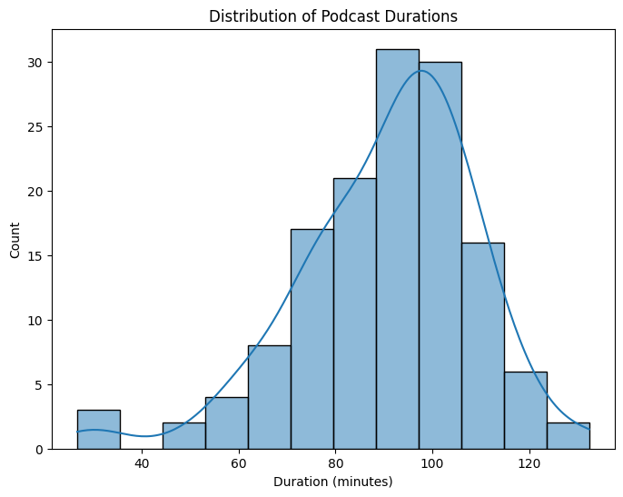
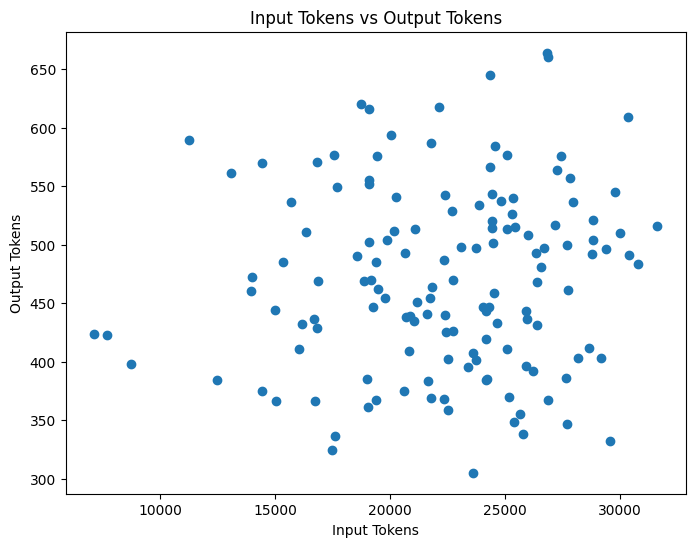
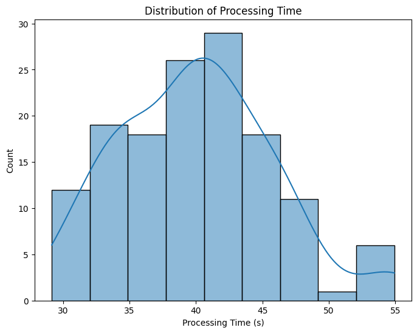
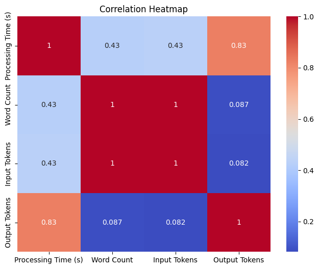

import pandas as pd
import numpy as np
import matplotlib.pyplot as plt
import seaborn as sns
import warnings
warnings.filterwarnings('ignore')Top Books and Interesting Ideas discussed from Steven Bartlett’s Diary of a CEO Podcasts
- Analysed data from Steven Bartlett’s Diary of a CEO podcasts to extract key details like guest names, bios, book recommendations, and interesting ideas discussed
- Processed a total of 140 podcast transcripts, spending over 93 minutes of processing time
- Used over 3.1 million input tokens and generated nearly 66,000 output tokens from Anthropic’s Claude 3 API
- Visualized relationships between word count, processing time, input tokens and output tokens using matplotlib and seaborn
- Estimated the total cost of the project at around $52 based on Anthropic’s Claude 3 Opus pricing for input and output tokens
- Extracted and summarized the top books and ideas discussed across all the podcasts analyzed, spanning nearly 212 hours of content
df = pd.read_csv("podcast_analysis_doac_21_22.csv")df.head()| Unnamed: 0 | File Name | date_published | duration | duration_in_minute | Processing Time (s) | Word Count | Input Tokens | Output Tokens | Result | |
|---|---|---|---|---|---|---|---|---|---|---|
| 0 | 0 | Liam Payne Opens Up About His Darkest Moments,... | 2021-06-06 | 5891 | 98.183333 | 34.027300 | 23318 | 29558 | 332 | Here is my attempt at summarizing the key poin... |
| 1 | 1 | Molly Mae: How She Became Creative Director Of... | 2021-12-12 | 6083 | 101.383333 | 38.254509 | 23138 | 29179 | 403 | Here is a summary of the key points from the i... |
| 2 | 2 | Jordan Peterson: How To Become The Person You’... | 2022-01-02 | 3850 | 64.166667 | 35.856722 | 10771 | 13978 | 460 | Here is my attempt at summarizing the key poin... |
| 3 | 3 | The Happiness Expert That Made 51 Million Peop... | 2021-10-10 | 7053 | 117.550000 | 44.948248 | 21788 | 27458 | 576 | Here is my attempt at summarizing the key poin... |
| 4 | 4 | Jimmy Carr: The Easiest Way To Live A Happier ... | 2021-11-14 | 6028 | 100.466667 | 48.213052 | 20739 | 26683 | 497 | Here is my summary of the key points from the ... |
# overall processing time, total input tokens, total output token, number of podcast
print("Overall Processing Time in Minutes: ", df['Processing Time (s)'].sum()/60)
print("Overall Input Tokens: ", df['Input Tokens'].sum())
print("Overall Output Tokens: ", df['Output Tokens'].sum())
print("Overall Total Tokens: ", df['Input Tokens'].sum()+df['Output Tokens'].sum())
print("Number of Podcasts: ", df.shape[0])
print("Total Hours of Podcasts: ", df['duration_in_minute'].sum()/60)
million_input_token_price = 15
million_output_token_price = 75 # in dollar
print("Overall Input Token Cost: ", df['Input Tokens'].sum()/1000000*million_input_token_price)
print("Overall Output Token Cost: ", df['Output Tokens'].sum()/1000000*million_output_token_price)
Overall Processing Time in Minutes: 93.40692395766577
Overall Input Tokens: 3127877
Overall Output Tokens: 65931
Overall Total Tokens: 3193808
Number of Podcasts: 140
Total Hours of Podcasts: 211.68527777777774
Overall Input Token Cost: 46.918155
Overall Output Token Cost: 4.944825000000001df.info()<class 'pandas.core.frame.DataFrame'>
RangeIndex: 140 entries, 0 to 139
Data columns (total 10 columns):
# Column Non-Null Count Dtype
--- ------ -------------- -----
0 Unnamed: 0 140 non-null int64
1 File Name 140 non-null object
2 date_published 140 non-null object
3 duration 140 non-null int64
4 duration_in_minute 140 non-null float64
5 Processing Time (s) 140 non-null float64
6 Word Count 140 non-null int64
7 Input Tokens 140 non-null int64
8 Output Tokens 140 non-null int64
9 Result 140 non-null object
dtypes: float64(2), int64(5), object(3)
memory usage: 11.1+ KBdf["date_published"] = pd.to_datetime(df["date_published"])
df.set_index('date_published', inplace=True)
# Duration distribution
plt.figure(figsize=(8, 6))
sns.histplot(df['duration_in_minute'], kde=True)
plt.xlabel('Duration (minutes)')
plt.ylabel('Count')
plt.title('Distribution of Podcast Durations')
plt.show()
# Scatter plot of Word Count vs Duration
plt.figure(figsize=(8, 6))
plt.scatter(df['duration_in_minute'], df['Word Count'])
plt.xlabel('Duration (minutes)')
plt.ylabel('Word Count')
plt.title('Word Count vs Duration')
plt.show()
# Plot 1: Processing Time vs Word Count
plt.figure(figsize=(8, 6))
plt.scatter(df['Word Count'], df['Processing Time (s)'])
plt.xlabel('Word Count')
plt.ylabel('Processing Time (s)')
plt.title('Processing Time vs Word Count')
plt.show()
# Plot 2: Input Tokens vs Output Tokens
plt.figure(figsize=(8, 6))
plt.scatter(df['Input Tokens'], df['Output Tokens'])
plt.xlabel('Input Tokens')
plt.ylabel('Output Tokens')
plt.title('Input Tokens vs Output Tokens')
plt.show()
# Plot 3: Distribution of Processing Time
plt.figure(figsize=(8, 6))
sns.histplot(df['Processing Time (s)'], kde=True)
plt.xlabel('Processing Time (s)')
plt.ylabel('Count')
plt.title('Distribution of Processing Time')
plt.show()
# Plot 4: Correlation Heatmap
plt.figure(figsize=(8, 6))
corr_matrix = df[['Processing Time (s)', 'Word Count', 'Input Tokens', 'Output Tokens']].corr()
sns.heatmap(corr_matrix, annot=True, cmap='coolwarm')
plt.title('Correlation Heatmap')
plt.show()


Download Youtube Video Transcripts
import os
from pytube import Playlist
from youtube_transcript_api import YouTubeTranscriptApi
from youtube_transcript_api._errors import TranscriptsDisabled, NoTranscriptFound
def download_playlist_transcripts(playlist_url):
# Create a Playlist object using the provided URL
playlist = Playlist(playlist_url)
# Create a folder named "podcast" if it doesn't exist
if not os.path.exists("podcast_ceo"):
os.makedirs("podcast_ceo")
# Create a dictionary to store file name, date published, and podcast duration
podcast_info = {}
total_videos = len(playlist.videos)
# Iterate through each video in the playlist
for i, video in enumerate(playlist.videos, start=1):
video_id = video.video_id
try:
# Attempt to fetch the transcript for the current video
transcript = YouTubeTranscriptApi.get_transcript(video_id)
# Saving the transcript to a text file in the "podcast" folder
file_name = f"{video.title}.txt".replace("/", "-") # Replace '/' to avoid file path issues
file_path = os.path.join("podcast_ceo", file_name)
with open(file_path, 'w', encoding='utf-8') as file:
for line in transcript:
file.write(f"{line['text']}\n")
# Add file name, date published, and podcast duration to the dictionary
podcast_info[file_name] = {
"date_published": video.publish_date.strftime("%Y-%m-%d"),
"duration": video.length
}
if i % 50 == 0:
print(f"Processed {i} out of {total_videos} videos")
except TranscriptsDisabled:
print(f"Transcripts are disabled for video: {video.title}")
except NoTranscriptFound:
print(f"No transcript found for video: {video.title}")
except Exception as e:
print(f"An error occurred: {e}")
return podcast_info
playlist_url = 'https://www.youtube.com/playlist?list=PL22egh3ok4cP0T7UZRmP6TMLErZYWMN-l'
podcast_info = download_playlist_transcripts(playlist_url)Transcripts are disabled for video: Dr Alex George: My Hardest Day in A&E, Family Suicide & Finding TRUE Purpose. | E89
Processed 50 out of 278 videos
Processed 100 out of 278 videos
Transcripts are disabled for video: Stephen Fry: “Lost, alone and I wanted to take my life” | E201
Processed 150 out of 278 videos
Processed 200 out of 278 videos
Processed 250 out of 278 videosimport pandas as pd
df = pd.DataFrame.from_dict(podcast_info, orient='index')
df = df.reset_index()
df = df.rename(columns={'index': 'File Name'})
df["duration_in_minute"] = df["duration"]/60
df| File Name | date_published | duration | duration_in_minute | |
|---|---|---|---|---|
| 0 | Liam Payne Opens Up About His Darkest Moments,... | 2021-06-06 | 5891 | 98.183333 |
| 1 | Molly Mae: How She Became Creative Director Of... | 2021-12-12 | 6083 | 101.383333 |
| 2 | Jordan Peterson: How To Become The Person You’... | 2022-01-02 | 3850 | 64.166667 |
| 3 | The Happiness Expert That Made 51 Million Peop... | 2021-10-10 | 7053 | 117.550000 |
| 4 | Jimmy Carr: The Easiest Way To Live A Happier ... | 2021-11-14 | 6028 | 100.466667 |
| ... | ... | ... | ... | ... |
| 271 | The Manipulation Expert: You're Being Manipula... | 2024-03-18 | 7242 | 120.700000 |
| 272 | The Childhood Trauma Doctor: Childhood Trauma ... | 2024-03-21 | 6431 | 107.183333 |
| 273 | From My Garden Shed To $100m Business Empire! ... | 2024-03-25 | 6172 | 102.866667 |
| 274 | The Gottman Doctors: Women Tend to Be More Unh... | 2024-03-28 | 7603 | 126.716667 |
| 275 | The Better-Sex Doctor: The Link Between Mastur... | 2024-04-01 | 6849 | 114.150000 |
276 rows × 4 columns
df["date_published"] = pd.to_datetime(df["date_published"])
df["year"] = df["date_published"].dt.year
df.to_csv("podcast_info_diary.csv")df = pd.read_csv("podcast_info_diary.csv")
# Filter the DataFrame to only include rows where the year is 2021 or 2022
df_2021_22 = df[(df['year'] == 2022) | (df['year'] == 2021)]import oslen(os.listdir("podcast"))
63df_2021_22.head()
| Unnamed: 0 | File Name | date_published | duration | duration_in_minute | year | |
|---|---|---|---|---|---|---|
| 0 | 0 | Liam Payne Opens Up About His Darkest Moments,... | 2021-06-06 | 5891 | 98.183333 | 2021 |
| 1 | 1 | Molly Mae: How She Became Creative Director Of... | 2021-12-12 | 6083 | 101.383333 | 2021 |
| 2 | 2 | Jordan Peterson: How To Become The Person You’... | 2022-01-02 | 3850 | 64.166667 | 2022 |
| 3 | 3 | The Happiness Expert That Made 51 Million Peop... | 2021-10-10 | 7053 | 117.550000 | 2021 |
| 4 | 4 | Jimmy Carr: The Easiest Way To Live A Happier ... | 2021-11-14 | 6028 | 100.466667 | 2021 |
df_2021_22.shape
(140, 6)import os
import anthropic
from dotenv import load_dotenv
from IPython.display import Markdown# Load API keys from .env file
load_dotenv()
api_key = os.getenv("ANTHROPIC_API_KEY")
# Set up the Anthropic API client
client = anthropic.Client(api_key=api_key)
transcript_directory = "podcast_ceo"
def process_transcript(transcript_text):
prompt = f"""Here is the transcript from a YouTube video from the Diary of CEO channel, which contains an interview conducted by host Steven Bartlett with a guest:
<transcript>
{transcript_text}
</transcript>
Please carefully read through the entire transcript above. Then complete the following steps:
1. Extract a short 1-2 sentence bio of the guest, if possible based on information in the transcript.
2. Extract if they have any book recommendations
3. Summarize the main topics and interesting points discussed in the conversation.
4. Highlight any key lessons, insights, or advice shared by the guest.
5. Mention any personal anecdotes or stories shared by the guest about their life, career journey, or challenges they've faced.
6. Note any discussion of the guest's mindset, habits, or strategies for success.
Do not hallucinate or fabricate any information. If some piece of information requested above is not found in the transcript, simply skip that part. Do not write things like "not found in transcript".
Provide your full response inside <result> tags.
"""
response = client.messages.create(
model="claude-3-opus-20240229",
max_tokens=4096,
messages=[
{"role": "user", "content": prompt}
]
)
return response
import time
# Process each transcript file in the directory
results = {}
for i, filename in enumerate(df_2021_22['File Name']):
if filename.endswith(".txt"):
# Read the transcript text from the file
with open(os.path.join(transcript_directory, filename), "r") as file:
transcript_text = file.read()
display(Markdown(f"**Processed {i+1}/{len(df_2021_22)}: {filename}**"))
display("*"*100)
# Process the transcript using Claude
start_time = time.time()
result = process_transcript(transcript_text)
end_time = time.time()
processing_time = end_time - start_time
# Get the number of words in the file
word_count = len(transcript_text.split())
# Store the result, processing time, word count, input tokens, and output tokens in the dictionary
results[filename] = (processing_time, word_count, result.usage.input_tokens, result.usage.output_tokens, result.content[0].text)
display(Markdown(result.content[0].text))
display(Markdown(f"Input tokens: {result.usage.input_tokens}"))
display(Markdown(f"Output tokens: {result.usage.output_tokens}"))
display(Markdown(f"Processing time: {processing_time} seconds"))
display(Markdown(f"Podcast Word count: {word_count}"))
Processed 1/140: Liam Payne Opens Up About His Darkest Moments, Failed Relationships & Entrepreneurship!.txt
'****************************************************************************************************'Here is my attempt at summarizing the key points from the podcast transcript:
Bio: Liam Payne is a former member of the mega-popular boy band One Direction. He has since pursued a solo music career.
Main topics discussed: • Liam’s experience with fame and success at a young age as part of One Direction, and the challenges that came with that • His struggles with mental health, alcoholism, and finding happiness and purpose after the band ended • The importance of taking care of yourself, setting boundaries, and having a support system • His business ventures and investments outside of music • Learning to enjoy the moment, relax, and figure out what truly makes you happy
Key insights and lessons shared: • Fame and success don’t necessarily equate to happiness, and can often lead to a lot of pressure and mental health challenges • It’s important to grow and mature as a person separate from your professional success • You need to have something to strive for and work towards to find fulfillment • Respect for yourself and being able to go to bed at night respecting who you are is crucial to being happy
Personal anecdotes and stories: • Liam shared stories of his wild experiences touring the world with One Direction, like breaking into famous stadiums for fun • He opened up about his battles with alcoholism and mental health struggles trying to adjust to post-band life • Liam talked about growing up poor and how that impacted his relationship with money and drive for success
Input tokens: 29558
Output tokens: 332
Processing time: 34.027299880981445 seconds
Podcast Word count: 23318
Processed 2/140: Molly Mae: How She Became Creative Director Of PLT At 22 | 110.txt
'****************************************************************************************************'Here is a summary of the key points from the interview with Molly Mae:
Input tokens: 29179
Output tokens: 403
Processing time: 38.25450873374939 seconds
Podcast Word count: 23138
Processed 3/140: Jordan Peterson: How To Become The Person You’ve Always Wanted To Be | E113.txt
'****************************************************************************************************'Here is my attempt at summarizing the key points from the transcript:
Bio of guest: Jordan Peterson is a clinical psychologist and best-selling author.
Main topics discussed: - The importance of speaking your truth and being your authentic self in relationships and your career - The role of struggle and chaos in life, and not trying to rid your life of struggle - The unintended consequences of remote work and virtualization without fully understanding what we lose from in-person environments - The lessons from the pandemic and society’s response to it - The best way to encourage people and help them change is by listening to them rather than forcing advice on them - Pursuing what is meaningful and aiming to be good, rather than just pursuing happiness
Key insights and advice from Jordan Peterson: - Don’t lie or deceive yourself, as it will compromise your own wisdom and ability to orient yourself properly - Sit on your bed and meditate on “what’s one thing I’m doing wrong that I know I’m doing wrong that I could fix” to gain self-knowledge - Put yourself in the most virtuous and powerful negotiating position possible when you feel trapped in your career - Example is better than advice when trying to encourage someone. Ask them honest questions and really listen. - Aim to climb uphill to the highest peak you can envision in life. That’s better than happiness, though happiness may come along the way.
Personal anecdote: - Wherever Peterson goes in the world, people come up to him, often in tears, to share how they’ve overcome despair, suicidal thoughts, or feelings of being trapped after listening to his work. Though triumphant, it’s also awful to see the depth of people’s initial despair.
Mindset and success strategies: - Peterson has debated pursuing a political career at various decision points in his life, but has always chosen to focus on encouraging the individual, which he sees as a theological rather than political enterprise - He aims to speak truthfully, take the consequences, and have faith that truth, beauty and love will make things work out favorably in the end
Input tokens: 13978
Output tokens: 460
Processing time: 35.85672187805176 seconds
Podcast Word count: 10771
Processed 4/140: The Happiness Expert That Made 51 Million People Happier: Mo Gawdat | E101.txt
'****************************************************************************************************'Here is my attempt at summarizing the key points from the transcript:
Book recommendations: - Gawdat wrote the book “Solve for Happy” about his research into happiness - He also wrote the book “Scary Smart” about the implications of artificial intelligence (AI)
Main topics discussed: - Gawdat’s background growing up in the Middle East and working at Google - His research into happiness and the “happiness equation” after facing depression despite his success - The passing of his son Ali at age 21 and how he coped with that loss - Gawdat’s mission to help one billion people find happiness - The importance of living in the present moment and avoiding expectations - The rise of artificial intelligence and the existential questions it raises for humanity - The need to instill ethics and values into AI systems as they gain intelligence - Empowering the feminine qualities of nurturing, creativity, empathy in the world
Key lessons and advice: - Happiness comes when your perception of events meets or exceeds your expectations - You can influence your happiness by managing your expectations and perceptions - True, unconditional love is the only kind of love that leads to lasting happiness - In the face of tragedy or hardship, radical acceptance is key - accepting you can’t change it and moving forward - As AI systems become more intelligent than humans, it’s critical we instill them with positive values and ethics - Society needs to embrace and encourage more feminine qualities like nurturing, empathy, and creativity
Personal anecdotes: - After achieving success at Google, Gawdat still found himself depressed, leading him to research happiness - He developed a close relationship with his son Ali who was very wise and helped shape his views - After Ali passed away from surgical complications at 21, Gawdat decided to honor him by writing and sharing the lessons Ali taught him about happiness - Gawdat was in a 28 year relationship and has an amicable friendship with his ex despite their separation
Gawdat’s mindset and strategies: - He approaches the topic of happiness from an engineering and problem-solving mindset - Gawdat believes in taking full responsibility for one’s thoughts, emotions and experience of life - He is an optimist about humanity’s ability to deal with the challenges of AI by demonstrating positive values and ethics - Gawdat aims to spread ripples of positivity by reaching enough people with his message of happiness
Input tokens: 27458
Output tokens: 576
Processing time: 44.94824814796448 seconds
Podcast Word count: 21788
Processed 5/140: Jimmy Carr: The Easiest Way To Live A Happier Life | E106.txt
'****************************************************************************************************'Here is my summary of the key points from the transcript:
Main topics discussed: - Finding your purpose and pursuing it doggedly - The importance of hard work and nurture in achieving success - Happiness comes from being in a “flow state” doing what you love, and having gratitude - Dealing with depression, anxiety, and being publicly shamed over a tax avoidance scandal - Changing up his comedy style to reveal more about himself and connect with the audience in a deeper way
Key lessons and advice: - Find what you have a natural ability for and work hard at that thing you enjoy. Lean into your edge. - Take responsibility for your life and happiness. You have to know who you are and what you want. - Spend as much time as possible in a “flow state” doing the thing you love. That is where happiness lies. - Talk openly about mental health challenges. Remember “this too shall pass” when going through dark times. - You are responsible for your own happiness. You being happy makes the world and people around you better.
Personal anecdotes: - Dealt with his mother’s depression growing up by trying to cheer her up, which led to him becoming a comedian - Worked a corporate job at Shell in his 20s but felt unfulfilled and quit to pursue comedy, initially making very little money - Had panic attacks and a depressive episode in Australia in 2018 after traveling too much and feeling depleted of serotonin - Lost his virginity late at age 26 due in part to religious faith and being very close with his mother
Mindset and success strategies: - Views depression and anxiety as the flip side of creativity. Chooses to face it with a positive attitude. - Believes in taking an honest look at your inner critic to identify your starting point, then working to improve from there - Sees failure as an inevitable part of the journey to success. Has “made friends with failure” as a comedian. - Sets ambitious goals for himself to keep growing, like changing up his comedy style to get better as a performer
Input tokens: 26683
Output tokens: 497
Processing time: 48.21305203437805 seconds
Podcast Word count: 20739
Processed 6/140: Matt Hancock: Opens Up About His Affair, Mistakes & The Pandemic | E121.txt
'****************************************************************************************************'Here is my summary of the key points from the interview:
Main topics discussed: • Hancock’s background and path into politics • His role as Health Secretary during the COVID-19 pandemic, including the UK’s response during the first and second waves, developing a vaccine, and providing guidance to the public • Criticisms of the UK’s pandemic response and things that could have been done better in hindsight • Hancock’s view that it’s important to have empathy and relatability in politics • Hancock resigning as Health Secretary after being seen breaking social distancing guidelines • Hancock’s personal life and challenges he has faced, including going through a public relationship breakup • Hancock’s current focus on improving support for people with dyslexia
Key insights and lessons shared: • As Health Secretary during the pandemic, Hancock had to make very difficult decisions balancing protecting public health with economic and social costs. In hindsight, he acknowledges some things could have been done differently, like acting sooner to restrict movement of staff between care homes. • Hancock believes empathy and emotional intelligence are important in politics in order to relate to people, but it can be challenging for politicians to show emotion and vulnerability. • Hancock took responsibility and resigned as Health Secretary after being seen breaking social distancing guidelines because he felt it was the right thing to do after the sacrifices many people had made during lockdowns.
Personal anecdotes shared: • Hancock shared the story of his family’s business nearly going under during a recession when he was a teenager, which influenced his interest in economics and politics. • Hancock discussed falling in love with his current partner Gina, who he has known for many years, while she was working with him at the Department of Health. This led to the end of his previous relationship in a very public way.
Mindset and strategies for success: • Hancock emphasized the importance of empathy in leadership and politics. He acknowledged he has struggled at times to show emotion but it’s something he is working on. • Hancock discussed learning from mistakes, taking responsibility for one’s actions, and focusing on fixing problems rather than assigning blame. • Hancock shared his motivation to use his platform to create positive change, such as his current focus on improving support for people with dyslexia.
Input tokens: 24449
Output tokens: 543
Processing time: 43.696882009506226 seconds
Podcast Word count: 19394
Processed 7/140: Ant Middleton Opens Up About His Personal Demons, Being “Cancelled” & His Spirituality | E74.txt
'****************************************************************************************************'Here is my analysis of the transcript:
Input tokens: 25297
Output tokens: 526
Processing time: 42.08317494392395 seconds
Podcast Word count: 19724
Processed 8/140: Gymshark CEO: How I Built A $1.5 Billion Business At 19! Ben Francis.txt
'****************************************************************************************************'Here is my summary of the key points from the interview:
Main topics discussed: - Ben’s early influences and experiences that shaped his entrepreneurial journey, including working with his grandfather and learning Photoshop and web development skills in school - The importance of surrounding yourself with great people and mentors - Developing public speaking skills and becoming comfortable being the face of the Gymshark brand - Dealing with challenges and crises as a CEO, including handling social media backlash - The future vision and ambition for Gymshark to become an iconic, global British brand - Maintaining company culture and brand identity while scaling rapidly - The importance of passion, failure, and hard work when starting a business
Key lessons and advice: - Write down your strengths and weaknesses, and work on improving your weak areas - Surround yourself with people who are better than you in certain areas and learn from them - Embrace change and be adaptable, especially in a fast-growing business - Don’t be afraid to fail; keep trying new ideas until you find one that works - Find what you’re truly passionate about and lean into that when starting a business - Hard work alone is not enough; you need to combine it with working smart
Personal anecdotes: - Getting negative 360-degree feedback about his leadership style was a turning point that made Ben realize he needed to change and improve - Having thousands of nasty comments and death threats directed at him on social media was difficult to handle emotionally as a CEO
Mindset and success strategies: - Retaining an incredible work ethic while also investing in the right people and surrounding yourself with a great team - Developing resilience to deal with the daily challenges and major crises that come with being a CEO - Staying humble and down-to-earth despite the massive success of the business - Constantly learning and being open to feedback in order to grow as a leader
Input tokens: 26339
Output tokens: 493
Processing time: 40.362231969833374 seconds
Podcast Word count: 20995
Processed 9/140: Moonpig Founder: How I Built A $150 Million Business WITHOUT Sacrifice: Nick Jenkins | E97.txt
'****************************************************************************************************'Here is my summary of the conversation with Nick Jenkins:
Input tokens: 19805
Output tokens: 454
Processing time: 37.380472898483276 seconds
Podcast Word count: 15774
Processed 10/140: The Rise, The Fall & The Rebuild Of True Geordie | E87.txt
'****************************************************************************************************'Here is a summary of the key points from the transcript:
Input tokens: 25933
Output tokens: 396
Processing time: 35.965460777282715 seconds
Podcast Word count: 20208
Processed 11/140: Israel Adesanya: Becoming World Champion Was The Lowest Day Of My Life!.txt
'****************************************************************************************************'Here is a summary of the key points from the interview with Israel Adesanya:
Bio: Israel Adesanya is the UFC Middleweight Champion and one of the top mixed martial artists in the world.
Main topics discussed: - Adesanya’s childhood moving from Nigeria to New Zealand and experiencing racism and bullying in school - How Adesanya keeps himself grounded by surrounding himself with people who knew him before fame and money - Adesanya’s aspirations to leave a lasting legacy and have his name remembered in history after he’s gone - Manifesting goals and dreams through visualization and the power of the mind - Keeping his personal life and relationships private and guarded from the public eye
Key insights and advice: - Be authentically yourself and don’t try to please everyone. Those who appreciate you will gravitate towards you. - Learn to say no and set boundaries to protect your time, energy and peace - You can’t make everyone happy. Someone will always find something to criticize no matter what you do. - Everything in life is temporary and fleeting. Enjoy the good times but know that challenges will come, and they too shall pass. - Greatness requires an almost delusional sense of self-belief. You have to be able to dream big and manifest what you want.
Personal anecdotes and stories: - When Adesanya bought his dream car, a McLaren, he felt undeserving at first after hearing criticism from others. But he realized he earned it through hard work. - After his UFC debut win, Adesanya crashed emotionally from the high and realized he needed to take care of his mental health, likening it to physical health. - Adesanya cried watching his friend weigh in before a fight, showing his sensitive and empathetic side despite being a fierce competitor.
Mindset and success strategies: - Adesanya has a powerful imagination and strong belief in manifesting his goals and dreams. He even practices paddle shifting his steering wheel to prepare for the sports cars he envisions owning. - Legacy is very important to Adesanya. He wants to be remembered in history books as one of the greatest and leave behind a lasting positive feeling in those he impacted. - While Adesanya enjoys the perks of fame, he doesn’t let it define him. He knows his self-worth and identity outside of fighting and championship belts.
Input tokens: 24837
Output tokens: 537
Processing time: 40.630833864212036 seconds
Podcast Word count: 19599
Processed 12/140: Deliveroo Founder: From £0 to £5 Billion: Will Shu | E88.txt
'****************************************************************************************************'Here is a summary of the key points from the transcript:
Book recommendations: None mentioned.
Main topics discussed:
- How Will started Deliveroo and the challenges he faced in the early days, including running low on money and having to deliver food himself
- The emotional challenges of laying off employees during tough times
- The importance of focusing on solving a problem you care about as an entrepreneur
- How competition and regulation have impacted Deliveroo’s journey
- Will’s thoughts on the future of online food delivery and making it a more emotional experience
- How being a founder can become all-consuming and the importance of separating your own journey from the company’s
- Key lessons and advice:
- Start a business to solve a problem you really believe in, not just to start a business
- Having limited money forces you to be more efficient and focus on what’s most important
- The early stages of starting a company, when the team is small, are often the most fun
- It’s important to treat delivery riders with respect, having been one himself
- Personal anecdotes:
- Will delivered Deliveroo’s very first order but delivered the pizza upside-down
- In the early days, Will and the other riders would hang out at a Starbucks but kept getting kicked out
- Will had an awkward experience delivering food to a former colleague from his finance job
- Will still occasionally does deliveries himself to test the app and see the restaurant interactions
- Mindset and habits:
- Will is very obsessive and focused on his work, sometimes at the expense of personal relationships
- He doesn’t pay much attention to what others think of him
- Despite Deliveroo’s success, he still lives simply and doesn’t buy many things
- He believes it’s important for founders to create space to step back from always being pulled by urgent demands
Input tokens: 21747
Output tokens: 454
Processing time: 37.493093967437744 seconds
Podcast Word count: 16999
Processed 13/140: Patricia Bright: How She Made Her Millions | E91.txt
'****************************************************************************************************'Here is a summary of the key points from the transcript:
Main discussion points: - Patricia’s childhood growing up on a council estate in London, her father being deported when she was 5 years old, and her mother working cleaning jobs to support the family - Patricia’s experience at university studying fashion and later switching to accounting and finance - How Patricia got started with blogging and YouTube as a hobby and creative outlet, which eventually turned into a successful career - The challenges of being a female influencer, including the pressures and double standards compared to men, and dealing with a stalker for several years - Patricia’s passion project, The Break, focused on providing financial education and empowerment, especially for women - Working with her husband and balancing a relationship with an entrepreneurial career - Patricia’s thoughts on fame and her desire to focus more on creating valuable content and products rather than being a public personality
Key lessons and advice: - Be authentic and true to yourself, and focus on connecting with an audience that resonates with your genuine self - Consistency is key - Patricia credits her success to consistently creating content over many years - Don’t be afraid to set boundaries and make choices to protect your well-being, even if it means turning down opportunities - Lean into your unique voice and perspective, and don’t try to be something you’re not just to chase trends or popularity
Input tokens: 17607
Output tokens: 336
Processing time: 30.64594006538391 seconds
Podcast Word count: 13756
Processed 14/140: Grace Beverley: How To Build A Multi-Million Pound Empire At 24 | E69.txt
'****************************************************************************************************'Here is my attempt at extracting the requested information from the transcript:
Book recommendations: None found in transcript.
Main topics:
- Grace’s journey starting businesses at a young age, first gradually monetizing content, then launching brands
- The sacrifices and challenges of being a young, female entrepreneur
- Dealing with criticism and negativity on social media
- Learning to hire experienced people and delegate rather than trying to do everything yourself as a founder
- Struggling with burnout, mental health challenges, and seizures from overworking
- Striving for more work-life balance and boundaries
- Plans for her businesses going forward and proving she can grow them successfully
- Key lessons and advice:
- Have confidence in your abilities even if you face doubters as a young or female entrepreneur
- Outsource and hire people who are better than you rather than trying to do everything yourself
- Take mental health seriously and listen to warning signs from your body about burnout and overworking
- Toxic “hustle culture” and working all the time is not healthy or productive
- More is not always better - focus on doing a few things really well
- Stay in touch with what makes you happy and fulfilled
- Personal anecdotes:
- Working on her business while studying at Oxford, often at the detriment of her university experience
- Facing sexist attitudes and people underestimating her as a young woman in business
- Being hospitalized for seizures caused by overworking and ignoring her mental health
- Struggling with confidence and craving external validation when first growing an online following
- Mindset and strategies:
- Determination to prove people wrong who doubt her abilities
- Using her audience and instincts to vet new business and product ideas
- Focusing on long-term brand building and doing a few things really well rather than chasing every opportunity
- Giving herself permission to still live life as a normal 20-something while running her businesses
- Practicing more self-compassion and not tying her self-worth to external validation
Input tokens: 31636
Output tokens: 516
Processing time: 47.8820219039917 seconds
Podcast Word count: 25098
Processed 15/140: Productivity Expert: How To Finally Stay Productive: Ali Abdaal | E93.txt
'****************************************************************************************************'Here is a summary of the key points from the interview with Ali Abdaal:
Topics discussed: - Ali’s upbringing and decision to study medicine - Why he started making videos on YouTube about medical school admissions and studying - Advice for overcoming procrastination and being more productive - How to learn and retain information more effectively - His perspective on money and the role it plays in happiness and fulfillment - The importance of enjoying the journey rather than just focusing on a destination or goal - How he thinks about having an impact and doing good in the world
Key insights and lessons: - Break tasks down into small, specific next actions to overcome procrastination - Test yourself and use spaced repetition to learn and retain knowledge - Money has diminishing returns on happiness beyond a certain point - Optimize your life around convenience and saving time for things you care about - Living according to your own values and what makes you feel good is key to fulfillment - You can have more impact by building wealth and influence to put towards causes you care about
Personal anecdotes: - Ali’s evolving relationship with money and realizing purchases don’t make him happier - His struggles with confidence and relationships - Experiences with burnout from overworking in medical school
Mindset and success strategies: - Enjoying the process rather than just focusing on outcomes - Defining productivity around meaning and fulfillment, not just output - Focusing on your “daily highlight” - the one key thing to get done each day - Admitting to yourself the real reasons behind your actions and motivations
Input tokens: 26232
Output tokens: 392
Processing time: 39.80533194541931 seconds
Podcast Word count: 20737
Processed 16/140: Rochelle Humes: Learning To Be At Peace With Uncertainty | E118.txt
'****************************************************************************************************'Here is a summary of the key points from the interview with Rochelle Humes:
Main topics discussed: - Rochelle’s childhood growing up with a single mother and an absent father - Her experience in the girl group The Saturdays and why she feels it was a great time in her life - Making a documentary about the high mortality rates for black women in childbirth and the controversy surrounding her involvement - Starting her own baby products business My Little Coco - Balancing work and family life - Her strong and supportive relationship with her husband Marvin
Key lessons and advice: - Acceptance is liberating - don’t hold onto things you can’t change from the past - When making decisions, once you feel at least 51% sure, go with your gut - Pursue things you are passionate about and competent in, not just opportunities - Family doesn’t have to look perfect or a certain way, focus on the love
Personal anecdotes: - Rochelle shared the story of meeting her husband Marvin and the fan backlash to their relationship - She opened up about feeling hurt and blindsided by accusations of “colorism” when making her documentary - Rochelle recalled getting a message from a woman saying “you ruined my life” because the woman was a fan of Marvin
Mindset and success strategies:
- Rochelle focuses on being authentic and true to herself in the projects she takes on - She has learned not to respond to negativity or criticism and prioritize the bigger picture - Taking control of her own career by managing herself was an empowering decision
Input tokens: 23764
Output tokens: 401
Processing time: 35.95145797729492 seconds
Podcast Word count: 18741
Processed 17/140: Jim Chapman: Overcoming Failure Anxiety, Finding Love & Life-Changing Therapy | E78.txt
'****************************************************************************************************'Here is my summary of the key points from the transcript:
Input tokens: 24178
Output tokens: 384
Processing time: 34.475932121276855 seconds
Podcast Word count: 18992
Processed 18/140: Jay Shetty: The 3 Simple Things A Happy Life Needs | E119.txt
'****************************************************************************************************'Here is my attempt at summarizing the key points from the transcript:
Guest Bio: Jay Shetty is a former monk turned social media content creator and motivational speaker who has gained a large global following in a short period of time since 2016. He shares wisdom and insights on topics like meditation, mindfulness, and finding one’s purpose.
Main Topics/Interesting Points: - The importance of spending time alone with one’s thoughts and being comfortable in solitude - Distinguishing between good fear and bad fear, and how to use fear as a tool for growth - The different types of meditation (breathwork, visualization, mantra) and how to incorporate meditation into daily life - The keys to happiness: finding your passion and using it in service of others, plus daily habits like entering a “flow state” - The role that mentors played in Jay’s success, as well as his experience with public speaking from a young age
Key Lessons/Advice: - When facing setbacks or challenges, ask yourself “What part of this am I accountable for?” to gain self-awareness - Schedule time for yourself every day, even just 5 minutes, to work on your relationship with yourself - Launch, learn, and love something new every year to find happiness and fulfillment - View every stage of life, even seemingly menial jobs, as an opportunity to gain valuable skills and mindsets for future success - The four most important decisions in life are: how you feel about yourself, what you do for money, who you give your love to, and how you serve others
Personal Anecdotes: - Jay shared how his parents made him take public speaking classes for 3 hours a day, 3 days a week from age 11 to 18, which gave him valuable communication skills - He struggled to find a job after leaving the monkhood, getting rejected by 40 companies before landing at Accenture - For 10 years before making content online, Jay gave free talks breaking down movies and teaching meditation and philosophy to small groups in London
Mindset/Strategies for Success: - Humility is the most admirable quality in a person - Be open, random, and supportive (ORS mindset) rather than closed, selective, and controlling (CSC mindset) to expand your growth - Persistence is key - Jay mentioned DMing Cristiano Ronaldo 30+ times in hopes of one day interviewing him - View life as a series of experiences that build upon each other rather than as wasted time
Input tokens: 27268
Output tokens: 564
Processing time: 44.82961702346802 seconds
Podcast Word count: 21694
Processed 19/140: James Smith: How To Create The Life You’ve Always Wanted | E120.txt
'****************************************************************************************************'Here is my summary of the key information from the transcript:
Main topics discussed: - James’ feelings of inadequacy growing up and struggling in school - How he gained confidence and found his path to success as a personal trainer - His approach to fitness, dieting, and helping clients make sustainable lifestyle changes - The importance of finding meaning and fulfillment in your career and relationships - Dealing with anxiety, imposter syndrome, and the pressures of success and fame - His desire to have kids and a family in the future
Key lessons and insights: - If you’re unhappy in your career, have the courage to make a change and pursue your passion, even if it’s a struggle at first. Don’t waste years being unfulfilled. - Consistency and commitment are key to building a successful business or brand, even if growth is slow in the beginning. Stay the course. - Express yourself authentically on social media and in your content. Polarizing people and being disliked by some is okay, as long as you cultivate a loyal audience that resonates with your true self. - Work on improving yourself and your character flaws for the sake of being a better human and partner in a relationship. Take responsibility rather than blaming others. - Don’t attribute people’s success to luck. Preparation meeting opportunity is what enables people to capitalize on “lucky” breaks through hard work.
Input tokens: 25398
Output tokens: 348
Processing time: 34.84925103187561 seconds
Podcast Word count: 19842
Processed 20/140: World Leading Sex Therapist: How To Avoid Having Bad Sex: Kate Moyle | E73.txt
'****************************************************************************************************'Here is a summary of the key points from the transcript:
Main topics discussed: • Challenges people face with sex and relationships, including sexual desire issues, communication difficulties, sexual anxiety, and keeping a sexual relationship exciting over time • Role of sexual compatibility in relationships • Dealing with low libido and sexual dysfunctions • Unrealistic expectations as a major killer of modern relationships • Challenges successful entrepreneurs and CEOs face in their personal relationships • Importance of communication as a key principle for couples who enjoy great sexual relationships
Key insights and advice: • Avoid assumptions and strive for open communication with your partner about sex • Accept that sex and relationships change over time and will have ups and downs • Making small changes and trying new things can help keep a sexual relationship fresh and exciting • Lead with positivity and focus on what you like when communicating sexual preferences to a partner • Quality of sex is more important than frequency • Independence and compromise are both important in relationships
Personal anecdotes from Steven Bartlett: • Shared stories of past sexual issues that led to relationship breakdowns, including a partner with low libido and physical sexual incompatibility with another partner • As an entrepreneur, struggles to compromise and prioritize a partner’s needs due to learned behaviors and mindset required for business success
Input tokens: 23617
Output tokens: 305
Processing time: 31.94117307662964 seconds
Podcast Word count: 18616
Processed 21/140: World Leading Psychologist: How To Detach From Overthinking & Anxiety: Dr Julie Smith | E122.txt
'****************************************************************************************************'Here is my response based on the transcript:
Book recommendations: None mentioned.
Main topics:
- Dr. Smith’s journey to becoming a psychologist and growing her social media following
- Navigating the challenges of being a public figure while protecting her privacy and family life
- The importance of values and setting goals that align with your values
- Dealing with stress, anxiety, and overload through practices like journaling, therapy, and breath work
- The role of confidence and self-esteem in making positive life changes
- Death and using mortality as motivation to live a more meaningful life
- Relationships and common relationship myths propagated by social media
- Happiness as an fluctuating emotional state rather than a constant
- Key lessons and advice:
- Follow your interests and do what excites you when choosing a career path
- Make decisions based on your values rather than just your feelings in the moment
- Develop self-compassion rather than just focusing on self-esteem
- Use breathing exercises to help calm anxiety and stress
- Get back to the basics of being human - sleep, nutrition, exercise, human connection
- Treat thoughts and emotions with curiosity rather than judgment
- Meaningful change happens gradually through small actions, not drastically overnight
- Personal anecdotes:
- Dr. Smith started making TikTok videos at the urging of her husband to share mental health knowledge beyond just her therapy patients
- She has struggled with the public attention at times as a naturally introverted, shy person
- Protecting her role as a mother is her top priority as her social media presence grows
- She uses her own children as motivation to continue showing up and being a positive influence
- Mindset and strategies:
- Maintaining integrity to her original purpose of sharing helpful mental health information
- Setting boundaries to protect her family life and personal wellbeing
- Practicing the tools and advice she preaches to her audience
- Embracing discomfort for the sake of her values and beliefs
- Focusing on human connection and relationships as the fabric of a meaningful life
Input tokens: 24486
Output tokens: 501
Processing time: 41.12719106674194 seconds
Podcast Word count: 19539
Processed 22/140: Karren Brady: How To Win At Entrepreneurship & Love (at the same time!).txt
'****************************************************************************************************'Here is my summary of the key points from the interview:
Main topics discussed: • Karren’s childhood and early career in sales, and how she developed resilience, determination and ambition at a young age • Convincing David Sullivan to buy Birmingham City F.C. and let her run it at age 23 • Running Birmingham City F.C. and West Ham United F.C. as a woman in the male-dominated world of football • Creating a good culture and empowering people in an organization through listening, being candid, and supporting them • Balancing a successful career with family and marriage • The importance of equality, respect and creating opportunities for women in business
Key lessons and advice: • Have core values like ambition, determination and integrity to guide your decisions • Don’t be afraid to stand up for yourself, say no, and find another way to get what you want when faced with rejection • Build great teams by hiring people with diverse views and skills, listening to them, and giving them space to achieve • Make the tough personnel decisions needed for the business to succeed • Maintain perspective and don’t worry about criticism from those who don’t really know you • For women, don’t be afraid to be ambitious and to keep striving for success. Never regret the things you don’t do.
Personal anecdotes: • Being dismissed and turned away from the boardroom as a “director’s wife” at her first away game running Birmingham City F.C. • Her son asking her to stop working so much when she was constantly on her Blackberry during a holiday • How she and her husband give each other space to pursue their own interests and do what they love, while still having a strong family bond
Mindset and strategies for success: • Be logical vs. emotional when making tough business decisions • Find a way to keep going and push through when faced with obstacles, even if it means finding another way • Hire people who are better than you and then listen to their opinions • Focus on controlling only what you can control, and don’t worry about the rest • Be very candid and honest in your relationships, both personal and professional
Input tokens: 19092
Output tokens: 555
Processing time: 44.29131293296814 seconds
Podcast Word count: 15201
Processed 23/140: Klarna Founder: From $0 to $46 Billion: Sebastian Siemiatkowski | E98.txt
'****************************************************************************************************'Here is a summary of the main points from the interview:
Input tokens: 21051
Output tokens: 435
Processing time: 36.67239499092102 seconds
Podcast Word count: 17058
Processed 24/140: Jaackmaate: The Untold Story Of My Battle With Health Anxiety & OCD | E127.txt
'****************************************************************************************************'Here is my summary of the key information from the transcript:
Main topics discussed: - Jack’s upbringing and challenging home life with his mom. His dad was more supportive of his YouTube career. - Jack’s journey on YouTube, starting out making commentary videos criticizing other YouTubers, which he later regretted. He lost motivation for his main channel but found renewed passion with his podcast. - Struggles with health anxiety and OCD, constantly worrying he has cancer and engaging in compulsive behaviors and thoughts. - The support of his girlfriend Fiona in helping manage his anxiety. - Brief experience doing stand-up comedy, which he loved and wants to pursue more.
Key lessons and insights: - Pursuing things not authentic to yourself will eventually make you miserable. Jack lost motivation for his main YouTube channel because the content wasn’t true to him. - Having purpose and forward motion are key to happiness and fulfillment. Arriving at your goals can be disorienting. - It’s important to set boundaries with family for your own well-being, even if it’s difficult. - Talking openly about mental health helps reduce the stigma and makes others struggling feel less alone.
Personal stories: - As a child, Jack would experience abuse from his mom. At school, he acted out to try to fit in and make friends. - When Jack’s YouTube career took off, he felt guilty making so much money compared to his working class family and friends with normal jobs. He questioned whether he deserved his success. - Jack shared his experiences with health anxiety and OCD, including constantly worrying he has cancer, checking the time, and engaging in rituals and compulsions. His girlfriend Fiona has helped him manage it.
Strategies for success: - Saying yes to every opportunity that came his way for a full year early in his YouTube career. - Buying a whiteboard to plan out his content, treating YouTube like a full-time job. - Surrounding himself with supportive people like his podcast co-host Stevie and girlfriend Fiona. - Being honest and open with his audience about his struggles and journey.
Input tokens: 26023
Output tokens: 508
Processing time: 43.725462913513184 seconds
Podcast Word count: 20515
Processed 25/140: Rio Ferdinand’s Reveals The Training Ground & Dressing Room Secrets That Made United Unbeatable!.txt
'****************************************************************************************************'Here is my attempt at summarizing the key points from the transcript:
Main topics discussed: - Ferdinand’s childhood and early passion for sports including football, gymnastics, and ballet - The strong culture and leadership under Alex Ferguson at Manchester United that drove the club’s success - Importance of hard work, dedication and having high standards to achieve success - Struggles with mental health and the benefits of opening up and communicating about emotions and vulnerability - Being a parent and instilling good values and work ethic in his children - His post-football career ambitions in business, investing, and building his personal brand beyond just being known for football
Key lessons and advice: - Don’t let others pigeonhole you or tell you what you are - explore, find out who you are and what you enjoy - Embrace discomfort and don’t be afraid to fail - always be willing to try new things - Surround yourself with successful people and learn from them - Hard work should be an everyday lifestyle and mentality, not just a short-term effort - Health is the most important thing - make healthy living a consistent lifestyle
Personal stories and anecdotes: - Pursuing ballet as a child while living on a council estate - Wild lifestyle as a young player at West Ham before learning discipline and dedication at Manchester United - Losing his wife and having to help his children cope with grief - Learning to be more open with communication in his personal relationships and with his children
Mindset and strategies for success: - Intense dedication and desire to be the best, to the point of obsession - Sponge-like curiosity to always ask questions and learn from others - Not being afraid to show vulnerability or admit you don’t know something - Understanding people and knowing how to motivate each individual differently as a leader
Input tokens: 24641
Output tokens: 433
Processing time: 39.0791962146759 seconds
Podcast Word count: 19298
**Processed 26/140: The Subtle Art Of Not Giving A F*ck: Mark Manson | E111.txt**
'****************************************************************************************************'Here is my summary of the key points from the transcript:
Main topics discussed: - Mark’s childhood growing up in Austin, Texas feeling like an outcast and being bullied. His parents’ divorce and emotionally distant household. - Mark’s journey into the world of pick-up artistry to gain confidence and validation from women. He eventually realized it was unfulfilling. - The importance of taking responsibility for your life and not blaming external circumstances. Happiness is a choice in how you perceive things. - Pursuing “highs” like money, status, and sex is unfulfilling compared to finding meaning and happiness in the struggle and effort of pursuing goals. Comfort and affluence can lead to an existential crisis. - Mark struggled with depression and a lack of motivation after his book “The Subtle Art of Not Giving a F*ck” became a huge success. He had to redefine his identity and find a new “why”.
Key lessons and advice: - You have to try things and fail in order to learn what you really want in life. Pursuing the wrong goals can teach you valuable lessons. - Healthy relationships require being honest and vulnerable about your flaws and issues. You have to work on yourself first. - You can always choose how to perceive things in a way that makes you feel better, even if it’s hard. Happiness is a choice. - Expectations can be dangerous if they are unreasonable. It’s better to not have expectations and just accept things as they come. - It’s important to learn how to say no and set boundaries in your work and life to avoid burning out. Taking time off is necessary to recharge creativity.
Personal anecdotes: - Mark shared stories about his first job in finance that made him miserable and inspired him to become an entrepreneur. - He talked about a painful breakup with his first serious girlfriend who cheated on him, which fueled his desire to get into pick-up artistry. - Mark discussed the depression and disorientation he felt after his book became a huge success and he achieved his goals. He had to recalibrate his identity and motivations.
Mindset and strategies: - Be radically honest with yourself and others. Face the uncomfortable truths. - Take responsibility for everything in your life, even if it’s not your fault. You’re always choosing how to respond. - Define your own metrics for success and happiness instead of society’s expectations. Keep exploring new “whys” as you grow. - Find a community of like-minded people who support your growth and hold you accountable.
Input tokens: 22154
Output tokens: 618
Processing time: 45.90584969520569 seconds
Podcast Word count: 17321
Processed 27/140: Ann Summers CEO: The Heartbreaking Story Of One Of Britain’s Richest Women! Jacqueline Gold CBE.txt
'****************************************************************************************************'Here is my summary of the key points from the podcast transcript:
Input tokens: 19005
Output tokens: 385
Processing time: 31.68141198158264 seconds
Podcast Word count: 14746
Processed 28/140: Monzo CEO On Death Threats, Depression & Digital Banking Wars: Tom BlomField.txt
'****************************************************************************************************'Here is my summary of the key points from the transcript:
Main topics discussed: - Bloomfield’s background and journey as an entrepreneur, starting companies like GoCardless and Monzo - The challenges of being a CEO of a fast-growing startup, including stress, anxiety, and impacts on mental health and personal relationships - Monzo’s success in building a disruptive brand and product through authenticity, transparency and solving real customer problems - Dealing with growing pains as a startup scales, such as culture changes, politics, and the need for experienced senior leadership - Bloomfield’s decision to step down as CEO of Monzo due to the toll it took on his wellbeing - Reflections on purpose, happiness and what he’s learned about enjoying life after leaving Monzo
Key lessons and advice: - Choose your co-founders and business partners very carefully as it’s one of the biggest determinants of success or failure - Happiness and mental wellbeing should be the priority, not just relentless ambition and pursuit of success - Discussing emotions and showing vulnerability as a leader can be a powerful way to inspire others and build trust - The early stages of a startup are the most fun when you have a small tight-knit team moving fast - Make the hard decisions early to turn the corner to profitability rather than just focusing on growth
Personal anecdotes: - Bloomfield’s upbringing with ambitious and driven parents who pushed him to study law at Oxford - His experience getting fired from early jobs for being disruptive and not following instructions - Impacts on his personal life and relationship during the most stressful times running Monzo - Receiving death threats and visits from criminals as Monzo shut down accounts for fraud and crime - His newfound appreciation for enjoying the simple things in life after stepping back from Monzo
Mindset and success strategies: - Impulsiveness and naivety to just go for big opportunities without overthinking the risks - Hiring the best people and empowering them to handle their responsibilities to reduce burden on the CEO - Separating one’s identity and self-worth from the company and its success or failure - Deprioritizing balance and self-care as an entrepreneur, but later realizing its critical importance - Now consciously choosing activities and relationships that provide intrinsic happiness and meaning
Input tokens: 27812
Output tokens: 557
Processing time: 44.61892008781433 seconds
Podcast Word count: 21636
Processed 29/140: Fearne Cotton: THIS Is How To Build Confidence & Set Yourself Free | E116.txt
'****************************************************************************************************'Here is my summary of the key points from the transcript:
Main topics discussed: - Fern’s upbringing and early career in TV and radio starting at age 15 - Dealing with imposter syndrome and feeling like she didn’t belong in the TV/radio industry - Her eventual departure from mainstream radio/TV to pursue a more authentic path with her writing and podcast - Her experiences with depression, panic attacks, and prioritizing her mental health - Finding meaning and purpose in life through connection with nature, non-religious prayer, and self-compassion - Gender differences in how success and ambition are perceived, especially for working mothers - Her hopes for her brand Happy Place to help people feel less alone and provide accessible well-being content
Key lessons and advice: - Solitude, nature, and extracting yourself from society’s expectations are important for gaining perspective - We are tiny in the grand scheme of the universe, which can be a humbling and liberating realization - Focus on liking yourself and celebrating your gifts rather than dwelling on mistakes and flaws - Be present and grateful now; life is short so don’t wait to do what makes you happy - Measure success by how you feel rather than external metrics and validation
Personal anecdotes: - Fern’s first panic attack while driving on the motorway and how that led her to question her career - Burning all her childhood diaries during a period of depression as a symbolic fresh start - Her mother’s and grandmother’s experiences with depression
Mindset and strategies: - Listening to your authentic inner voice about what you want, even if it goes against expectations - Countering negative self-talk by focusing on self-compassion and all you have to be grateful for - Believing you are supported by something greater, even if it’s not a formal religious belief - Continuing to strive to show up authentically and do more of what makes you happy
Input tokens: 22725
Output tokens: 470
Processing time: 41.40902280807495 seconds
Podcast Word count: 17879
Processed 30/140: Russell Howard: How To Laugh Through Fear, Anxiety & Imposter Syndrome | E109.txt
'****************************************************************************************************'Here is a summary of the key points from the transcript of Steven Bartlett’s interview with Russell Howard:
Bio: Russell Howard is a comedian who has been performing standup comedy since he was 18 years old. He has a new Netflix comedy special coming out called “Lubricant”.
Main topics discussed: - Howard’s comedic style and influences from his parents - Using comedy as a coping mechanism and to ease tension - Working hard at his craft and constantly writing/performing to improve - Dealing with the emotional highs and lows of performing - How laughter helps make life more bearable - Finding moments of humor and humanity in peculiar situations - The importance of having a life outside of work and finding happiness through relationships and experiences
Key insights: - Fear is a powerful motivator to work hard and be prepared, but it can also be mentally draining - Laughter provides an escape and respite from the difficulties of life - It’s important to have people you can talk to about your struggles to help you realize what you have and find hope - Appreciate the moments of deep human connection and emotion, even if they involve sadness - Constantly expose yourself to new stories, people and experiences to fuel your creativity
Personal anecdotes: - Howard shared the story of his grandfather’s passing, which was the lowest moment of his life but also highlighted the excellence and love in his family - He discussed his pre-show rituals and superstitions like doing keepie-uppies with his opening acts - Meeting peculiar people around the world provides him with funny stories to tell on stage
Input tokens: 25678
Output tokens: 355
Processing time: 34.15355968475342 seconds
Podcast Word count: 19770
Processed 31/140: How To Fix Your Focus & Stop Procrastinating: Johann Hari | E114.txt
'****************************************************************************************************'Here is my summary of the key information from the podcast transcript:
Input tokens: 25785
Output tokens: 338
Processing time: 33.10983896255493 seconds
Podcast Word count: 20286
Processed 32/140: Phones 4u Founder: The Pain Of Becoming A Billionaire: John Caudwell | E124.txt
'****************************************************************************************************'Here is my summary of the key points from the interview:
Input tokens: 19112
Output tokens: 552
Processing time: 41.82660269737244 seconds
Podcast Word count: 14914
Processed 33/140: David Gandy: Highest Paid Male Model Opens Up About Insecurities & Imposter Syndrome | E102.txt
'****************************************************************************************************'Here is a summary of the key points from the interview with David Gandy:
Main topics discussed: - How Gandy differentiated himself and strategically built his modeling career to achieve long-term success - His experience with anxiety, lack of confidence, and imposter syndrome despite his outward success - Preference for alone time and finding red carpet events and fame draining - The inspiration and vision behind launching his own fashion and wellbeing brand
Key lessons and advice: - Have clear goals and a strategy, not just relying on luck - Differentiate yourself and carve your own path rather than following the crowd - Maintain integrity to your vision when collaborating with brands - In this industry you need to develop a thick skin
Personal anecdotes: - Not fitting in and being bullied at school when younger - Sacrificing steady catalog modeling work to pursue riskier but more rewarding editorial and high fashion - Going through periods of darkness and low mood but knowing it would eventually pass
Mindset and success strategies: - Keen observation of successful people and learning from them - Not believing his own hype and press; staying humble - Pushing himself out of his comfort zone with public speaking, writing, etc. - Thinking outside the box and not always following the pack - Promise to make people smile and spread more positivity in a polarized world through his new brand
Input tokens: 15028
Output tokens: 366
Processing time: 30.781734704971313 seconds
Podcast Word count: 11655
Processed 34/140: Mel Robbins: This One Hack Will Unlock Your Happier Life | E108.txt
'****************************************************************************************************'Here is a summary of the key points from the interview with Mel Robbins:
Input tokens: 25337
Output tokens: 540
Processing time: 45.80973505973816 seconds
Podcast Word count: 19824
Processed 35/140: Roman Kemp: Why Communication Is More Important Than Ever | E123.txt
'****************************************************************************************************'Here is my attempt at summarizing the key points from the transcript:
Book recommendations: None mentioned
Main topics discussed:
- Roman’s career journey from working in music to becoming a successful radio presenter
- The impact of losing his friend and producer Joe to suicide
- The importance of talking openly about mental health, especially among men
- Dealing with fame and being in the public spotlight
- Romantic relationships and the difficulty of finding a good partner
- Key insights and advice:
- You have to prove yourself and show you deserve opportunities in your career
- Check in on your friends and ask if they are really okay, even if they seem fine on the surface
- Money and fame do not necessarily equate to happiness
- In a relationship, it’s important to lift up your partner and make sure they don’t feel overshadowed by your success
- Personal stories:
- Roman shared his own experience with suicidal thoughts and a mental breakdown
- He talked about growing up with famous parents and how that impacted his life and mindset
- Roman opened up about his dating struggles and desire to find a relationship like his parents have
- Mindset and strategies for success:
- Roman emphasized the importance of having a good core friend group to keep you grounded
- He said you have to knock on doors and prove yourself to get ahead in your career
- Roman believes in manifesting what you want and credits his mom with instilling that mindset
Input tokens: 21795
Output tokens: 369
Processing time: 31.355462789535522 seconds
Podcast Word count: 17318
Processed 36/140: Patrice Evra: Learning How To Cry Saved My Life!.txt
'****************************************************************************************************'Here is my summary of the key points from the transcript:
Guest bio: Patrice Evra is a former professional footballer who played as a left-back for Manchester United and the French national team.
Main topics discussed: - Evra’s difficult childhood growing up very poor in France with 24 siblings - Being sexually abused by his headmaster at age 13 - The death of his brother from a drug overdose - His journey to becoming a professional footballer despite the odds - Racism he faced during his career, especially the incident with Luis Suarez - Learning to be vulnerable and in touch with his emotions rather than adhering to toxic masculinity - His desire to help and inspire others through sharing his story
Key lessons and insights: - Crying and showing emotion is not a weakness but a strength - Forgiveness is important - Evra has forgiven his abuser and Suarez despite the pain they caused - Being your authentic self is critical - Evra is striving to be the best human he can be, not to be perfect - Standing up for your beliefs and speaking out against injustice, even if it means going against family - Taking care of yourself and your own happiness is just as important as taking care of others
Personal stories: - Details of his impoverished upbringing and the abuse he suffered - Anecdotes from his early football career, including signing his first contract and interactions with Sir Alex Ferguson - The story of the racist incident with Luis Suarez and the aftermath - Opening up to his wife about his abuse after keeping it secret for decades
Mindset and success strategies: - An unshakeable belief in himself and determination to achieve his dreams despite constant doubters - Never giving up even when things were difficult early in his football career - Using his platform to help and inspire others, which gives his life meaning beyond football - Allowing himself to be vulnerable and to grow as a person by getting in touch with his emotions
Input tokens: 20881
Output tokens: 439
Processing time: 34.90848398208618 seconds
Podcast Word count: 16549
Processed 37/140: Reggie Yates Reveals The Secret To Staying Driven & Reaching Your Potential | E90.txt
'****************************************************************************************************'Here is my summary of the key points from the conversation:
Input tokens: 26417
Output tokens: 431
Processing time: 37.19641184806824 seconds
Podcast Word count: 20790
Processed 38/140: How To Take Full Control Of Your Mind: Prof. Steve Peters, The Chimp Paradox | E96.txt
'****************************************************************************************************'Here is a summary of the key points from the transcript:
Book recommendation: Path Through the Jungle by Steve Peters
Main topics discussed: - The workings of the mind, including the “chimp” brain, the rational “human” brain, and the “computer” (beliefs and values) - Gaining insights and managing one’s mind to achieve happiness, confidence and optimize performance - Dealing with stress, uncertainty, and difficult life events like heartbreak - Forming habits and developing resilience - The importance of having a positive self-image and living in line with one’s values - Interacting with others and maintaining healthy relationships
Key lessons and insights: - It’s important to understand how your mind works so you can manage your emotions and not let your “chimp” brain control you - Accepting uncertainty and knowing you can handle any outcome is key to reducing stress and anxiety - When dealing with grief and heartbreak, give yourself time to process the emotions and focus on facts, not false beliefs - We can change habits by making them conscious and linking them to beliefs and values - Gratitude and a positive perspective lead to better psychological and physical health
Personal anecdotes: - Steven Bartlett shares a personal story about a painful romantic rejection and how he coped by verbalizing his emotions and focusing on rational facts to calm his “chimp” brain - He also mentions how the book The Chimp Paradox helped his business partner overcome alcohol addiction
Mindset and strategies for success: - Have a clear idea of the qualities and character traits you want to embody, and let that guide you - Aim to respond to others and approach life with compassion, even when your “chimp” wants to react emotionally - Take time regularly to reflect and gain perspective before starting your day - Develop a habit of gratitude by focusing on the good things in your life
Input tokens: 19470
Output tokens: 462
Processing time: 36.7915358543396 seconds
Podcast Word count: 15247
Processed 39/140: How I Make $1.2 Million A Year From This Podcast | E94.txt
'****************************************************************************************************'Here is my analysis of the transcript:
Input tokens: 7677
Output tokens: 423
Processing time: 29.331576824188232 seconds
Podcast Word count: 6082
Processed 40/140: Life Changing Lessons From 100 Of The World’s Greatest Minds | E104.txt
'****************************************************************************************************'Here is my summary of the transcript:
Book recommendations: No specific book recommendations provided.
Main topics discussed:
- The search for passion and happiness in life and career
- The grief and recovery process after romantic rejection or loss of a loved one
- The role of the “chimp brain” (emotional, irrational) vs the “human brain” (logical, rational) in how we react to situations
- The equation for happiness: events = expectations
- Taking responsibility for your own happiness by managing your thoughts and perceptions
- Accepting what you cannot change while still taking action to improve your life
- Key lessons and advice:
- Passion is a multiplier for human potential, but you need consistency of mind to optimize your performance
- You can’t avoid the grieving process after a loss, but you can challenge the false, irrational thoughts that make it worse
- Visualizing your goals activates your subconscious to help you achieve them
- Happiness comes when your perception of life’s events matches your expectations
- We can train our brains, through practices like meditation, to be happier by replacing negative thoughts with positive ones
- The highest level of happiness comes from accepting what you can’t change and taking action to improve your life despite challenges
Personal anecdotes: The guest shares a personal story of romantic rejection that illustrates the “chimp brain” reaction and how rational thoughts from a friend helped calm those emotions.
Mindset and strategies for success:
- Having a growth mindset focused on effort and process vs a fixed mindset focused on innate talent
- Visualizing your goals consistently to program your subconscious
- Questioning your thoughts and perceptions: Is it true? Can I do something about it? Can I accept it?
- Dedicating yourself to a purpose after a loss as a way of honoring a loved one
Input tokens: 15005
Output tokens: 444
Processing time: 32.46681809425354 seconds
Podcast Word count: 11726
Processed 41/140: Jack Maynard: The Untold Story: How Being Thrown Out The Jungle Changed My Life Forever | E71.txt
'****************************************************************************************************'Here is my analysis of the transcript:
Book recommendations: None mentioned.
Main topics:
- Jack’s career as a YouTuber and reality TV star
- Getting caught up in a controversy while appearing on I’m a Celebrity due to old tweets resurfacing, leading to him being removed from the show
- His struggles with anxiety, depression and PTSD after the controversy
- His experience on SAS: Who Dares Wins helping him overcome his mental health challenges
- His first serious relationship with his current girlfriend who he met during lockdown
- Key lessons and advice:
- Break down overwhelming challenges into small, manageable steps to make them less daunting
- Physical exercise can help improve mental health
- Talking openly about mental health struggles with friends and a therapist can make you feel much better
- Personal stories:
- Jack lived with his famous older brother Conor rent-free when he first moved to London, on the condition that he posted a YouTube video every week, which helped launch his career
- He had severe anxiety and PTSD after the controversy on I’m a Celebrity, to the point where he couldn’t attend social events or go to work meetings
- He almost quit SAS: Who Dares Wins on the first day due to his mental health issues, but working with the show’s therapists and focusing on small steps enabled him to persevere
- Mindset and success strategies:
- Seizing every opportunity to branch out from YouTube into TV, radio, music, etc. in order to grow his career
- Focusing on expanding into business ventures like his production company as a long-term career strategy
Input tokens: 16851
Output tokens: 429
Processing time: 33.52409791946411 seconds
Podcast Word count: 13479
Processed 42/140: Starling CEO: Building a $1.5 Billion Business Against The Odds: Anne Boden | E107.txt
'****************************************************************************************************'Here is my summary of the key points from the transcript:
Book recommendations: None mentioned.
Main topics discussed:
- Ann’s journey from growing up in a working class family to studying computer science and working in traditional banks for 30 years before starting Starling Bank
- The challenges of starting a new bank as a female founder in her 50s
- A falling out with her original CTO and co-founder Tom Blomfield, who left to start rival digital bank Monzo
- Rebuilding Starling after losing the original tech team, and raising a £48 million investment round
- The emotional challenges of running a bank and dealing with customers in difficult financial circumstances
- Ann’s perspective on work-life balance and relationships as a driven female entrepreneur
- Key lessons and advice:
- Take the money when fundraising, and don’t worry too much about valuation - the important thing is to get the funding to build the business
- Be cautious of people offering advice if they don’t have real experience building a business
- Happiness is something you can cultivate by focusing on what’s going right rather than wrong
- Personal stories:
- Ann shared the story of volunteering to resign from Starling during the falling out with her co-founder, but later realizing it was a mistake and returning to take back control of the company
- She talked about how her father, who grew up with a parent suffering from PTSD, taught her resilience and the ability to manage her emotions
- Ann acknowledged struggling to find work-life balance and a successful relationship as a driven entrepreneur
- Mindset and success strategies:
- Ann has always been determined to succeed and exceed people’s expectations of her
- She is driven by a desire to change financial services for the better and help more people have a good relationship with money
- Ann tries to maintain perspective that despite the challenges, running Starling is a privilege and she still finds joy and excitement in what she’s building
Input tokens: 18554
Output tokens: 490
Processing time: 38.24022603034973 seconds
Podcast Word count: 14437
Processed 43/140: Sir David Brailsford: Manchester United’s New Director Reveals His Approach To Winning!.txt
'****************************************************************************************************'Here is my attempt at summarizing the key points from the transcript:
Guest bio: Sir David Brailsford is a British cycling coach who has worked miracles with teams, taking underachieving cycling teams and making them the best in their world and generation. He is known for the concept of marginal gains, which involves breaking down everything you could think of that goes into riding a bike, and then improving it by 1%.
Main topics discussed: - Sir David’s childhood growing up in Wales and his “outsider” mentality from a young age - His passion for cycling from a very early age and moving to France at age 16 to try to become a professional cyclist - Working with the British Olympic cycling program in the late 1990s and turning the team into serial winners - The “core” principles he developed with sports psychiatrist Steve Peters to create the optimal environment for performance - His personal battles with prostate cancer and heart issues in recent years - The emotional side of sports and inspiring people through the way you win, not just winning itself
Key lessons and insights shared: - Success is about finding people’s intrinsic motivation - what’s driving them inside and what they really want to do. A coach’s job is to unleash that. - Worrying about the consequences of an event is detrimental to the process, performance, and chances of achieving that event. You have to leave your “dream” as just a dream and focus on the process. - “Marginal gains” is about getting a little bit better every day/week. Small incremental changes are easier to make stick long-term vs. trying to make major changes all at once. - In sports and life, you worry massively about stuff that never actually happens. In tough moments, accept the situation and “bend like bamboo.” - The “holy grail” is to win but also do it in a way that is loved, admired, and inspiring to people, not just respected. That’s what generates passion and emotion, which is what sports is all about.
Personal anecdotes shared: - As a teenager, he bought a one-way ticket to France with his bike and 700 pounds to his name to try to become a pro cyclist, not speaking any French - He lied on the floor to come up with the idea of “marginal gains,” inspired by the concept in economics - Struggling emotionally after not winning the Tour de France in 2014 and feeling he let everyone down and “failed” - Wanting to spend more time with his daughter Millie after his recent health scares and re-evaluate his priorities in life
Input tokens: 25114
Output tokens: 577
Processing time: 48.77033185958862 seconds
Podcast Word count: 20081
Processed 44/140: Calm App Founder: From $0 To $2 Billion By Making The World Meditate: Michael Acton Smith | E117.txt
'****************************************************************************************************'Here is my summary of the key points from the transcript:
Main topics discussed: • Michael’s early entrepreneurial endeavors starting in his teenage years • His journey founding Firebox.com, Mind Candy, and Calm • The ups and downs and lessons learned from each business • The importance of sleep, meditation and mental health • His personal challenges and growth as a leader • The global mental health crisis and Calm’s mission to help address it
Key lessons and advice: • Curiosity, creativity and connecting dots between ideas is key to an entrepreneurial mindset • Don’t get sucked into believing your own hype during the high times • When facing business struggles, take a step back to gain perspective • Meditation can help rewire the brain to be more responsive instead of reactive • The importance of nurturing relationships and having work/life balance as an entrepreneur • Listening more than you speak is the foundation of good communication
Personal anecdotes: • Michael wasn’t very popular in school and felt like an outsider until university • Faced many challenges and near failures with his early businesses Firebox and Mind Candy • 2021 was one of the hardest years of his life personally due to the toll of the pandemic • Has made mistakes in romantic relationships due to being too obsessed with work • Calm’s mission is very meaningful to him and he’s inspired by user reviews of how the app has helped people
Mindset and strategies: • Believes developing a meditation practice has made him a better leader and person • Focuses on the foundations of nutrition, exercise, mindfulness and sleep • Aims to be a calm, stable leader for his team instead of overreacting to highs and lows • Believes psychedelics combined with therapy hold promise for the mental health crisis
Input tokens: 22390
Output tokens: 440
Processing time: 35.13962388038635 seconds
Podcast Word count: 17683
Processed 45/140: World Leading Mindset Expert: How To Reach Your Full Potential - Matthew Syed | E84.txt
'****************************************************************************************************'Here is a summary of the key points from the conversation:
Main topics discussed: - The difference between a fixed and growth mindset, and the importance of a growth mindset for maximizing potential - The importance of cognitive diversity and having people with different perspectives on teams to drive innovation - The dangers of the “curse of perfectionism” and fear of failure preventing people from taking action on ideas - The problem with “cancel culture” and judging people too harshly for minor mistakes or statements made when young - Key attributes of successful leaders, including humility when evaluating and confidence when executing
Key lessons and advice: - Instead of praising people just for talent, praise them for effort and process to build resilience - There is a big difference between having an idea and actually taking initiative to act on that idea - Leaders need to encourage dissent and welcome diverse perspectives when making decisions - Self-belief and confidence are overrated; what matters more is resilience and the ability to bounce back from failures
Personal anecdotes: - Syed shared a story about seeing an empty parking space every day but never taking the initiative to inquire about renting it, which he later regretted - He talked about his experience ghostwriting David Beckham’s autobiography and Beckham’s mindset when taking the decisive free kick against Greece
Mindset and strategies for success: - Having a growth mindset and believing talents can be developed through effort - Being proactive and taking initiative to act on ideas rather than just thinking about them - Fostering an environment of psychological safety where people feel they can speak up and share dissenting views - Praising effort and process rather than just talent or results
Input tokens: 25088
Output tokens: 411
Processing time: 35.91846990585327 seconds
Podcast Word count: 19497
Processed 46/140: Professor Green: How To Overcome Life’s Hardest Challenges & Find A Purpose | E80.txt
'****************************************************************************************************'Here is my summary of the key points from the transcript:
Main topics discussed: - Professor Green’s difficult upbringing and the traumas and challenges he faced in his early life - His music career and the obstacles he overcame to achieve success as a white rapper in the UK hip hop scene - His experiences with violence, including getting stabbed in the neck with a bottle - Having to testify against the man who stabbed him, which went against his moral code of not snitching - His mental health struggles and going to therapy to work on himself - Becoming a father and breaking negative generational cycles - His new business ventures including a nutrition company called Gulp
Key lessons and insights: - Holding onto anger and resentment leads to bitterness, which he tries to avoid. Compassion and forgiveness are liberating. - Closure is a choice you have to make for yourself. You can’t rely on others to give you closure. - Success and accolades don’t make you happy if you’re not enjoying the process and being present in the moment. - It’s important to take care of your physical and mental health proactively, not just reactively when problems arise. - Surround yourself with people who encourage you to be your best self and who you can have honest, open conversations with.
Personal stories: - The loving relationship he had with his great-grandmother who helped raise him - Calling his grandmother from the sidewalk after getting stabbed in the neck, thinking he was going to die - Having to testify against the man who stabbed him, even though it went against his code of not snitching - Nearly dying from complications after a hernia surgery in 2017
Mindset and strategies: - He’s become more focused on being present and enjoying the moment rather than worrying about the future - He believes in taking ownership and accountability in business and not just presenting problems without offering solutions - He’s learned to be detail-oriented and have high standards for himself and expects the same from others he works with - Continuously learning and being curious is vital. Losing that desire to learn is a kind of death.
Input tokens: 25104
Output tokens: 513
Processing time: 41.5786669254303 seconds
Podcast Word count: 19649
Processed 47/140: How To Build A Following Of 10 Million: Mrwhosetheboss | E95.txt
'****************************************************************************************************'Here is my summary of the key information from the transcript:
Input tokens: 23385
Output tokens: 395
Processing time: 34.61586284637451 seconds
Podcast Word count: 18482
Processed 48/140: Jonny Wilkinson: Winning The World Cup Led To My Darkest Days | E131.txt
'****************************************************************************************************'Here is my summary of the key points from the transcript:
Main topics discussed: • Johnny’s passion for rugby from a young age but also his struggles with fear and a need to achieve and be perfect • The emptiness and lack of fulfillment Johnny felt even after achieving his biggest goal of winning the Rugby World Cup in 2003 • Johnny’s journey of self-discovery and letting go of his ego and identity to find inner peace and live in the present moment • The importance of following your passion and highest excitement in life • The difference between health and fitness, and the need to prioritize overall well-being
Key insights and advice: • Achieving goals and external success does not necessarily lead to happiness and inner peace • It’s important to let go of a fixed identity based on achievements and others’ opinions of you in order to grow • True fulfillment comes from following your heart and what excites you in each moment • Health is about balance and being able to fully engage with all aspects of life, not just physical fitness
Personal stories: • Johnny’s feelings of emptiness and confusion after achieving his lifelong goal of winning the Rugby World Cup • His struggles with anxiety and feelings of unworthiness throughout his rugby career • How injuries after the World Cup forced him to confront his identity being wrapped up in rugby • Learning to find peace in the present moment and let go of the need to control outcomes
Mindset and success strategies: • Surrendering the need to control and predict outcomes, and instead trusting in the journey of life • Letting go of self-judgment and a fixed identity in order to be open to growth and new possibilities • Following your inner knowing and excitement rather than what you think you “should” do • Understanding that we’re all interconnected and everything happens for our highest good
Input tokens: 22763
Output tokens: 426
Processing time: 35.28802490234375 seconds
Podcast Word count: 17978
Processed 49/140: Russell Kane: How To Build Confidence & Stay Young | E79.txt
'****************************************************************************************************'Here is a summary of the key points from the transcript:
- Book recommendations:
- “Why We Age and Why We Don’t Have To” by David Sinclair
- Atlas Biomed (for getting your microbiome sequenced)
- Main topics discussed:
- Russell’s upbringing and his father’s influence on him
- How Russell got into stand-up comedy and became addicted to making people laugh
- Relationships, marriage, and sexual attraction
- Biohacking and strategies Russell uses to look younger and slow aging
- Cancel culture and the challenges of having nuanced discussions on controversial topics
- Key insights and advice:
- You can’t change your genetics, but you have control over many lifestyle factors that influence your health, success and aging.
- To have a lasting relationship, you need to maintain excitement and openly communicate about any issues, including sexual urges, before they lead to bigger problems.
- It’s important to continually challenge yourself and put yourself in uncomfortable situations to build confidence and keep your skills sharp.
- Personal anecdotes:
- Russell shared stories about his father’s hard-working but negative outlook on life, and how it shaped him
- He recounted lying about his age earlier in his career to appear more successful, and how he turned the backlash he received into a successful comedy show
- Mindset and strategies for success:
- Russell emphasized the importance of loving the journey and process of what you do, not just seeking the rewards
- He stressed the need to take full responsibility for your life and not blame your circumstances or upbringing
- Russell believes in constantly educating himself and staying on top of the latest science and strategies for optimizing his health and career
Input tokens: 28197
Output tokens: 403
Processing time: 37.591991662979126 seconds
Podcast Word count: 21623
Processed 50/140: Johann Hari: Everything You Think You Know About Meaning & Happiness Is Wrong | E82.txt
'****************************************************************************************************'Here is my attempt at extracting the key information you requested from the transcript:
Book recommendation: “Other Minds” - a book about octopuses
Main topics discussed:
- The real causes of depression, anxiety and addiction and how to solve them
- The importance of human connection and how a lack of it fuels mental health issues
- How junk values promoted by society, advertising and social media make people unhappy
- The potential of psychedelics like psilocybin to help treat depression
- The addictive and harmful nature of social media platforms like Twitter and Facebook
- The power of individuals banding together as citizens to drive positive social change
- Key lessons and insights:
- Depression and addiction are driven more by life circumstances and a lack of connection than by biology or chemical hooks
- Healing from trauma requires releasing shame by talking about it with others who validate your experience
- Leading a meaningful life, not just pursuing happiness, is key to overcoming depression
- Social media algorithms promote outrage, anger and cruelty which poisons interactions
- Incredible positive social changes are possible when enough committed citizens persuade others to fight for progress
- Personal anecdotes:
- Johann’s own struggle with depression for 13 years before researching and writing about it
- Childhood trauma Johann experienced that he realized contributed to challenges forming healthy romantic relationships
- Watching friends become miserable and cruel due to overusing Twitter
- Mindset and strategies for success:
- Spending up to 10 years thoroughly researching a book topic in order to uncover the real answers
- Interviewing a wide range of people with different views, and connecting with them in person to hear their stories
- Delaying gratification to work on long-term meaningful projects rather than seeking instant validation
- Limiting social media use to avoid its negative psychological effects
- Harnessing the power of committed groups of citizens to drive positive social changes
Input tokens: 29390
Output tokens: 496
Processing time: 43.09319591522217 seconds
Podcast Word count: 22776
Processed 51/140: Dr Rangan Chatterjee: 3 Steps To “Core” Happiness | E129.txt
'****************************************************************************************************'Here is my summary of the transcript:
- The main topics discussed include:
- Choosing happiness and having compassion for others
- The importance of sleep for health and well-being
- Morning routines to reduce stress and promote happiness
- Discovering one’s values and living in alignment with them
- The negative impacts of loneliness on health
- Some key lessons and insights shared by Dr. Chatterjee:
- Happiness is a choice and a skill that can be developed. It comes from alignment, contentment, and a sense of control in one’s life.
- Sleep is foundational for health. Losing sleep increases the risk of many chronic diseases.
- Having a consistent morning routine can reduce micro stresses and make you more resilient throughout the day.
- Discovering your core values and ensuring your actions align with them is key to happiness.
Dr. Chatterjee shares a personal story about his son who got very sick at 6 months old due to vitamin D deficiency. This was a pivotal moment that made Dr. Chatterjee feel guilty as a father and drove him to learn about health in a much deeper way. He used this knowledge to help his son recover and now shares it to help others.
Dr. Chatterjee no longer values attachment to always being right or knowing the truth. Instead, he values curiosity, learning, and being open to changing his assumptions when presented with new information. This mindset shift has been beneficial for him.
Input tokens: 27669
Output tokens: 386
Processing time: 34.84126877784729 seconds
Podcast Word count: 21571
Processed 52/140: 6 BEST Pieces Of Business Advice That Made Me Millions | E103.txt
'****************************************************************************************************'Here is a summary of the key points from the transcript:
Key lessons and advice shared: - Focus is critical, especially when you’re young and have limited resources. Pursue one idea at a time. - Put other ideas “on the shelf” - if they keep nagging at you, then pursue them later once you can dedicate the proper focus. - Have the self-belief and resilience to push through the inevitable challenges and setbacks. - As your business grows, have the humility and self-awareness to know when to step aside or bring in others to help lead. - Feeling like an imposter is a sign of growth. Embrace discomfort and keep challenging yourself. - When reaching out to potential mentors, be creative, solve a problem for them, appeal to their ego, and make it easy for them to help you. - Enjoy the journey, make incremental progress, and look for signs that your idea is gaining traction.
Mindset and strategies for success: - Default to logic and reason over emotion, especially when facing challenges - Detach your ego from your work and focus on the best outcome for the business - Spend your life pursuing worthwhile goals that challenge you alongside people you love
Input tokens: 7125
Output tokens: 424
Processing time: 29.413179874420166 seconds
Podcast Word count: 5479
Processed 53/140: How To Finally Stop Procrastinating: Oliver Burkeman | E125.txt
'****************************************************************************************************'Here is my attempt at summarizing the key points from the conversation:
Book recommendations: Burkeman wrote the books The Antidote: Happiness for People Who Can’t Stand Positive Thinking and Four Thousand Weeks: Time Management for Mortals
Main topics discussed: - The idea that aiming directly for happiness is counterproductive, and that happiness arises as a byproduct of other meaningful activities - The trap of putting off fulfillment to the future rather than engaging with the present - The problems with trying to be limitlessly productive and efficient with your time - The importance of embracing your limitations, finitude, and “cosmic insignificance” in order to relieve pressure and act more boldly - The value of patience, incrementalism, and tolerating discomfort in creative work and other challenging pursuits
Key lessons and insights: - You have to say no to some things you want to do, because there will always be more things that matter to you than you have time for - Any meaningful activity will involve confronting your imperfections and limitations, but getting through that discomfort is empowering - In our sped-up world, the ability to slow down, let things take time, and focus deeply is a “superpower” - Realizing that you and your work won’t matter on a cosmic scale can be liberating - it lowers the stakes and frees you to take risks - Even mundane activities like caring for family can be deeply meaningful; you don’t need a public profile to live a fulfilling life
Personal anecdotes: - Burkeman describes becoming a father and how the common advice to “savor every moment” made him self-conscious and unable to be present with his child - As a recovering productivity geek, Burkeman still struggles with wanting to feel in control by getting to inbox zero or clearing his to-do list before tackling big creative projects
Mindset and strategies: - Aim to make writing (or other important work) a modest daily practice, not an all-consuming endeavor - Do creative work in small increments and stop after a set period of time, even if you feel on a roll - Deliberately carve out time to go slowly and be “unproductive,” like spending 3 hours looking at a single painting
Input tokens: 20268
Output tokens: 541
Processing time: 41.06344509124756 seconds
Podcast Word count: 15927
Processed 54/140: How I Built 5 Multi-Million Dollar Companies: Marcia Kilgore | E99.txt
'****************************************************************************************************'Here is my response based on the transcript:
Input tokens: 20847
Output tokens: 409
Processing time: 34.91686391830444 seconds
Podcast Word count: 16652
Processed 55/140: The Real Trick To Long Term Motivation: Daniel Pink | E130.txt
'****************************************************************************************************'Here is a summary of the key points from the interview with Daniel Pink:
Bio: Daniel Pink is the author of several books including “Drive”, “To Sell is Human”, “When”, and his latest book “The Power of Regret”. He previously worked as a speechwriter for Al Gore.
Main Topics: - The power of regret and how to deal with negative emotions in a productive way - The importance of simplicity and conciseness in writing and communication - Motivation and the key factors of autonomy, mastery, and purpose in driving engagement - Pitching and selling in an age of information parity - Timing and chronotypes - how different people are motivated and work best at different times
Key Lessons and Insights: - Regret, if confronted properly, can clarify what we value and instruct us on how to do better. The key is to treat yourself with self-compassion. - In any kind of persuasion, the ability to take the other person’s perspective is critical. Using their language, not your specialized lingo, is important. - Questions are often more powerful than statements. Interrogative self-talk (“Can you do this? How?”) is more effective than declarative (“You’ve got this!”). - Experimentation should be valued more than planning or certainty. Having a bias for action and testing hypotheses is key in business. - We should recognize how much of our situation in life is due to circumstances of birth - the “birth lottery”. Those with privilege have an obligation to use it as a force for good.
Personal Stories: - Daniel shared a personal regret from his childhood about times he saw other kids being bullied or excluded and didn’t stand up for them. This clarified that he values kindness. - He also shared a regret about taking on a project - a training business - that he wasn’t fully committed to, and learned not to do things if it’s not a strong “yes”.
Input tokens: 25954
Output tokens: 436
Processing time: 37.592031955718994 seconds
Podcast Word count: 20213
Processed 56/140: Lewis Howes: The Single Biggest Killer Of Relationships | E134.txt
'****************************************************************************************************'Here is my attempt at extracting the requested information from the transcript:
Lewis Howes is a former professional football player turned lifestyle entrepreneur, New York Times best-selling author, and host of the School of Greatness podcast. He has helped millions achieve their dreams.
Book recommendation: • How to Do the Work by Nicole LePera
Main topics and points: • Overcoming childhood trauma, sexual abuse, and low self-esteem to achieve success • The importance of healing inner wounds and regulating emotions for healthy relationships and success • Being your authentic self and not compromising your values or priorities in relationships • Facing your fears head-on to experience tremendous growth and mastery
Key lessons and advice: • Heal the memories and traumas of your past in order to create a healthy relationship with yourself and others in the present • Constantly work on yourself and your emotions, just like you would your career or physical health • Prioritize your health, mission, and then your relationships - don’t abandon yourself to please others • The biggest killer of relationships is being out of integrity with your authentic power • With every fear, if you master it and go all in on it, something magical happens on the other side
Personal stories: • Was sexually abused at age 5 and felt unlovable, unworthy, and dumb growing up • Parents had a volatile relationship growing up which made him feel unsafe • Went to boarding school at age 13 to get away from the tension at home • Had a fear of public speaking and dancing but overcame it through repetitive practice • Gives examples of how he has difficult, vulnerable conversations with his girlfriend about expectations, visions, and values • His father got in a severe accident when Lewis was 21 which shifted his perspective and drive
Mindset and success strategies: • Has a personal mission to serve 100 million lives weekly to help them improve their quality of life • Believes we all have unique gifts and talents and wants to see how far his talents can spread to have an impact • Always chooses to go into the fear at the “crossroads of fear” which has led to tremendous confidence and opportunities • Focuses on inner peace and showing up as his best, authentic self each day
Input tokens: 23106
Output tokens: 498
Processing time: 42.07007193565369 seconds
Podcast Word count: 18241
Processed 57/140: NotOnTheHighStreet.com Founder: Rapid Success Lead To My Darkest Days - Holly Tucker | E92.txt
'****************************************************************************************************'Here is a summary of the key points from the podcast transcript:
Main topics discussed: - Holly’s early career journey and building Not On The High Street from the ground up, despite having no tech or retail experience - The challenges of scaling a rapidly growing marketplace business and managing two sets of customers (small business sellers and consumers) - Holly’s decision to step down as CEO and the difficult grieving process of leaving the company she founded - Her new venture Holly & Co which aims to support and empower small business founders to build “good life businesses” that allow for balance and fulfillment - Holly’s first book Do What You Love, Love What You Do which shares lessons from her entrepreneurial journey
Key lessons and advice: - Naivety and optimism can be powerful assets when starting a business. Holly didn’t know what she didn’t know, which allowed her to dream big. - Hiring the right people is critical, especially as a company scales. At first you just need bodies, but then you need to bring in specialized skills. - Define your “brand heart” - the core of what makes you you and what your business stands for. Everything else stems from that. - Ask yourself what you want your life to look like at 80 or 90. Optimize for that “good life” rather than chasing money and success at all costs. - You are your business’s heartbeat. The company doesn’t work without the founder’s passion, especially in the early years.
Personal anecdotes: - Working multiple jobs from a young age, including cleaning pubs at 5am when she was 12 - Getting married and divorced in her early 20s while dealing with a brain tumor diagnosis - Having her 3-month old son Harry under her desk in the early days of Not On The High Street - The painful experience of stepping down as CEO and grieving the loss of identity and control
Mindset and success strategies: - Relentless optimism and a refusal to see obstacles. If something doesn’t exist, Holly creates it herself. - Creativity as a savior during difficult times. Tapping into her creative roots helped Holly rebuild her identity. - Seeing her businesses as her babies and loving them as a parent loves their child. This fuels resilience. - Shifting from an “empire building” to a “good life” mindset. Redefining success to focus on happiness, family time, and fulfillment.
Input tokens: 20051
Output tokens: 594
Processing time: 46.09596586227417 seconds
Podcast Word count: 15786
Processed 58/140: A Billionaire’s Guide To Healing Your Mind And Extending Your Life: Christian Angermayer | E72.txt
'****************************************************************************************************'Here is my attempt at summarizing the key points from the transcript:
Book recommendations: Think and Grow Rich by Napoleon Hill
Main topics discussed: - Christian’s happy childhood growing up in a small village in Bavaria and his early entrepreneurial spirit - Psychedelics and his experience taking magic mushrooms, which he describes as the most meaningful experience of his life. He co-founded and invested in leading psychedelic medicine companies ATAI Life Sciences and Compass Pathways. - Life extension and longevity science. Christian believes humans can dramatically extend lifespan in the coming decades and that aging itself is a disease that can be cured. - His general philosophy of life, which centers around always maintaining a positive mindset, avoiding negative thoughts, visualizing what you want, and believing things will work out. He says the keys to human happiness are faith, purpose, and love. - The importance of sleep, healthy eating, exercise, and avoiding alcohol and drugs for health and longevity - His belief that Bitcoin will become the new “digital gold” and global store of value, replacing fiat currencies
Key lessons and advice: - Visualize what you want in life and believe it will happen. Avoid negative thoughts at all costs and maintain a relentlessly positive and optimistic mindset. - The three keys to human happiness are having faith in something larger than yourself, having a strong sense of purpose, and having love in your life - Sleep, diet, exercise, and avoiding alcohol and drugs are the most important things you can do for your health - Be true to yourself and pursue what truly makes you happy, not what society or others expect of you
Mindset and success strategies: - Christian has an extremely strong work ethic and works with relentless intensity and drive - He doesn’t believe in work-life balance and instead sees work as an enjoyable hobby. He says if you’re truly passionate about your work it won’t feel like a sacrifice. - He believes in serendipity and that things are “meant to happen” at the right time if you are open to them. He attributes a lot of his success to this perspective.
Input tokens: 27168
Output tokens: 517
Processing time: 42.39646315574646 seconds
Podcast Word count: 21404
Processed 59/140: Mary Portas: How To Stop Living A Life That Isn’t True To You | E85.txt
'****************************************************************************************************'Here is my summary of the key points from the interview with Mary Portas:
Book recommendation: Eckhart Tolle’s “A New Earth”
Main topics discussed: - Losing her parents at a young age and how that impacted her - Abandoning your true self to live up to others’ expectations and the despair that leads to - The importance of intuition in life and business - Redefining success to focus on kindness and humanity rather than just profits - The value of meditation for stilling the mind
Key lessons and advice: - Connect deeply with your inner self/soul and live according to that truth rather than external expectations - Let your business have a true, human-centered purpose beyond just making money - Put people and planet over profits to build a kinder economy - Use meditation to still your mind, connect with yourself, and reset throughout the day
Personal anecdotes: - Feeling lost and crying every day despite outward success in her career - A moment of realization while packing her son’s things when he went to university that he would have to suppress his true self to fit into the business world - Going through a difficult three years after her second marriage ended, her business changed, and she moved homes - forcing her to grieve and spend time alone
Mindset and strategies: - Not getting excited for things as a self-preservation mechanism - Using meditation to still her mind, laugh at negative thoughts, open up her energy and reset - Manifesting meeting a new partner when she felt ready for a relationship again
Input tokens: 20607
Output tokens: 375
Processing time: 32.47387409210205 seconds
Podcast Word count: 16105
Processed 60/140: Extremely Honest Q&A | The Diary Of A CEO | E70.txt
'****************************************************************************************************'Here is a summary of the key points from the transcript:
- Main topics discussed:
- The importance of acceptance, optimism, and action when facing unexpected challenges and uncertainty in life
- Prioritizing your time based on what ultimately matters most to you and makes life meaningful
- How your skills and expertise can be valued very differently depending on the market or industry you’re in
- Impostor syndrome is a sign that you’re putting yourself in challenging positions that will help you grow
- What the guest misses about being poor, such as greater appreciation for small things and excitement for the future
- The most valuable skill the guest has learned is sales and the ability to persuade others
- Key lessons and advice:
- When faced with chaos and uncertainty, accept the situation, stay optimistic, and take action. Avoiding denial, pessimism and inaction.
- Prioritize your time based on the things that make life meaningful to you, not just saving time for the sake of productivity.
- Find the market or industry where your skills will reap the greatest rewards.
- Embrace impostor syndrome as a sign you’re challenging yourself and putting yourself in a position to grow.
- The art of sales and persuasion is one of the most valuable skills in business and life.
- Pursue what makes you happy and be open to losing people who no longer resonate with that along the way.
- Personal anecdotes:
- The guest worked many telesales jobs when he was younger which taught him valuable sales skills.
- When the guest first tried to make YouTube videos, it took him 7 hours to record a 2-minute video because he felt awkward and like an impostor.
- The guest struggles to prioritize things like calling his parents and seeing family enough over urgent work priorities.
- The guest has become more impatient and finds it hard to be gracious in every interaction as he’s gotten busier.
- Mindset and strategies for success:
- View comfortable and easy choices as short-term friends but long-term enemies. Choose challenge.
- Ask yourself “How would the person I want to become behave right now?” to guide difficult decisions.
- Every interaction matters, even seemingly unimportant ones, so try to be kind and gracious to everyone.
- Pursue your happiness and don’t let the fear of a few negative comments hold you back from your potential.
- It’s the small, seemingly insignificant decisions that pile up over time that have the greatest impact on your life and success.
Input tokens: 14456
Output tokens: 570
Processing time: 45.05194902420044 seconds
Podcast Word count: 11222
Processed 61/140: Ben Fogle: Overcoming My Lifelong Battle With Self-doubt | E81.txt
'****************************************************************************************************'Here is a summary of the key points from the conversation:
Input tokens: 25456
Output tokens: 515
Processing time: 44.170931339263916 seconds
Podcast Word count: 19861
Processed 62/140: Elizabeth Day Opens Up About Heartbreak, Miscarriage & Failure | E77.txt
'****************************************************************************************************'Here is a summary of the key points from the conversation:
Main topics discussed: • How societal expectations and conditioning can make you feel like a failure • The importance of defining success for yourself and pursuing your authentic self • Learning from failed relationships and how breakups are not a tragedy • The value of sharing vulnerabilities and being your true self • Dealing with criticism and managing your mental health, especially on social media • Pursuing real ambition driven by intrinsic rather than external factors • The difficulty but importance of communication and compromise in relationships
Key lessons and advice: • Failure is a fact of life and something to be accepted, not avoided. Learn from your failures. • You are not defined by your anxious thoughts. You can observe your thoughts and replace negative ones. • Breakups, while painful, teach you important lessons. A relationship ending doesn’t mean it failed. • Sharing your vulnerabilities and being your authentic self leads to the most satisfaction and genuine connections with others. • Have compassion for others and don’t take criticism too personally. Manage your social media to protect your mental health. • Real ambition comes from pursuing what you want for your own intrinsic reasons, not external validation.
Personal anecdotes: • Elizabeth shared her experiences with divorce, infertility and miscarriage. She felt like a failure in her 30s when her life didn’t go according to society’s expectations. • She learned important lessons from failed relationships that ended up teaching her what she needed to know about herself.
Guest’s mindset and strategies: • Elizabeth aims to be her authentic, integrated self in all areas of her life. She pursues real, intrinsic ambitions. • When dealing with grief and failure, she allows herself to mourn and feel sadness, but tries not to constantly relive the pain or become defined by it. She looks for meaning and how to respond. • She manages criticism by trying not to take it too personally, having compassion for where it’s coming from, and curating her social media feeds. But she still struggles with it affecting her sometimes.
Input tokens: 22371
Output tokens: 487
Processing time: 41.20303010940552 seconds
Podcast Word count: 17355
Processed 63/140: The Secret To A Good Nights Sleep with Stephanie Romiszewski | E64.txt
'****************************************************************************************************'Here is my attempt at summarizing the key points from the transcript:
The guest is Stephanie Romichevsky, a sleep physiologist who has worked with NASA and Harvard Medical School. She helps people cure and understand insomnia and sleep disorders.
Main topics discussed: - The importance of sleep and consequences of poor sleep on anxiety, stress, and overall well-being - Common myths and misconceptions around sleep (e.g. needing exactly 8 hours per night, using the snooze button) - Cognitive behavioral therapy techniques for treating insomnia, such as sleep restriction therapy - The impact of the pandemic on people’s sleep and routines - The connection between sleep and mental health - Characteristics of good vs bad sleepers
Key lessons and advice: - Quality of sleep is more important than total duration. Focus on getting the right amount for you personally rather than a set number of hours. - Maintain a consistent wake-up time even on weekends. The wake time is more important than bedtime for regulating your circadian rhythm. - If you wake up in the middle of the night and can’t fall back asleep, get out of bed and do an enjoyable activity rather than lying there getting anxious. This will retrain your brain that bed is for sleeping. - Don’t overly worry and obsess about getting “perfect” sleep, as this mindset often backfires and makes insomnia worse. Be more relaxed about your sleep.
Personal anecdotes: - When she has to give a big lecture and feels nervous, she focuses on enjoying herself and relaxing leading up to bedtime rather than pouring over her notes. Even if she only gets a few hours of sleep as a result, she finds the quality is better than if she forces herself to go to bed extra early. - Stephanie uses herself as an example of someone who usually sleeps well because she has educated herself about sleep for years. But she emphasizes it’s normal for everyone, including herself, to go through periods of poor sleep due to life stressors, changes in routine, etc. The key is not catastrophizing it.
Input tokens: 16852
Output tokens: 469
Processing time: 35.1575071811676 seconds
Podcast Word count: 13134
Processed 64/140: Craig David Opens Up About His Painful Rise, Fall & Redemption | E135.txt
'****************************************************************************************************'Here is my analysis of the transcript:
Input tokens: 25938
Output tokens: 443
Processing time: 38.75932002067566 seconds
Podcast Word count: 20503
Processed 65/140: How To Chase Your Dreams Without Fear Holding You Back with Fran Millar | E67.txt
'****************************************************************************************************'Here is my summary of the key points from the transcript:
Book recommendations: None mentioned.
Main topics:
- Her brother David Miller’s journey in professional cycling and struggles with doping
- Her career path from running her own cycling agency to working for Team Sky to becoming CEO of Belstaff
- Importance of being authentic, making mistakes, and doing your best in your career
- Not feeling pressure to conform to societal norms around marriage and having children
- Dealing with a health scare that gave her perspective on what matters most in life
- Key lessons and advice:
- Don’t limit yourself with labels and be willing to make bold career changes
- Surround yourself with people who allow you to make mistakes and develop
- Change can sometimes be the best thing that happens to you
- Having meaningful relationships and a “tribe” of close friends is crucial for happiness and fulfillment
- Hard work and passion are essential for success, but you can still have work-life balance
- Personal stories:
- Her mother was adopted and Fran is the only biological family she has, which made her mother love her and her brother intensely
- Deciding to call off an engagement in her 20s because she realized she didn’t want a traditional married life
- Getting a brain scan that showed patches that could be tumors, which made her reflect on her life and realize she wouldn’t change anything
- Mindset and success strategies:
- Set high standards for yourself and others, but understand that not everyone can meet them and that’s okay
- Don’t worry about things that haven’t happened yet
- Money becomes irrelevant after a certain point - spend it on experiences with loved ones
- You can’t follow someone else’s exact path to success - you have to create your own journey
Input tokens: 24309
Output tokens: 447
Processing time: 38.99895215034485 seconds
Podcast Word count: 19035
Processed 66/140: Suicidal Drug Addict To Elite Military Commando with Ben Williams | E68.txt
'****************************************************************************************************'Here is my summary of the transcript:
Book recommendations: The guest mentions his own book “Commando Mindset”.
Main topics discussed:
- The guest’s difficult childhood and struggles with drug addiction and lack of purpose as a young adult
- How seeing a Royal Marines advertisement changed his life and gave him the courage to pursue his childhood dream of joining the military
- His experiences serving in Afghanistan, including losing friends and fellow soldiers, and getting injured by a Taliban IED
- Transitioning out of the military and finding a new sense of purpose in coaching and entrepreneurship
- The importance of the Commando mindset and values like courage, determination, excellence, and integrity
- His work with the England football team and starting a tech company during the pandemic
- Key lessons and advice:
- Having a strong sense of purpose is critical for overcoming adversity and achieving success
- Courage is about taking steps to pursue your ambitions even when it’s difficult
- In the face of adversity, the ARA approach can help: Accept the situation, Remove unhelpful emotions, and Adapt
- Striving for excellence and putting in your best effort is more important than achieving perfection
- Being open about mental health struggles and having the integrity to admit when you’re not okay is a sign of strength
- Personal stories:
- The guest shares stories of his difficult childhood, including his parents’ divorce and moving around a lot
- He talks about his experiences working as a nightclub bouncer and struggling with drug addiction and suicidal thoughts before joining the military
- He recounts losing friends and getting injured while serving in Afghanistan, and the impact that had on his mental health
- The guest also shares his journey of leaving the military and finding a new sense of purpose in coaching and entrepreneurship
- Mindset and strategies for success:
- The guest emphasizes the importance of the “Commando mindset” which includes values like courage, determination, excellence, cheerfulness in the face of adversity, and integrity
- He shares the ARA approach (Accept, Remove, Adapt) as a strategy for dealing with adversity and challenges
- The guest stresses the importance of constantly striving to be 0.1% better every day and putting in your best effort, rather than expecting perfection
- He also talks about the courage required to pursue your ambitions and take steps towards your goals, even when it’s difficult
Input tokens: 30360
Output tokens: 609
Processing time: 47.29435205459595 seconds
Podcast Word count: 23915
Processed 67/140: The Secret To Loving Your Work with Bruce Daisley | E66.txt
'****************************************************************************************************'Here is my summary of the key points from the transcript:
Main topics discussed: - The challenges of remote work and lack of in-person connection during the pandemic - What causes burnout and how to mitigate it - Where people are most creative (hint: not at their desks) - The future of social media and potential breakup of big tech companies - The most important factor for joyful and fulfilling work
Key insights and advice: - Burnout happens when we treat our energy and brain power as infinite. Taking breaks to recharge is critical. - People are often most creative when they let their minds wander, not while sitting at a desk. Leaders like Charles Dickens would go on long walks to get ideas. - The most important factor for joyful work is feeling a sense of connection, camaraderie and friendship with colleagues. Laughter and levity at work is key.
Personal anecdote: Bruce shared that as VP of Europe for Twitter, he would often have back-to-back meetings all day. Then he’d sit at home at night answering emails for hours, until he realized he was so burnt out that he’d spend as much time changing the music as actually writing the emails. This made him realize the limits of brain power and the need for breaks.
Input tokens: 19047
Output tokens: 361
Processing time: 34.699387073516846 seconds
Podcast Word count: 14721
Processed 68/140: I Won 11 World Titles Because They Said I Couldn’t: Anna Hemmings MBE | E65.txt
'****************************************************************************************************'Here is a summary of the key points from the interview with Anna Hemmings:
Main topics discussed: - Anna’s journey getting into kayaking and rising to become a world champion - The importance of being surrounded by people with big ambitions - Overcoming limiting beliefs, especially being told she was too small to succeed in kayaking - Experiencing chronic fatigue syndrome, which derailed her Olympic ambitions and nearly ended her career - How she recovered from chronic fatigue syndrome by identifying emotional triggers and changing her environment - The mind-body connection and how suppressed emotions can manifest as physical illness - The importance of human connection and having a supportive environment for motivation and fulfillment
Key lessons and advice: - Constantly learn from others and be open to outside expertise - Believe in what’s possible, even when others doubt you - Focus on your strengths and the intangible attributes that enable success - Shorten your horizon and focus on short-term goals to make progress - Be vulnerable, honest and transparent as a leader to build trust - Understand what environment and conditions you need to thrive
Personal anecdotes: - Being told at age 12 by her coach that she would never be big or strong enough to be a great kayaker - Going from winning world championships to being unable to wash her own hair due to chronic fatigue syndrome - Being told by doctors she would never race again - Winning world championships again 2 years after recovering from chronic fatigue syndrome
Mindset and strategies: - Growth mindset instilled by her mother - constantly wanting to learn and improve - Optimistic and believing there is always a solution or way forward - Using visualization to prepare for races and activate the subconscious to generate ideas - Expressing emotions and being vulnerable rather than always putting on a tough front
Input tokens: 21198
Output tokens: 451
Processing time: 38.36828804016113 seconds
Podcast Word count: 16627
Processed 69/140: The productivity Hack I Use Everyday (part 2) | E63.txt
'****************************************************************************************************'Here is a summary of the key information from the transcript:
Book recommendation: The Slight Edge by Jeff Olson
Main topics discussed:
- The power of consistency in achieving success
- Importance of optimism and proactivity in the face of challenges
- Avoiding negative people who are burdens
- Developing composure and not being easily provoked
- Respecting yourself to remove disrespectful people from your life
- Having self-awareness of your own flaws
- Resisting labels and living life more broadly
- Investing money to build future wealth
- Hard work is important for success but not at the expense of happiness
- Key lessons and advice:
- Small things repeated consistently over time are more powerful than singular big decisions
- When facing major challenges, focus on making a plan with optimism rather than dwelling on the negatives
- The amount of respect you get from others is correlated with how much you respect yourself
- If someone can’t identify their own flaws, they lack self-awareness which is a dangerous flaw
- Don’t let labels pigeonhole you - apply your skills to a variety of things you might enjoy
- Investing money, even small amounts, can have an outsized impact on future wealth if you start early
- Hard work is necessary for extraordinary success, but not at the cost of things that make life worth living like family and relationships. Happiness is the ultimate goal.
- Mindset and success strategies:
- Develop the habit of consistently showing up, even when you don’t feel like it
- Shake off the burden of negative people
- Fake confidence if needed to gain respect, especially when young
- Expand your horizons beyond labels
- Invest money to build wealth
- Work hard but prioritize happiness
Input tokens: 8731
Output tokens: 398
Processing time: 34.67773199081421 seconds
Podcast Word count: 6645
Processed 70/140: Piers Morgan: Dealing With Repeat Failure, Death Threats & Regrets | E137.txt
'****************************************************************************************************'Here is my summary of the key points from the conversation with Piers Morgan:
Main topics discussed: • His early interest in news and desire to be famous from a young age • The importance of resilience, mental strength and “keeping pounding” in the face of adversity • His concerns with the current “woke” culture and desire to defend free speech and the right to have an opinion • His controversial comments about Meghan Markle and his departure from Good Morning Britain • His new TV show Piers Morgan Uncensored and ambition to “cancel cancel culture”
Key lessons and advice: • To succeed, you need confidence, self-belief, and the ability to take risks • Life is tough - you have to learn to be resilient and have perspective when facing challenges • It’s important to take time after setbacks to clear your head and decide what you really want to do next • Good health is the most important wealth - make the most of it while you have it
Personal anecdotes: • Practicing his autograph as a kid because he wanted to be famous • Getting thrown out of pubs as a teen for having strong opinions and arguing with people • His sons challenging his views and giving him advice, though they still have spirited family debates • Struggling with long COVID for 6-7 months and losing his taste, energy and ability to drink his favorite wine
Mindset and success strategies: • Believing every chapter ending means another chapter is about to start • Not seeing his career “failures” as catastrophic and instead viewing them as learning experiences • Thriving on the challenge and excitement of trying something new, like his upcoming show • Following your passions and dreams from a young age, even if the journey isn’t always smooth
Input tokens: 19247
Output tokens: 447
Processing time: 39.038398027420044 seconds
Podcast Word count: 14902
Processed 71/140: Terry Crews Breaks Down About His Sexual Abuse & Beating Up His Dad!.txt
'****************************************************************************************************'Here is a summary of the key points from the Terry Crews interview:
Book recommendation: Terry Crews wrote a book called Tough that he discusses in the interview.
Main topics:
- Terry’s difficult upbringing with an abusive, alcoholic father and religious mother
- His addiction to pornography for many years and how it impacted his marriage
- Learning to be vulnerable, tell the truth, and do the work to make amends and rebuild trust with his wife
- Redefining what it means to be tough and strong by embracing vulnerability
- His experience being sexually assaulted by a Hollywood agent and confronting the power dynamics and lack of accountability in the industry
- How achieving success doesn’t heal past wounds and shame, it requires inner work
- Key lessons and insights:
- You can’t have both success and revenge. Success comes from transcending difficult circumstances.
- Vulnerability and intimacy requires telling the truth about yourself and your flaws. You can’t have intimacy without vulnerability.
- Shame tells you that you are bad, while guilt tells you that you did something bad and need to fix it. Healing requires getting rid of toxic shame.
- Being the best requires competing with others. Being the only requires being your authentic self.
- Personal stories:
- His earliest memory was his father knocking out his mother. He would try to cheer her up by dancing and making her laugh.
- He became a people-pleaser to keep the peace in his household and numb his pain with pornography.
- On a family trip, his son spilled a drink and he didn’t react with anger as he normally would have. His wife noticed he had changed.
- He confronted his Hollywood agent who sexually assaulted him. The agency protected the agent, so Terry spent $500K of his own money to sue them.
- Mindset and strategies:
- He put a childhood photo of himself on his desk to reconnect with his innocent, good inner child and let go of shame.
- He stopped trying to be the best and focused on being the only. There is only one Terry Crews.
- He shifted from working to prove his worth and keep up with others to working because he enjoyed it.
Input tokens: 17709
Output tokens: 549
Processing time: 41.23940372467041 seconds
Podcast Word count: 13832
Processed 72/140: Jessie J: I Quit Music, Deleted An Album, Then Changed My Mind | E139.txt
'****************************************************************************************************'Here is a summary of the key points from the transcript:
No book recommendations were mentioned in the transcript.
Main topics discussed:
- Jessie’s childhood and family life growing up
- Her early health struggles and time spent in hospitals as a child
- Dealing with the pressures of fame and media attention, and the impact on her mental health
- Experiencing a miscarriage and the grief of losing her unborn child
- The recent passing of her close friend and security guard Dave, and her friend Jamal Edwards, and coping with their loss
- Her perspective on love and relationships, and keeping her personal life private
- Her plans and goals for the next chapter of her life and career
- Key lessons and insights:
- The importance of being honest and vulnerable, and using pain and grief to grow and help others
- Surrounding yourself with the right team and people who support you and share your passion
- Trusting your instincts and staying true to yourself and what you want in life
- Men need to be able to open up and talk about their emotions and mental health more
- Personal stories:
- Jessie shared the story of her miscarriage and the painful experience of grieving the loss of her baby alone
- She opened up about losing her close friend and security guard Dave, and her friend Jamal Edwards, and the impact their deaths had on her
- Jessie talked about her on-and-off relationship with actor Channing Tatum and how fame made it challenging to have a normal relationship
- Jessie said her mindset now is about acting on her instincts, making music that she loves and that speaks to her, finding a team that shares her passion, and nurturing her personal life as much as her career. She wants to get into acting and doing stand-up comedy in the future.
Input tokens: 24541
Output tokens: 459
Processing time: 39.524909019470215 seconds
Podcast Word count: 19400
Processed 73/140: How To Find Ultimate Fulfilment At Work: Marcus Buckingham | E140.txt
'****************************************************************************************************'Here is my summary of the transcript:
Book recommendation: Love + Work by Marcus Buckingham
Main topics discussed:
- Identifying and utilizing your unique strengths and talents
- The importance of finding love in your work and weaving “red threads” of love into your job
- Tips for managers on getting the best out of their employees
- How to determine if you are in the right role and career
- Principles for successful romantic relationships
- Key lessons and advice:
- Your strengths are activities that strengthen and invigorate you, while weaknesses are activities that drain you
- Great managers identify and draw out the unique strengths of each employee rather than trying to “fix” them
- Don’t give people feedback - give them attention and your reaction to their work
- To find love in your work, keep a “loved it/loathed it” list to identify the specific activities you love
- In successful relationships, partners see the best in each other and find the most generous explanation for their partner’s actions
- Personal stories:
- Buckingham couldn’t say his own name until age 12 due to a stammer, but discovered he loved public speaking as a child
- As a young manager at Gallup responsible for the Disney account, Buckingham had severe panic attacks because the role did not play to his strengths
- Buckingham shared his own “love notes” - things he loves doing like grinding on an idea to get to a deep insight
- Mindset and strategies for success:
- Approach your work with a mindset of trying to identify “red threads” of activities you love and weave more of them into your job
- Frequent communication between managers and employees (weekly check-ins) is key to employee engagement and performance
- In relationships, always look for the best, most generous explanation for your partner’s actions and believe it
Input tokens: 26401
Output tokens: 468
Processing time: 42.49063992500305 seconds
Podcast Word count: 20664
Processed 74/140: Classpass Founder: Quitting My 9-5 Led To A $1 Billion Business: Payal Kadakia | E141.txt
'****************************************************************************************************'Here is a summary of the key points from the interview with Payal Kadakia:
Main topics discussed: - Kadakia’s journey founding ClassPass and the challenges she faced in the early years trying to find product-market fit - The importance of having a clear mission and “why” that drives you, rather than just focusing on money or external metrics of success - Kadakia’s goal-setting method that helped her find more balance and prioritize her personal life and passions alongside her career - The value of variety and trying new things, both in fitness (a key insight that shaped ClassPass) and in life - Leadership lessons on hiring, delegating, and building a strong team - Balancing entrepreneurship and family life
Key lessons and advice: - Be mission-obsessed, not product-obsessed. Stay focused on solving the core problem. - Failure is a data point, not an endpoint. Learn from it and keep iterating. - Set goals not just for your career but your personal priorities. Make time for relationships, health, and your passions. - Realize that as a founder, there are some things only you can do - focus your time there and hire great people to handle the rest. - Bring your family and loved ones along on the entrepreneurial journey. Communicate and make plans to navigate both partners’ ambitions. - Rebellion in your career should be for the right reasons - rebel in the name of purpose, passion and solving problems.
Personal anecdotes: - As a child, Kadakia felt like she didn’t fit in as an Indian-American, but found confidence and her identity through dance - She quit her job at Warner Music and the vice chairman wrote her a surprise $10,000 check to start her business - In the early days of ClassPass, Kadakia would stay at the office until 2-3am some nights working on the business, sacrificing social life and health - Six months after doing her goal-setting exercise, Kadakia met her husband and sold out a major dance performance, showing the power of intentional living
Mindset and strategies: - There’s always a light to guide you towards your purpose. Trust it and rebel against expectations if needed. - You have to earn your stripes and build a foundation before taking a rebellious leap in your career. - Be intentional with how you spend money. Save up so you have runway to pursue your dreams. - Learn what motivates and energizes you at work. Delegate things that drain you. - Have a backup plan and budget when starting a business so you don’t make fear-based decisions.
Input tokens: 18728
Output tokens: 620
Processing time: 52.523330211639404 seconds
Podcast Word count: 15165
Processed 75/140: Matthew Hussey: The Secret To Building A Perfect Relationship | E142.txt
'****************************************************************************************************'Here is a summary of the key points from the transcript:
Main topics discussed: - Being driven by a need for control and to feel special stemming from financial insecurity growing up - Dealing with a chronic pain condition and how it taught him empathy, humility, and the ability to handle difficulties in life - The importance of being connected to why you are doing things in life and focusing on what truly makes you happy - Taking responsibility for your life circumstances rather than being a victim and looking for ways to improve your situation with what you have - Choosing a long-term committed relationship over the short-term excitement of casual dating - Settling on something, investing in it, and making it the best it can be rather than constantly seeking perfection elsewhere
Key lessons and advice: - Write down “emotional buttons” - little triggers that can instantly put you in a positive emotional state. Use these to start each day connected to what’s important to you. - Aspire to be the best chef, not to have the best ingredients in life. Take what you have and make the most of it. - Real vulnerability in a relationship is expressing your insecurities, anxieties and things you struggle with. This creates a deeper connection. - Have criteria for a few key things you need each day to feel you are living a good life. This keeps you grounded in what really matters. - There is no “perfect one”. Someone becomes the one by what you build with them. Resolve to make a relationship the best it can be.
Personal stories: - His experience with chronic ear pain that caused him the darkest moments of his life. It humbled him and taught him to deal with things he couldn’t control. - Dating in his early years and lacking the confidence to approach women he was attracted to - Having long-term casual relationships and realizing they ultimately left him unhappy and wanting something more meaningful
Mindset and strategies: - Always suspect your negative beliefs about people and look for real examples of kindness and connection to dissolve those beliefs - Be curious about understanding the reasons behind differences with your partner rather than judging them - Reframe trauma as preparing you with lessons and tools to handle future difficulties in life
Input tokens: 20190
Output tokens: 512
Processing time: 46.25026798248291 seconds
Podcast Word count: 15762
Processed 76/140: The Man Who Coached Michael Jordan AND Kobe Bryant To WIN! Tim Grover.txt
'****************************************************************************************************'Here is my summary of the key points from the transcript:
Main topics discussed: - The importance of paying attention to details and being obsessed with improvement - How to use your dark side and challenges as motivation to succeed - The price of winning and the sacrifices required to achieve greatness - The role of accountability in maintaining high performance - Showing up is the bare minimum - you have to do much more to win
Key lessons and advice: - Be willing to make tough decisions and sacrifices in pursuit of your goals - Surround yourself with people who will hold you accountable and challenge you - Focus on the small details and marginal gains to get an edge - Winning doesn’t guarantee happiness - you have to create happiness for yourself - If you think the price of winning is high, the price of regret is even higher
Personal anecdotes: - Tim’s father worked disposing of cadavers, which exposed Tim to darkness at a young age - Tim persistently reached out to the Chicago Bulls to get a chance to train Michael Jordan - Tim’s young daughter once asked him to travel less, which was a difficult decision - Tim would fly to his daughter’s events and fly back the same night to minimize time away
Mindset and success strategies: - Be obsessed with improvement, not just interested - Pay attention to every detail - Make the hard decisions that need to be made - Take accountability and hold others accountable - Learn how to use your dark side and pain to drive you
Input tokens: 16750
Output tokens: 366
Processing time: 30.735606908798218 seconds
Podcast Word count: 13127
Processed 77/140: The Happiness Expert: Retrain Your Brain For Maximum Happiness! Mo Gawdat.txt
'****************************************************************************************************'Here is a summary of the key points from the transcript:
Input tokens: 29785
Output tokens: 545
Processing time: 46.43994402885437 seconds
Podcast Word count: 23685
Processed 78/140: Simon Sinek: The Number One Reason Why You’re Not Succeeding | E145.txt
'****************************************************************************************************'Here is a summary of the key points from the podcast conversation:
Book recommendations: - Man’s Search for Meaning by Viktor Frankl (mentioned in passing)
Main topics discussed: - Finding your “Why” and living in alignment with your purpose - The problem with pursuing selfish goals vs. having a cause greater than yourself - Issues with the younger generation being conflict-avoidant and uncomfortable with discomfort - Problems with corporate cultures that prioritize superficial perks over a meaningful purpose - The “ethical fading” that happens when organizations lose their ethical way in pursuit of results - Creating a culture of seeking feedback and having honest, uncomfortable conversations
Key lessons and insights: - We can’t assess ourselves, we need others to help us see our blind spots and give us feedback to grow - What gives our lives purpose is using what we’ve practiced and learned in service of others - The “Great Resignation” is an indictment of poor corporate culture and leadership in recent decades - In relationships and business, one small lie leads to an avalanche of lies that destroys trust and makes everything harder - The way to build a great culture is to give people a cause to fight for, not just perks and benefits - We need to teach people skills like active listening, having difficult conversations, giving and receiving feedback
Personal anecdotes: - Simon shared that he struggles to read books, despite being an author, due to ADHD. But he has learned how to learn through listening and asking questions. - He made the mistake in a past relationship of not being fully honest about dating other people after a breakup to avoid hurting their feelings, but realized this gave false hope and it’s better to have the hard conversations
Mindset and success strategies: - Simon doesn’t believe he is brilliant, he sees himself as simplifying complex ideas he learns from others so anyone can understand them - He is driven by genuine childlike curiosity to understand how things work and share what he learns - His cause is to create a world where the vast majority of people are inspired, safe and fulfilled by their work - He believes happiness comes not from achieving selfish goals in the past but from solving problems in service of a greater cause
Input tokens: 23866
Output tokens: 534
Processing time: 42.32084393501282 seconds
Podcast Word count: 18753
Processed 79/140: Tom Bilyeu: From Broke & Sleeping On The Floor To A $1 Billion Business!.txt
'****************************************************************************************************'Here is a summary of the key points from the interview with Tom Bilyeu:
Main topics discussed: - The importance of personal responsibility and believing you can improve your skills and situation - Having a belief system that is both true and optimistic - Effective communication in relationships by identifying the root issues and insecurities - Making your marriage or relationship your top priority - Embracing your drive and ambition but also being able to detach from outcomes - The tremendous positive influence Tom’s wife Lisa has had in shaping him into who he is today
Key lessons and insights: - Take personal responsibility for your life and believe you can acquire skills to change your circumstances - Develop incredible mental resilience if you want to engage with social media and put yourself out there - In relationships, get to the core of what’s really bothering you and triggering insecurities so you can communicate that clearly - Know that you can detach from striving and live a peaceful life, so that every day you choose to pursue something is an active choice
Personal anecdotes: - Tom’s wife Lisa believed in him irrationally even when he was in a dark place and struggling to believe in himself. Her encouragement and support shaped him tremendously. - He once turned the car around during an argument with Lisa over a trivial issue (a cup of tea), realizing they needed to get to the real root of the problem.
Mindset and strategies: - Believe that if you put in effort, you can get better at skills and change your situation - Be honest with yourself and others, and don’t lie even if it would be easier in the moment - Maintain the ability to detach from success and achievement so your identity isn’t tied to outcomes - Realize you can do anything you set your mind to, but not everything. Focus is key.
Input tokens: 20704
Output tokens: 438
Processing time: 39.26082992553711 seconds
Podcast Word count: 16308
Processed 80/140: FBI’s Top Hostage Negotiator: The Art Of Negotiating To Get Whatever You Want: Chris Voss | E147.txt
'****************************************************************************************************'Here is a summary of the key points from the Chris Voss interview:
Main topics discussed: - The importance of listening in negotiations. Listening is considered an advanced skill critical for success in any negotiation. - Using empathy, not sympathy, to connect with the other side and make them feel heard and understood. - The three different negotiator voices: assertive, analytical, and accommodating. The calm, soothing analytical voice tends to trigger a positive neurochemical response. - Labeling the other person’s pain or negative emotions diminishes those feelings while making them feel understood. - Getting the other side to say “That’s right” is a strong signal you’ve made them feel understood and creates an involuntary bond. - The negotiation skills translate to all human interactions, including romantic relationships.
Key lessons and advice shared: - Run towards trouble. Don’t shy away from chaotic, high-pressure situations. You’ll face less criticism and get more done. - There’s no negotiation methodology that doesn’t list listening as an advanced skill. - Mirroring, or repeating back key words the other person said, is highly effective for building rapport and guiding the conversation. - After a failure or tragedy, focus on how you can improve and get better rather than wallowing. Use it as motivation.
Personal anecdotes: - To get into hostage negotiation, Voss volunteered at a suicide hotline for 3 years after being rejected by the FBI’s lead negotiator. - In his first bank robbery hostage situation, Voss was able to get the robber to reveal critical information by accident through mirroring. - A hostage situation in the Philippines early in Voss’ career ended tragically with hostages killed. He used it as motivation to improve and save lives.
Voss didn’t explicitly discuss his own mindset or success habits in this interview. The conversation focused more on sharing negotiation principles and stories from his FBI career.
Input tokens: 13997
Output tokens: 472
Processing time: 35.47650623321533 seconds
Podcast Word count: 10693
Processed 81/140: Strava Founder: How I Motivated 100 Million People To Stay Active: Michael Horvath | E148.txt
'****************************************************************************************************'Here is my summary of the key points from the interview:
Main topics discussed: - The importance of connection and community in motivating people to be active - Strava’s journey from a web-based activity tracking platform to a mobile-centric social network for athletes - The challenges of scaling the company while maintaining its core values - Balancing ambition and commitment with personal well-being - Finding meaning and purpose after the loss of a loved one
Key lessons and insights: - Deep connections with others are one of the most important things in life and a source of meaning - To realize your potential, strive to be the best you can possibly be, even if you don’t actually achieve the goal of being the best - Camaraderie and a sense of belonging are crucial for motivating people, both in fitness and in the workplace - Your identity and sense of self has to extend beyond your work and your company - Fulfillment comes from being intentional about what you do every day, by being active and kind to others
Personal stories: - Michael met his late wife Anna in his backyard when he was in grad school. They were married at a young age and had four children together. - In 2013, Anna was diagnosed with terminal breast cancer. Michael stepped down from running Strava to care for her in her final years. This taught him to find meaning in each day rather than struggling against the inevitable. - After Anna passed away, Michael went through a period of disorientation and had to redefine his identity and purpose in life. Returning to lead Strava again played an important role in this journey.
Mindset and strategies: - View balance as something you continually strive to return to, even if you can’t always stay there - Separate your identity and emotions from your company. Make decisions based on what’s in the best interest of the company, not your personal feelings. - Invest time in creative outlets and activities outside of work that are meaningful to you
Input tokens: 20637
Output tokens: 493
Processing time: 39.450855016708374 seconds
Podcast Word count: 16293
Processed 82/140: How I Taught Millions Of Women The Most Important Skill: Girls Who Code Founder: Reshma Saujani.txt
'****************************************************************************************************'Here is a summary of the key points from the interview with Reshma:
Main topics discussed: - Reshma’s childhood experiences with racism and bullying that shaped her into a fighter - Her journey through college at Yale Law School and her early career frustrations in a law firm job - Running for public office twice and losing both times, but learning valuable skills in the process - Founding Girls Who Code to teach coding to girls and inspire the next generation of women leaders in tech - The challenges working mothers face in society and the need for systemic changes and support - Reshma’s new book Pay Up about the future of women and work
Key lessons and advice: - Failure and setbacks can be formative experiences to learn from. Keep persevering. - Put your mental health and personal well-being first. Take breaks when needed. - Set boundaries between work and personal life. - Have confidence in yourself, your abilities and your sense of belonging. Don’t buy into imposter syndrome. - We need systemic and cultural changes, not just individual women trying to “fix” themselves, to achieve true equality.
Personal anecdotes: - Reshma shared a story of being beaten up as a child by bullies and how that made her vow to always fight injustice - Her experience running for Congress and dealing with character attacks and unfair media coverage - Struggling with recurrent miscarriages while leading Girls Who Code and not allowing herself to take time to grieve - A moment watching her young son at school recently where time seemed to stand still and she felt pure joy
Mindset and success strategies: - Being intensely driven by passion and purpose - Always pushing herself and others to do more and have greater impact - Hiring people smarter than her and not being constrained by ego - Setting tangible boundaries to protect personal time - Not chasing external validation or awards anymore; staying focused on her core mission
Input tokens: 18874
Output tokens: 469
Processing time: 35.057018756866455 seconds
Podcast Word count: 14954
Processed 83/140: The Marketing Genius Behind Nike: Greg Hoffman | E150.txt
'****************************************************************************************************'Here is my attempt at summarizing the key points from the transcript:
Guest bio: Greg’s almost three decade career at Nike spanned roles from graphic design intern to Chief Marketing Officer to Vice President of Global Brand Innovation.
Main topics discussed: - Greg’s experiences with racism and adversity growing up as a biracial adopted child, and how art and sports provided an escape - The importance of authenticity and staying true to your original brand pursuit in order to maintain cultural relevance - Strategies for leading creative teams and fostering a culture of creative collaboration - The role of empathy, curiosity, and risk-taking in successful marketing - Greg’s personal story of reconnecting with his birth families later in life
Key lessons and advice: - Your authenticity is your cultural currency - the minute your audience can no longer see your original pursuit, they will move on - When taking a stance on social issues, brands must connect what they sell to what the world needs in an authentic way - Publish thought ideals and creative principles to get teams aligned on design standards and values - The best marketing teams have curiosity to find deeper insights and the courage to take risks - Leading creative collaboration requires getting people to sacrifice individual credit for the greater goal
Personal anecdotes: - As a child, Greg was racially abused and told the KKK would get him, which was frightening - In April 2021, Greg reconnected with his birth families for the first time via 23andMe, finally getting answers to lifelong questions about his identity and heritage - Meeting his birth mother for the first time was an emotional experience that has made Greg a happier person
Mindset and success strategies: - Art and sports provided an escape from adversity and outsider status growing up - Nike’s culture of valuing the diversity of each individual while maintaining structure allowed creativity to flourish - Empathy, curiosity, and courage are the most important traits Greg looks for when hiring marketers
Input tokens: 16196
Output tokens: 432
Processing time: 33.72747802734375 seconds
Podcast Word count: 12553
Processed 84/140: Dermalogica Founder: Building A Billion Dollar Business While Looking After Your Mental Health.txt
'****************************************************************************************************'Here is my summary of the key points from the transcript:
Main topics discussed: - Jane’s childhood growing up in the UK and how it shaped her desire to learn skills and be self-sufficient after her father passed away when she was young - Moving to South Africa at age 19 and then later moving to Los Angeles to start her skincare training and product company - Building a community and “tribe” around her business by bringing skin therapists together - The importance of attention to detail and decisiveness in growing a successful business - Selling Dermalogica to Unilever in 2015 and feeling it was the right time to “pass the baton” - Balancing work and family life as an entrepreneur, and learning to be present for her children - Going to therapy later in life to unpack childhood trauma and losses - Raising her daughters to have a strong value system and use their privilege and wealth to benefit others
Key lessons and advice: - Learn a skill set you can use to support yourself - Make decisions when you have 70% of the information - don’t wait for 100% - A brand needs a strong voice and point of view - you can’t please everyone - Know when it’s the right time to sell your company and “leave the party” - Take a moment to consider if something is truly urgent before letting it distract you from being present with loved ones - Have “truth tellers” in your life who will give you honest feedback - Entrepreneurship requires decisiveness and comfort with risk, but it’s not for everyone - find the path that aligns with your purpose
Personal anecdotes: - Her boyfriend dumping her possessions out on the street when she left him, promising herself she would never be that vulnerable again - Her daughter asking for a hug one morning when Jane was distracted with work calls, making her realize she needed to be more present - Her house being destroyed in a mudslide, which was a tipping point that led her to seek therapy for insomnia and underlying anxiety
Mindset and strategies: - Viewing her own impatience as both a strength and weakness - Reframing difficult experiences, like her mother’s Alzheimer’s, with a sense of pride rather than shame - Accepting herself authentically, flaws and all, while remaining open to learning and growth
Input tokens: 19453
Output tokens: 576
Processing time: 39.92264699935913 seconds
Podcast Word count: 15269
Processed 85/140: Example: The Dark Side Of Money & Fame | E152.txt
'****************************************************************************************************'Here is my attempt at summarizing and extracting key information from the transcript:
Elliot is a musician who performs under the stage name Example. He had early success with several chart-topping singles and albums in the UK in the late 2000s and early 2010s.
No book recommendations were mentioned in the transcript.
Main topics discussed:
- Elliot’s childhood, early musical influences, and school experiences
- His rise to fame in the music industry and the challenges that came with it, including drug and alcohol abuse and relationship issues
- Meeting his wife Erin and how that grounded him and helped turn his life around
- Becoming a father and how much he enjoys being a dad
- His continued passion for music and performing live, despite no longer having mainstream chart success
- His upcoming eighth studio album and musical evolution, including experimenting with genres like drum and bass and drill
- Some key lessons and insights:
- Success and fame can lead you down a dark path if you’re not careful - it’s important to stay grounded
- Meeting the right person at the right time can completely change your life for the better
- Being a father provides a profound sense of meaning and fulfillment
- You have to adapt with the times and changing musical landscape to sustain a long-term career as an artist
- Personal anecdotes:
- Elliot shared stories of his reckless behavior and substance abuse issues at the height of his fame
- He recounted emotionally seeing his wife give birth to their first child
- Elliot and his wife suffered a miscarriage with their second pregnancy, which was devastating
- He takes pride in many of his former band members and collaborators going on to have very successful careers of their own
- Mindset and strategies:
- Elliot learned the importance of health, fitness and mental wellbeing in sustaining himself and his career
- He aims to make music that translates well to the live setting and really resonates with fans
- Elliot doesn’t chase chart success as much anymore, he focuses on staying true to himself artistically
- He has become more spiritual and embraced practices like yoga and breathwork
Input tokens: 19406
Output tokens: 485
Processing time: 39.91893911361694 seconds
Podcast Word count: 15155
Processed 86/140: How I Raised $700 Million: Charity: Water Founder: Scott Harrison | E153.txt
'****************************************************************************************************'Here is my attempt at summarizing the key points from the transcript:
Scott Harrison is the founder and CEO of charity: water, a nonprofit organization bringing clean water to people in developing countries. He has helped over 15 million people get access to clean drinking water.
In the conversation, Scott discusses: - His childhood with a mother who became chronically ill after the family was exposed to carbon monoxide, leaving him with anger issues - His time working as a nightclub promoter in New York City and the emptiness and health problems that lifestyle eventually led to - Volunteering with Mercy Ships in Liberia and discovering the water crisis, with half the country drinking contaminated water - Founding charity: water with the promise that 100% of public donations would directly fund water projects - Almost having to shut down the organization early on when they were about to miss payroll, before receiving a $1 million donation at the last minute - His belief that a fulfilled life comes from being in service to others and living with generosity, not from material things
Scott shares personal stories about seeing the impact access to clean water has on people’s lives in developing countries, such as a 14-year-old boy who had a surgery to remove a huge facial tumor. He says the houses, cars, and wealth he’s seen are not where true purpose lies, and that the more you give, the more you want to give. His own life was transformed when he started focusing on helping others.
Input tokens: 17492
Output tokens: 324
Processing time: 30.395854711532593 seconds
Podcast Word count: 13495
Processed 87/140: World Leading Therapist: 3 Simple Steps To Remove Your Negative Thoughts: Marisa Peer | E154.txt
'****************************************************************************************************'Here is a summary of the key points from the interview with Marissa Peer:
Book recommendation: Peer discusses her new book which uses case studies of patients to illustrate her approach and techniques.
Main topics: • How the stories and beliefs we tell ourselves, often formed in childhood, shape our behaviors and hold us back later in life • The power of thoughts to influence feelings and actions, and how changing your thoughts can rapidly transform your life • Common thinking traps like believing you’re “not enough” and blaming others instead of taking responsibility • Parenting strategies to help kids develop healthy self-esteem and emotional intelligence
Key lessons and advice: • Question and challenge the limiting beliefs and “stories” you tell yourself • Treat the root cause and purpose behind destructive behaviors, not just the symptom • Allow yourself to feel difficult emotions instead of numbing them with food, alcohol, etc. Be aware of your feelings, accept them, and articulate them. • Tell yourself empowering thoughts and beliefs like “I am enough” - your mind will work to make them a reality • Take responsibility instead of blaming others for how you feel
Personal stories: • As a child, Peer felt “not enough” and different as the daughter of a headmaster going to his school • She wanted to be an artist but her father disapproved, so she went into teaching before discovering her passion for therapy • In her marriage, she and her husband catch themselves telling negative “stories” and are able to communicate about it openly
Mindset and strategies: • Peer emphasizes having an optimistic, “I can” attitude and expecting the best • She believes in being “flawsome” - accepting that you are flawed and that’s okay, instead of trying to be perfect • Peer focuses on identifying and treating the childhood experiences and beliefs underlying issues as quickly as possible instead of just managing symptoms
Input tokens: 19180
Output tokens: 470
Processing time: 38.212337017059326 seconds
Podcast Word count: 14976
Processed 88/140: Bear Grylls: Man VS Failure, Anxiety & Imposter Syndrome | E155.txt
'****************************************************************************************************'Here is a summary of the key points from the conversation:
Book recommendation: Never Give Up, written by Bear Grylls (mentioned as his latest book)
Main topics discussed: - Resilience, confidence, and mental strength - Faith and spirituality - Dealing with fame and public perception - Family, parenting, and protecting relationships - Setting goals and continuing to challenge oneself
Key lessons and advice: - Resilience is a muscle that can be built by pushing through failure and hardship. It’s not an innate talent. - Save your best self for your closest relationships and family. Protect those above all else. - Seek out challenges and be willing to fail. Growth happens outside your comfort zone. - Have gratitude and keep an adventurous spirit and mindset through all stages of life.
Personal stories and anecdotes: - Breaking his back during SAS service and the dark period of recovery afterwards - Losing his father at a young age, only a year into his marriage - A prayer with Barack Obama at the end of an episode of Running Wild
Mindset and success strategies: - When everyone else is complaining or quitting, that’s the time to give more and keep going - Always try to empower and encourage others to find their own adventures - Stay humble, be honest about your flaws and struggles - Don’t let fame or success define your self-worth. Keep things in perspective.
Input tokens: 19379
Output tokens: 367
Processing time: 32.93582105636597 seconds
Podcast Word count: 15362
Processed 89/140: Tony Bellew: Nothing Made Me Happy Until I Found This | E156.txt
'****************************************************************************************************'Here is my summary of the podcast based on the transcript:
Book recommendation: Tony mentioned The Chimp Paradox by Steve Peters as a book that the host Steven Bartlett recommended to him on the podcast to help understand the irrational, emotional part of the brain.
Main topics discussed: • Tony’s early life growing up in a rough neighborhood in Liverpool and how that shaped him • Defending his younger brother, who was gay, from bullying and harassment • His amateur and professional boxing career, and his relationship with his coach Jimmy • Dealing with the tragic loss of his wife’s brother and how it impacted his family • His struggle to find purpose and fulfillment after retiring from boxing • His view that money and fame don’t equate to happiness, and his continued search for what will make him feel complete
Key lessons and insights: • The importance of learning from others’ mistakes and not glorifying crime or jail • The value of loyalty, keeping your word, and believing in yourself even when the odds are against you • Understanding that money and success don’t necessarily lead to happiness or feeling complete in life • Focusing on what really matters - family and loved ones - rather than external distractions • Accepting that no one is ever fully happy or “complete”, but to keep striving to improve and find purpose
Personal anecdotes: • Getting expelled from school at age 15 for fighting • Taking huge risks and betting on himself to secure big fights and paydays in his boxing career • Being at his wife’s side through the grief of losing her brother and struggling with depression himself • Realizing while on the TV show SAS that the protective walls he put up weren’t serving him anymore
Mindset and success strategies: • Having unwavering self-belief and being willing to take major risks to achieve his goals • Always wanting to keep improving and striving for more, even after accomplishing his dreams • Staying level-headed and calm in the face of adversity, understanding he can only control his own actions and mindset • Practicing gratitude and perspective on what really matters in life • Wanting to show others, especially kids from similar backgrounds, that they too can overcome the odds and achieve great things
Input tokens: 22405
Output tokens: 542
Processing time: 42.94235110282898 seconds
Podcast Word count: 17607
Processed 90/140: Brewdog Founder: The Untold Story Of One Britain’s Fastest Growing Companies: James Watt | E157.txt
'****************************************************************************************************'Here is my summary of the key points from the interview:
Book recommendation: James mentions Good to Great by Jim Collins as one of his favorite business books.
Main topics discussed: - James’ early life and childhood growing up in a small fishing village in Scotland - The founding and growth story of BrewDog from a small two-person startup to a global craft beer brand - BrewDog’s unconventional marketing tactics and how they built their brand with limited funding - Challenges BrewDog has faced including allegations of a toxic workplace culture and James pushing his team too hard at times - James’ journey as a leader and CEO and how he has evolved his leadership style over time - BrewDog’s focus on sustainability, people, and making great beer moving forward
Key lessons and insights: - Be willing to do things differently from competitors in order to stand out, especially when you have limited resources - Transparency with your team is important to build trust, even when it comes to your own struggles and challenges as a leader - Constraints can be viewed as a positive forcing function to find creative solutions and do things in new ways - Understanding finance is critical for entrepreneurs - “finance is the language of business”
Personal anecdotes: - James struggled with a speech impediment and severe acne as a child which made him feel like an outsider - He had a difficult relationship with his mother growing up and hasn’t spoken to her in over 20 years - Before starting BrewDog, James spent 5 years working on a fishing boat with his father and became a ship captain - James has dealt with anxiety, especially during challenging times for the business, and has found therapy helpful
Mindset and success strategies: - Have a clear mission and set of beliefs for your business and ensure your actions tie back to those - Be willing to take risks and gambles when you believe in something - Align incentives with your team and make them feel ownership in the business - Resilience is key - James and BrewDog faced many obstacles and near-failures but persevered
Input tokens: 29997
Output tokens: 510
Processing time: 45.09185981750488 seconds
Podcast Word count: 23804
Processed 91/140: Michael Pollan: How To Change Your Mind | E158.txt
'****************************************************************************************************'Here is my summary of the key points from the conversation:
Main topics discussed: - How Michael Pollan became successful as an author by writing about topics most people weren’t paying attention to, like psychedelics and food/agriculture - The costs and benefits of caffeine, which Pollan explored through immersive journalism by giving it up for three months - Pollan’s experiences with psychedelics like psilocybin mushrooms and how they impacted his spiritual beliefs and connection to nature - The potential of psychedelics to treat mental health disorders like depression, anxiety, and addiction by disrupting rigid patterns of thought - Strategies to maintain a fresh perspective and sense of wonder as we age, such as trying new things, traveling, and learning new skills - Pollan’s next book project on the topic of consciousness
Key lessons and insights: - Cultivate curiosity and a willingness to explore uncharted topics that others aren’t focusing on - If you really want to understand your relationship with a substance like caffeine, you have to give it up temporarily and observe the effects - Psychedelics can induce profound feelings of awe, connection, and gratitude, and shake us out of habitual ways of seeing the world - Breaking out of your comfort zone and learning new things is key to staying resilient and avoiding stagnation as you age
Personal anecdotes: - Pollan bought a cow and followed it through the food system for an article exposing problems in the meat industry, which ended up sparking a movement - Pollan’s first formative experience with immersive journalism was reading George Plimpton’s book Paper Lion as a child, where Plimpton trained with the Detroit Lions football team - Pollan had powerful psychedelic experiences that gave him a newfound sense of connection with plants and music, and shifted his views on consciousness
Mindset and habits: - Willingness to go into topics that others aren’t exploring and not being afraid to ask naive questions - Immersing himself in experiences, not just writing from the sidelines - Seeking out new projects and breaking out of habitual ways of thinking to stay fresh and resilient
Input tokens: 15690
Output tokens: 536
Processing time: 40.12896275520325 seconds
Podcast Word count: 12108
Processed 92/140: Lilly Singh: My Deepest Insecurities Led To My Greatest Achievements | E136.txt
'****************************************************************************************************'Here is my attempt at the requested summary of the interview:
Book recommendation: Be a Triangle by Lilly Singh (her latest book)
Main topics discussed:
- Growing up as the disappointing second daughter in an Indian family and how that gave her a “chip on her shoulder” and drive to prove herself
- Her obsessive personality and how it helped fuel her success on YouTube but also led to challenges
- Struggling with the highly structured format and lack of creative control in hosting a broadcast TV late night show
- Developing anxiety during the first season of her late night show
- Learning to accept herself, find her purpose, and define success on her own terms
- Building meaningful adult friendships and romantic relationships
- Key lessons and advice:
- You cannot expect to grow and also stay the same. Growth requires making space for it.
- Doing things you’re passionate about and having fun is key to longevity and fulfillment in your career.
- You need to love yourself unconditionally, not just based on your accomplishments and performance.
- In a relationship, it’s important to have a partner that balances you rather than being exactly like you.
- It’s unrealistic to expect people to instantly know and accommodate your lived experience. Understanding comes through open and patient communication.
- Personal anecdotes:
- As a kid, Lilly was a tomboy obsessed with The Rock and wrestling.
- Her grandfather didn’t acknowledge Lilly’s birth for weeks because she wasn’t a boy, but as an adult he apologized and said she made the family more proud than anyone.
- Lilly developed panic attacks in the last year and has found breathwork helpful for managing them.
- Lilly struggled to accept her friendship with Jay Shetty at first because he didn’t know her before she was famous, but she’s learned to broaden her definition of friendship.
- Mindset and success strategies:
- Lilly sees her purpose as being a “disruptor” and she’s always driven to break molds and do things differently.
- Meditation has been very beneficial for Lilly’s wellbeing and self-partnership.
- Lilly has worked to stop defining herself by external labels like “YouTube sensation” or “late night host”. She focuses on being a complete person outside of her accomplishments.
- Lilly believes having a strong foundation of knowing who you are and what you value is key to not losing yourself as you achieve success.
Input tokens: 24549
Output tokens: 584
Processing time: 47.99395418167114 seconds
Podcast Word count: 19703
Processed 93/140: Chris Eubank Jr. Opens Up About His Grief, Living In His Father’s Shadow & His Future | E159.txt
'****************************************************************************************************'Here is my summary of the key points from the transcript:
Topics and interesting points: - Growing up, Chris had a comfortable life but was very competitive and driven to succeed in sports. His father was strict and initially didn’t think Chris was tough enough for boxing. - Mental strength and the ability to not give up are hugely important in boxing. Chris shared a story of a brutal sparring session in Cuba where he refused to quit despite being punished. - Chris keeps his emotions in check and suppresses them, especially during fights. He is not an emotional person in general. The death of his brother Sebastian last year made him more emotional than he had been in 20 years. - Chris has experienced a lot of hate and trolling online, especially early in his career as people compared him to his famous father. He learned to ignore it and focus on himself. - Chris’s career is not complete - he still has more he wants to achieve in terms of winning titles and cementing his legacy before he retires. The next few years are crucial for him.
Key lessons and advice: - Appreciate your loved ones and don’t take them for granted, because you never know what can happen. Spend time with them while you can. - To be happy, be positive, genuine and want the best for others. Life is a mirror - whatever energy you put out will come back to you. - Don’t constantly compare yourself to others or get upset by what people say about you online. Focus on being your best self.
Personal stories: - When Chris was younger, he almost attacked another student with a baseball bat, which could have drastically altered his life path if he had gone through with it. - Chris’s brother Sebastian died of a heart attack last year, which devastated Chris. He was unable to attend the funeral due to having COVID at the time, which he regrets. Sebastian’s death made Chris realize the fragility of life.
Mindset and success strategies: - Chris has always been extremely disciplined, hard-working and driven to succeed. He maintains a strict training regimen and healthy lifestyle year-round to optimize his boxing performance. - Chris uses brain training apps and exercises to work on his memory and mental sharpness, which can decline due to head impacts from boxing. - In boxing, it’s important to be a “character” that inspires strong emotions in fans, whether they love you or hate you. Being polarizing sells more than being neutral.
Input tokens: 16851
Output tokens: 571
Processing time: 42.39302611351013 seconds
Podcast Word count: 13061
Processed 94/140: Victimhood & Self-sabotage Is Destroying The World In 2022: Africa Brooke | E160.txt
'****************************************************************************************************'Here is my attempt at extracting the key information you requested from the transcript:
Main topics discussed: - Africa’s childhood in Zimbabwe and how her father’s alcoholism and abuse affected her - Her own struggles with alcohol addiction, lying, and self-sabotage in her teens and early 20s - Learning to take personal responsibility and make amends as part of her recovery - Problems with current culture of victimhood, healing as an identity, and intolerance of opposing views - Importance of emotional resilience and not seeing oneself as oppressed - Issues with how sex and intimacy are commonly viewed, and benefits of tantric sex - Being vulnerable and overcoming the fear of success
Key lessons and advice: - There is a difference between being victimized vs. making victimhood your identity - Believing you are oppressed becomes a self-fulfilling prophecy that limits you - Discomfort is necessary for growth; allow yourself to sit with it as you change - Ask your partner what they enjoy and how they like to give/receive love - Mutual development is key in relationships, not finding a “perfect match” - Have the hard conversations with family/friends, even if you feel resistance
Personal stories: - Her father was abusive when drunk but she still has fond memories of Zimbabwe - Drinking heavily from age 14-24 to escape insecurity and change who she was - Realizing she was repeating her father’s drinking patterns - Never fully made amends with one family member and feels she should - Used to lie compulsively, even in her journal, to create a false reality - Faked orgasms during sex because she learned intimacy through porn
Mindset and strategies: - Take personal responsibility for your life and behaviors - Be willing to hold multiple truths, not black-and-white thinking - Make peace with the fact that past hurts won’t completely go away - Communicate vulnerably with partners about desires and boundaries - Question dominant social scripts and beliefs to find your own truth
Input tokens: 24460
Output tokens: 520
Processing time: 46.72079300880432 seconds
Podcast Word count: 19472
Processed 95/140: Soho House Founder: How I Built The World’s Most Exclusive Club: Nick Jones | E163.txt
'****************************************************************************************************'Here is a summary of the podcast transcript:
Book recommendations: None mentioned.
Main topics:
- Nick’s upbringing and early challenges with dyslexia
- His journey into the hospitality industry and early businesses like Over The Top and Cafe Boheme
- The founding and growth of Soho House, starting with the original location on Greek St in London
- Expanding Soho House to New York and other cities around the world
- Balancing his ambition and drive with his personal life and family
- The importance of customer feedback, simplicity, and creating a community
- Going public with Soho House and future plans for growth
- Key lessons and advice:
- Dyslexia can be an advantage in business by forcing you to simplify things
- Listen closely to customer feedback to improve your offering
- Delegate more to your team instead of trying to do everything yourself
- It’s important to balance ambition and work with your personal life and family
- Success in hospitality comes from making people happy - both customers and employees
- Personal stories:
- Working in kitchens early in his career where he was teased but learned valuable lessons
- Opening the first Soho House in New York during 9/11 and the resilience of New Yorkers
- His wife encouraging him to slow down and not take on too much
- Mindset and strategies:
- Always looking at things in a positive light, seeing the glass as half full
- An obsession with design and constantly trying to improve with each new house
- Wanting to prove that hospitality could be done differently
- Flourishing comes from bringing like-minded creative people together as a community
Input tokens: 16028
Output tokens: 411
Processing time: 31.440356969833374 seconds
Podcast Word count: 12705
Processed 96/140: Coinbase Founder: The Crazy Journey Of Building A $100 Billion Company: Brian Armstrong.txt
'****************************************************************************************************'Here is my summary of the transcript:
Input tokens: 28651
Output tokens: 412
Processing time: 39.152003049850464 seconds
Podcast Word count: 22812
Processed 97/140: Malcolm Gladwell: Working From Home Is Destroying Us! | E162.txt
'****************************************************************************************************'Here is my attempt at summarizing the key points from the transcript:
Main topics discussed: - The importance of timing and being patient when innovating and bringing ideas to fruition - How childhood experiences shaped Gladwell’s outsider perspective, curiosity, and humility - The role of insecurity as a motivator for achievement - The importance of providing honest feedback to make people feel they belong and are necessary - Alcohol consumption trends and norms, especially among young people
Key lessons and advice: - Curiosity is a habit that can be cultivated by putting yourself in situations where you are forced to seek out new ideas - Grief keeps loved ones alive in your memories and provides an opportunity to know them better - Focus and limiting information is crucial for everyday decision-making - Express gratitude and appreciation to those who do thankless jobs serving others
Personal stories: - Gladwell got emotional discussing his late father and how he wished his father could have met his young daughter - Working at the Washington Post for 10 years taught Gladwell humility as a journalist and cured him of writer’s block
Mindset and success strategies:
- Effective management involves implicitly ensuring subordinates feel that they belong to the team - As a journalist and interviewer, always have the expectation that the other person has something to teach you - Have faith that an innovative idea will eventually come to fruition, even if it takes longer than expected
Input tokens: 22336
Output tokens: 368
Processing time: 32.552226066589355 seconds
Podcast Word count: 17447
Processed 98/140: Krept: From Rapper To Building A £17.5 Million Baby Business! | E164.txt
'****************************************************************************************************'Here is a summary of the key points from the transcript:
Main topics discussed: - Krept’s upbringing in a challenging environment in south London and how he avoided getting involved in gangs and crime - The origin story of Krept and Konan’s music career and how they found success after initial struggles - Launching the restaurant Crepes and Cones and the challenges of running that business - Starting the baby skincare brand Nyla’s Baby and the process of developing natural, high-quality products - Dealing with the grief of losing his cousin and fellow rapper Cadet as well as his close friend Nash - The importance of having the right team and people around you when starting a business
Key lessons and advice: - Always try to see the bigger picture and avoid getting caught up in negative cycles - When you get an opportunity, go above and beyond to make the most of it - Surround yourself with experts who are smarter than you when entering a new industry - Don’t be afraid to take your time to get things right when launching a business - When you have issues with loved ones, address them right away so you don’t live with regret later
Personal stories: - After Konan’s family was attacked, Krept and Konan had to decide whether to retaliate or focus on their music, and they chose music which changed their lives - Krept shared the emotional story of finding out his cousin Cadet died in a car accident and the profound impact that loss had on him
Input tokens: 25181
Output tokens: 370
Processing time: 32.82222270965576 seconds
Podcast Word count: 19865
Processed 99/140: The Marketing Secrets Apple & Tesla Always Use: Rory Sutherland | E165.txt
'****************************************************************************************************'Here is a summary of the key points from the transcript:
Main topics discussed: - The importance of marketing and branding in creating perceived value, not just intrinsic product value - Psychology and perceived value can be more important than rational, objective product improvements - The power of storytelling, reframing, and context in making things more valuable and appealing - The balance between brand marketing and performance/digital marketing - The importance of communication skills and the ability to tell compelling stories
Key insights and advice: - Psychological “moonshots” can create outsized value compared to technological moonshots - Stories are the “PDF files of human information” - the universal format we use to store and share information - If you want to improve how people feel, psychology is often a better area for exploration than rational improvement - Businesses should focus on creating as much perceived value as possible through psychology, not just objective improvements - The worst thing a business can do is create under-appreciated value by failing to present a product in an appealing way - Schools should teach communication and storytelling skills, as they are essential for success
Personal anecdotes: - Rory went to the government’s Behavioral Insights Team early on to advocate for a light regulatory touch on e-cigarettes as a harm reduction tool - He learned the importance of musicality and engaging speaking from growing up in Wales
Mindset and strategies for success: - Rory has been successful by maintaining a degree of unconventional thinking and having “one foot outside the industry” - His curiosity and love for the advertising industry have driven him - He’s quite good at speaking engagingly by introducing ideas in a compelling way and telling stories
Input tokens: 24197
Output tokens: 419
Processing time: 38.096619844436646 seconds
Podcast Word count: 18802
Processed 100/140: James Bay: Imposter Syndrome, Trauma & Controlling The Voice In Your Head | E166.txt
'****************************************************************************************************'Here is my summary of the transcript:
Input tokens: 24457
Output tokens: 514
Processing time: 41.87376809120178 seconds
Podcast Word count: 19172
Processed 101/140: The More Successful You Are The Longer You’ll Live! Will Storr.txt
'****************************************************************************************************'Here is my summary of the key points from the interview:
Main topics discussed: - The myth that you have full control over yourself and can be whoever you want to be. A huge amount of who we are is who we were born as. - The self-esteem movement of the 80s and 90s was based on the wrong idea that high self-esteem leads to success. Self-acceptance, not self-love, is healthier. - We are storytelling animals and tend to go archaeological digging in our past to explain our current problems and behaviors, often blaming our parents and childhood. - Status is a fundamental human need. The more status you earn, the better everything else gets in terms of health, mating, safety, etc. Our lives are full of status games and comparisons. - In marketing and business, the customer should be the hero of the story, not the brand/company. The company should be the “light figure” that helps the hero achieve their goals. Example: Nike’s Colin Kaepernick ad. - Men tend to have more of a “going it alone” instinct while women tend to “go together” when it comes to social connection. Male identity is often focused more around personal success.
Key lessons and insights: - You can diminish the power that early traumas have over you, but you can never fully eradicate them. They will always be there to some degree. - In storytelling, make the audience/customer the hero and position yourself as the “light figure” who helps them get what they want and need. Connect with them emotionally first. - The higher you go in status games, the harder they become. Rich and famous people are often still unhappy because they are competing with other elites.
Personal anecdotes: - Will had a strict Catholic upbringing and went to a bad school where he received no encouragement for his writing. He wonders if he would have become a writer sooner if he had been supported more. - Will has struggled with alcoholism, anxiety, and suicidal thoughts at times in his life. He has an addictive personality. - When Will was younger, he bought lots of designer clothes as a status symbol. Now that he is more successful, he sees designer logos as lower status.
Mindset and habits: - Will has a harsh judge in his head that motivates him to work hard as a self-employed writer. He is trying to balance that with also being kind and understanding with himself. - To find more connection and meaning, Will plans to start volunteering for a charity. He is also focusing on maintaining friendships as he gets older. - When Will feels depressed, he turns to writing and creation to “find the light”. If he writes something he is proud of, it gives him a psychological status boost.
Input tokens: 26853
Output tokens: 664
Processing time: 54.78054189682007 seconds
Podcast Word count: 21015
Processed 102/140: Five Guys CEO: How we built a burger empire WITHOUT ANY Marketing: John Eckbert | E168.txt
'****************************************************************************************************'Here is a summary of the key points from the podcast transcript:
Input tokens: 24209
Output tokens: 385
Processing time: 34.38325309753418 seconds
Podcast Word count: 19280
Processed 103/140: VP Of Meta: Running A Trillion Dollar Business With An Incurable Illness: Nicola Mendelsohn | E169.txt
'****************************************************************************************************'Here is my summary of the key points from the transcript:
Main topics discussed: - Nicola’s career journey from acting and advertising to working at Facebook/Meta - Her diagnosis with incurable follicular lymphoma in 2016 and dealing with the challenges - The metaverse and the future of technology and social media - Leadership lessons and advice for career success - Advice for women in business and closing the gender gap
Key lessons and advice: - Lead with empathy and build a culture where people can bring their whole selves to work - Clearly communicate your expectations and deliverables as a leader - When facing challenges, focus on what you can control and take things one step at a time - Ask for what you want in your career - do your research and make a strong case - The moments you feel most nervous are often the times you grow the most
Personal anecdotes: - Nicola shared the story of being diagnosed with incurable follicular lymphoma in 2016 and having to tell her children, which was the “worst conversation” of her life. She focused on taking things one day at a time. - As a child, Nicola faced discouragement from some teachers who told her she wouldn’t succeed because of her personality. But her father stood up for her and said it would be her personality that helped her succeed.
Mindset and success strategies: - Nicola practices “vision writing” where she writes down her goals for the next year in her personal life, work, and community. She involves other people to help hold herself accountable. - She has her own informal “board of advisors” - mentors and people a few steps ahead of her that she can go to for advice and perspective when making decisions. - Nicola emphasized the importance of understanding your core strengths and skills. Get input from others on what you’re good at and play to those strengths.
Input tokens: 27766
Output tokens: 461
Processing time: 39.74790000915527 seconds
Podcast Word count: 22171
Processed 104/140: Gary Neville: From Football Legend To Building A Business Empire | E170.txt
'****************************************************************************************************'Here is a summary of the key points from the transcript:
Main topics discussed: - The work ethic and values instilled in Gary and his siblings by his parents and influential figures at Manchester United - The importance of culture, leadership, and standards in business and sports - The current state of Manchester United and why the club is struggling - Gary’s experience with mental health challenges as a player and how he developed coping mechanisms - The influence of Gary’s father on his life and career - Gary’s political views and activism on social media - Balancing a relentless work ethic with personal wellbeing and happiness
Key lessons and advice: - Resilience, hard work, and mental toughness can be taught and developed through the right influences and environment - The only thing you can do in life is work as hard as you can every single day and never give up - It’s important to have coping mechanisms to deal with setbacks, criticism, and mental health challenges - Success comes from consistently working hard and turning up every day with enthusiasm - Businesses should create an enjoyable work environment and not be too rigid with rules - It’s okay to be successful in business and also have a social conscience as a member of the Labour party
Personal anecdotes: - Gary shared stories about his father’s incredible work ethic and the close relationship they had - He opened up about losing confidence as a player and seeing a psychiatrist to develop coping mechanisms - Gary talked about the grief of losing his father and grandfather and how it impacted him
Mindset and success strategies: - Gary has a relentless work ethic and drive instilled in him from a young age - He focuses his business interests in Greater Manchester because he is passionate about investing in his local community - Gary sets long-term goals in 10 year cycles and is always striving to establish himself outside of just being an ex-footballer - He wants to do something special with his life by bringing together all his diverse experiences in football, business and media
Input tokens: 26589
Output tokens: 481
Processing time: 41.96898102760315 seconds
Podcast Word count: 20887
Processed 105/140: Liver King Responds To Steroid Accusations! | E171.txt
'****************************************************************************************************'Here is my attempt at summarizing the key points from the transcript:
Main topics discussed: • Liver King’s difficult childhood between ages 10-14 where he was bullied and got into fights • The importance of the “nine ancestral tenets” of sleep, eat, move, shield, connect, cold, sun, fight, bond and living by these principles to achieve health and fulfillment • Issues with modern society straying from our ancestral roots leading to chronic health issues, loneliness, anxiety, depression • Liver King’s journey to becoming the Liver King persona and spreading his message on social media • His relationship with his wife (“Liver Queen”) and parenting his two sons
Key lessons and advice: • We need to live more in accordance with our ancestral past and the nine ancestral tenets to be healthy and fulfilled • Modern society has gotten too soft and comfortable - we need more challenges, hardships and rites of passage to build strong, resilient people • It’s important to be your true, authentic self and not hide behind a fake persona • You need to hold yourself and others accountable, take extreme ownership, and not make excuses • Invest in being your best self physically, socially, emotionally, mentally and your relationships will thrive
Personal anecdotes: • Liver King’s son Rad got very sick with PANDAS which was the hardest moment of his adult life. They were able to heal him through dietary changes. • Meeting his wife while snowboarding was a catalyst for him to become a better man and shaped him into who he is today • He has his sons undergo a grueling physical rite of passage called the “Barbarian” to teach them grit and perseverance • Liver King used to be terrified of public speaking to the point of being unable to get words out. He faced this fear to spread his message.
Input tokens: 28795
Output tokens: 492
Processing time: 43.428062200546265 seconds
Podcast Word count: 22837
Processed 106/140: Growing A 10+ Million Youtube Following At The Age of 22: Joe Sugg | E172.txt
'****************************************************************************************************'Here is a summary of the key points from the interview with Joe:
Main topics discussed: - Joe’s early years and transition from a loud, annoying child to a more timid, shy one in secondary school - His interest in creative pursuits from a young age and initial dream of becoming an animator - The quick rise and eventual fall of his YouTube career and the challenges that came with it, including anxiety, self-doubt, and imposter syndrome - Meeting his girlfriend Dianne on Strictly Come Dancing and how the show helped him overcome his hesitancy to start a relationship - Writing a book about getting outside and reconnecting with nature as a way to find balance and calm anxiety
Key lessons and insights: - Success, especially at a young age, can be a curse because of how it impacts your personal expectations. Many YouTubers who shot to fame early on struggle to adjust when that popularity fades. - Separating the online world from the real world is important for maintaining a healthy balance and positive mental state - Seeing a therapist can be very helpful for managing anxiety and overthinking. Joe’s therapist taught him techniques like de-catastrophizing anxious thoughts. - Having a support system, whether family, friends, or a significant other who understands what you’re going through, makes a huge difference
Personal anecdotes: - Around 2016-2017, Joe hit a major burnout point with YouTube where he was trying to maintain three channels simultaneously while also working on other projects. It made him question if he even wanted to continue doing YouTube anymore. - When Joe first started dating Dianne, paparazzi began following them. On one of their first trips together, they ended up being tailed by paparazzi on the road which caused Joe a lot of anxiety. - Early in his YouTube career, Joe remembers a group outing to the Harry Potter studio tour with other British YouTubers. Although not a huge Harry Potter fan, it’s a fond memory of that exciting time when they were all on the same journey together.
Input tokens: 15366
Output tokens: 485
Processing time: 38.5943021774292 seconds
Podcast Word count: 12056
Processed 107/140: Pret & Itsu Founder: How I Built TWO Billion Dollar Brands At The Same Time!: Julian Metcalfe | E173.txt
'****************************************************************************************************'Here is my summary of the key points from the transcript:
No book recommendations were mentioned in the transcript.
Main topics discussed:
- The absence of transparency and trust in many businesses and how that negatively impacts employees and company culture
- The importance of building strong relationships with customers and staff, and creating a positive company culture focused on transparency, affection, and pride in your work
- Allowing employees to have a voice in hiring decisions to maintain a strong culture
- Putting customers first by focusing on quality products and service, and not being afraid to give things away for free to build long-term loyalty
- Overcoming personal challenges and inadequacies to achieve success
- Key lessons and advice:
- Be transparent and honest in your dealings with employees and customers. Hidden agendas and lack of transparency breed mistrust and dysfunction.
- Focus on building genuine, caring relationships with the people you work with. Encourage employees to be themselves and take pride in their work.
- Have the courage to make unconventional decisions and go against the grain if you believe it’s the right thing to do. Don’t be held back by how things are typically done.
- Quality and customer experience are more important than short-term profits. Do what it takes to create an excellent product and service.
- Embrace your inadequacies and failures. They are inevitable. What matters is being aware of them, accepting them, and continuing to push forward.
- Personal anecdotes:
- Julian’s mother committed suicide when he was 7, and his father was distant, which created a lonely childhood and made him distrustful of authority. This influenced his desire to do things differently in his own companies.
- At age 45, Julian found out he had a 19-year old daughter he never knew about. He has embraced her and she now works with him at itsu.
- Mindset and habits for success:
- Never stop pushing to improve and innovate, even when you’re already successful. Continually reinvent and develop your products and business.
- Hire people who are smarter than you and give them the opportunity to thrive. Don’t let your ego get in the way.
- Stay focused on your vision and the long-term, even if it means making unconventional decisions. Julian takes a 30-year view in his business strategy.
- Pour your energy and creativity into your work. Julian finds great happiness and fulfilment in the creative process of building his businesses and brands.
Input tokens: 19076
Output tokens: 616
Processing time: 42.59683799743652 seconds
Podcast Word count: 14824
Processed 108/140: James Smith: Become Confident In 100 Minutes | E174.txt
'****************************************************************************************************'Here is my attempt at summarizing the key points from the transcript:
Book recommendation: James mentioned that the book “The 4-Hour Work Week” by Tim Ferriss inspired him to move to Australia and change his life.
Main topics discussed: - The nature of confidence and how to build it - James’ personal journey from struggling personal trainer to successful online fitness business - Sacrifices needed to achieve success and happiness - Dating, relationships and monogamy vs polygamy - The utility of deprivation and abstaining from things you like
Key lessons and advice: - Confidence comes from being happy to lose and fail. It’s about your relationship with failure. - You have to be audacious and put yourself out there, even if it opens you up to criticism and “haters”. - Losing is not the same as being defeated. If you keep going after a loss, you haven’t been defeated. - You need to identify your inadequacies and insecurities and actively work on improving them. Even small steps help build confidence. - Falling in love with the repetition of small, seemingly boring daily tasks and habits is one of the hardest but most important things. Small disciplines define you in the long run.
Personal anecdotes: - James hit a low point in 2017 when he moved to Australia and was failing as a personal trainer, borrowing money from his dad. This spurred him to start doing Facebook live videos which kickstarted his online business. - An interaction with a woman who was crying thanking James for changing her life made him realize the positive impact his work has on people. - A chance conversation with a stranger in Croatia who recommended “The 4-Hour Work Week” inspired James to make the leap to Australia.
Mindset and success strategies:
- You have to be happy with losing and failing. If you avoid failure, you can’t build confidence. - You need to have long-term thinking and delay gratification. Do small beneficial things consistently now to reap larger rewards in the future. - Take ownership and appreciate that your ability to pursue opportunities now is enabled by sacrifices and good decisions made by those before you, like your parents.
Input tokens: 28815
Output tokens: 521
Processing time: 46.69892191886902 seconds
Podcast Word count: 22685
Processed 109/140: Chris Kamara: The Untold Heartbreaking Story Of A Football Legend!.txt
'****************************************************************************************************'Here is my analysis of the transcript:
Book recommendations: None provided.
Main topics discussed:
- Chris’s difficult childhood growing up in a mixed-race family facing racism
- His early love of football and brief time in the navy before his football career took off
- His successful broadcasting career on Sky Sports and the famous moments and catch phrases he became known for
- His recent diagnosis of apraxia, a speech disorder, and underactive thyroid which has impacted his ability to broadcast
- His treatments and therapies to improve his speaking ability and overall health
- The love and support of his wife and family throughout his health challenges
- Key lessons and advice:
- Work hard and never turn down opportunities in your career; do everything to the best of your ability
- In broadcasting and television, if you work hard enough you can succeed
- Personal anecdotes:
- Facing racism from a young age, including a memorable incident at a shop when he was 8 years old
- Having to get a police escort to a game early in his career due to threats from racist fans
- Meeting his wife Ann in 1978 when he played for Swindon Town
- Mindset and strategies:
- Pushing through the daily anxiety and challenge of apraxia when he wakes up, practicing speaking to himself
- Throwing himself into various treatments and therapies to improve his condition and not letting it defeat him
- Continuing to say yes to broadcasting opportunities despite his speaking difficulties
Input tokens: 12497
Output tokens: 384
Processing time: 29.152507066726685 seconds
Podcast Word count: 9395
Processed 110/140: 4 Moments On The Diary Of A CEO That Changed My Life | E175.txt
'****************************************************************************************************'Here is a summary of the key points from the interview transcript:
- Book recommendations:
- The guest Mel did not mention any specific book recommendations in this portion of the interview.
- Main topics discussed:
- Neuroplasticity and the brain’s ability to rewire itself through repeated thoughts and actions
- The evolution of the guest’s relationship with sex and sexuality, including the influence of porn, sexual shame, and discovering tantric sex
- Resilience, not giving up in the face of challenges, and building mental toughness
- Feeling stuck in life as a signal that you’ve stopped growing, and the need for having future goals to look forward to
- Finding your purpose through being your true self and sharing yourself with others
- Key lessons and insights shared by the guest:
- You can train your brain to rewire itself by repeatedly focusing your thoughts on the positive and what you’re grateful for
- Open communication with your partner about sex, intimacy, and love languages is crucial for a healthy relationship
- True resilience comes from pushing yourself to keep going for 10 more seconds when things get tough and not giving up
- Feeling stuck is a normal part of the human experience, and can be overcome by learning new things, changing your routine, and having goals to work towards
- Your purpose in life is to be your authentic self, share your story and experiences with others, and find compassion for yourself
- Personal anecdotes:
- The guest shared how she faked orgasms during sex because she had learned about sex primarily from porn, leading to a disconnection from her body
- She described how discovering tantric sex allowed her to experience more pleasure and full-body orgasms beyond just penetration and ejaculation
- The guest also opened up about her long struggle with anxiety, trauma, and feeling on edge, which she has worked to overcome through therapy, EMDR, and guided MDMA sessions
- Mindset and strategies for success:
- The guest refuses to believe that if she is a good person and works hard, things won’t eventually work out for her
- She has learned to sit with difficult emotions like disappointment and grief when they arise, but then redirect her focus to picking herself back up
- The guest has made a commitment to herself to no longer stay in a dysregulated, anxious state for extended periods, after spending many years living that way
- When setbacks happen, she reminds herself that she has the mindset, work ethic and ability to figure it out and keep going until she is rewarded in the way she is meant to be
Input tokens: 11285
Output tokens: 589
Processing time: 41.852758169174194 seconds
Podcast Word count: 8858
Processed 111/140: Simon Sinek: The Advice Young People NEED To Hear | E176.txt
'****************************************************************************************************'Here is a summary of the key points from the transcript:
Main topics discussed: - Finding your why and purpose in life and work. Your why is fully formed by your mid to late teens based on your early experiences and upbringing. Even traumatic experiences can shape your why in a positive way. - The importance of human connection and relationships, both in our personal lives and at work. The past 30-40 years we’ve focused too much on individualism and selfishness and have lost the skills of taking care of each other. We need to get back to prioritizing human skills and social bonds. - Generational differences, especially with Gen Z and Millennials, in terms of resilience, work ethic, communication styles, and career expectations. The younger generation is less equipped to handle stress and has unrealistic expectations around work-life balance. - Gender differences in leadership and relationships. Men and women often have different communication styles and ways of giving and receiving feedback. The best leaders have a balance of traditionally masculine traits (like decisiveness) and traditionally feminine traits (like empathy). In relationships, men have learned from a young age to take more risks.
Key lessons and advice: - Be honest with yourself and others about what you really want in life and work. Have difficult conversations early on to ensure your expectations are aligned. Meet emotion with emotion and rational with rational. - Focus on building genuine human connection and taking care of others, not just yourself. Having even one person believe in you can make all the difference. - As a leader, make it about the people and they will take care of the rest. Female leadership qualities like empathy and patience are necessary everywhere. - In relationships, you can’t control everything as an individual. You have to relinquish some control and work through things as a team. Jealousy is a feeling to understand, not an accusation.
Personal anecdotes: - Simon shared a story of his female military friend who struggled as a new commander until she focused on taking care of her people instead of just the metrics and her own ambition. - He also shared how he learned to be a better listener in his own relationship by holding space for his partner, which helped them work through challenges together. - Simon was very insecure about admitting that he cried while discussing difficult topics with a friend. Being vulnerable with people you care about is true vulnerability, not just broadcasting emotions.
Mindset and success strategies: - Simon emphasizes the importance of thinking about your career as a continuum, not just an event. Take a long-term view. - He believes mindset is not a privilege - it’s something that is there for the taking, regardless of your circumstances. You can convince yourself of anything. - Sharing your struggles and being vulnerable with people who love you unconditionally is how you work through challenges. Surround yourself with people who will take care of you.
Input tokens: 26893
Output tokens: 660
Processing time: 54.929871797561646 seconds
Podcast Word count: 21184
Processed 112/140: Lewis Capaldi: The Untold Story Of Becoming A Global Superstar At 22 | E178.txt
'****************************************************************************************************'Here is a summary of the key points from the transcript:
Main topics discussed: • Lewis’s early start in music, singing and performing from a young age • The impact of his mother losing her mom and sister when Lewis was young • Lewis’s self-deprecating sense of humor and how he uses it in interviews and on social media • His struggles with anxiety, hypochondria, and panic attacks, especially as his career took off • The pressures and challenges that come with fame and success in the music industry • His dating life and the difficulty of meeting people and trusting their intentions given his fame • His close relationship with his family and friends and the importance of sharing success with loved ones • His cautious optimism about his upcoming second album and the reception it will receive
Key lessons and insights: • The importance of going to therapy to understand and manage mental health issues like anxiety • Remembering to enjoy the journey and the present moment rather than always focusing on the next goal • Staying true to yourself and your personality even as you achieve fame and success • Keeping loved ones close and sharing special moments with them • Taking time for yourself and setting boundaries to maintain a healthy personal life outside of work
Personal anecdotes: • Getting up on stage to sing “We Will Rock You” by Queen at age 4 while on a family holiday • His dad being very anxious and a “catastrophizer” which Lewis believes he inherited • Having panic attacks on stage during an arena tour in 2020 to the point where he was twitching and struggling to perform • Sitting with his mom while she cried after her mom died when Lewis was young
Mindset and strategies: • Practicing and performing live as much as possible from a young age to gain confidence and experience • Using self-deprecating humor and being himself on social media to connect with fans in an authentic way • Focusing on writing songs that are meaningful and personal rather than trying to chase hits • Surrounding himself with family, friends and his music team to stay grounded and have a strong support system
Input tokens: 30381
Output tokens: 491
Processing time: 42.77996206283569 seconds
Podcast Word count: 23877
Processed 113/140: Mel C: The Harsh Reality Of Being In The World’s Biggest Girl Band | E179.txt
'****************************************************************************************************'Here is a summary of the key points from the interview with Mel C of the Spice Girls:
Main topics: - Mel C’s childhood, her parents’ divorce, and how that shaped her need to succeed - How she became a member of the Spice Girls after responding to an ad and nearly missing her chance - The meteoric rise of the Spice Girls to global fame in a short 2-year period - Dealing with the pressure of fame, public scrutiny, tabloid media, and body shaming at a young age - Developing eating disorders and depression as a result of the pressures of fame - Continuing on with a solo career after the Spice Girls and the difficulty of being compared to her former bandmates - Reuniting with the Spice Girls in 2019 for a successful tour
Personal stories: - Recounts waiting outside as a young child for her nanny who never showed up - A comment from a manager named Chick about the size of her thighs triggered body image issues and disordered eating - Hid her eating disorder from the public while promoting girl power with the Spice Girls, which she felt guilty about - Hit a low point in 2000 with binge eating disorder and depression, which led her to seek help
Lessons and insights: - You can’t control the pressures of fame, but you can control how you react to them - It’s important to listen to your inner voice and essence, and not let others define you - Appreciate the journey and good times when you’re in the midst of success, because it’s hard to do so at the time - Exercise can be helpful for mental health and problem-solving, but be careful not to overdo it
Input tokens: 21632
Output tokens: 441
Processing time: 40.21838092803955 seconds
Podcast Word count: 17298
Processed 114/140: The Speaking Expert: How To Speak So Everyone Hears You! Julian Treasure.txt
'****************************************************************************************************'Here is a summary of the key points from the transcript:
Main topics discussed: - The importance of being a good listener and speaker in relationships and business - Tips for improving your vocal delivery and speaking with authenticity - The power of storytelling to engage an audience - Having defined personal values and a “moral compass” to guide your life - The damaging effects of negativity and seeking to always be right - The need for more conscious listening and understanding others, even those we disagree with
Key lessons and advice: - Treat your voice as a skill that can be improved with practice. Work on your breathing, prosody, and varying your intonation. - Ask for explicit permission when you need someone to listen to you. Make a “contract” with them to pay attention. - The best way to engage people is by telling stories that generate curiosity. - Define your personal values and use them to guide your decisions and behaviors. Julian’s values are faith, love, acceptance, and gratitude. - Truly listening to someone means giving them your full attention with no distractions. Use the RASA technique: receive, appreciate, summarize, ask. - A passion for listening leads to understanding others and coexisting peacefully with people who have different views.
Personal anecdotes: - Julian shared a story about the birth of his stillborn daughter Lily and how he and his partner chose to openly talk about the loss with their older daughter Holly to process the grief together as a family.
Mindset and strategies: - Julian tries to grow and become a little more conscious every day. He believes challenges are opportunities to learn, even if it’s how not to do something. - Having faith that “all will be well” gives Julian the courage to take on challenges and live life with acceptance, going with the flow.
Input tokens: 24046
Output tokens: 447
Processing time: 40.66345191001892 seconds
Podcast Word count: 18907
Processed 115/140: Maisie Williams: The Painful Past Of A Game Of Thrones Star | E181.txt
'****************************************************************************************************'Here is a summary of the key points from the conversation:
Input tokens: 22510
Output tokens: 402
Processing time: 38.89359426498413 seconds
Podcast Word count: 17731
Processed 116/140: Alex Scott: I’ve Never Told The FULL Truth About My Past | E182.txt
'****************************************************************************************************'Here is a summary of the key points from the transcript:
Input tokens: 22451
Output tokens: 425
Processing time: 40.973448276519775 seconds
Podcast Word count: 17749
Processed 117/140: How I Became The Worlds Best DJ With Only One Arm: Black Coffee | E183.txt
'****************************************************************************************************'Here is my attempt at summarizing the key points from the transcript:
Main topics discussed: - Black Coffee’s difficult childhood and the impact it had on his work ethic and personality as an adult - The accident at age 14 that paralyzed his left arm and his journey to accept and adapt to his disability - How music provided an escape and purpose for him from a young age - His path to becoming a successful DJ and music producer - Balancing his public persona as “Black Coffee” with his private self - Searching for happiness and his shifting living situations and family dynamics
Key lessons and insights: - Music helped him dream of a better life and escape his circumstances - it brought him peace and healed him, which is why he shares it with others - He had to work extra hard to prove himself as a DJ with a disability and developed his own unique style - Striving for quality and staying true to himself rather than chasing mainstream success or trends has been key to his career - Separating his “Black Coffee” persona from his private self is a constant balancing act - He is intentional about building a legacy, from his house to the memorabilia he collects - Happiness is a series of moments, not a final destination. It’s an ongoing journey of self-discovery.
Personal stories: - Details of his childhood living in poverty, milking cows, with an absent father and strict grandmother - The accident at age 14 where a car intentionally ran over a crowd he was in, paralyzing his arm - His mother moving in with him recently and his realization he needs a separate space to maintain his lifestyle - Buying the neighbor’s house to create a “Black Coffee” legacy house for the future
Mindset and strategies: - Escaping into and being healed by music from a young age gave him purpose - Acceptance of his disability and working 10X harder to prove himself - Not limiting himself creatively or chasing mainstream success - staying true to his sound and releasing music on his own terms - Distinguishing between his public and private personas to have some semblance of a normal life - Viewing his success with gratitude and a desire to build a legacy for the future
Input tokens: 13081
Output tokens: 561
Processing time: 40.813803911209106 seconds
Podcast Word count: 10209
Processed 118/140: World Leading Life Coach: 3 Steps To Figuring Out ANYTHING You Want: Marie Forleo | E184.txt
'****************************************************************************************************'Here is my summary of the key points from the transcript:
Input tokens: 23598
Output tokens: 407
Processing time: 41.04779124259949 seconds
Podcast Word count: 18846
Processed 119/140: David Harewood: The Chilling Story Of How A Hollywood Star Lost His Mind | E185.txt
'****************************************************************************************************'Here is my summary of the key points from the interview:
- Main topics discussed:
- David’s childhood growing up as one of the only black families in his neighborhood, facing racism and feeling othered. This led to struggles with his identity and mental health.
- His father’s mental health issues and being sectioned (involuntarily hospitalized) when David was young, which later happened to David as well in his 20s.
- His acting career and the challenges he faced as a black actor, including lack of roles and opportunities, being typecast and boxed in. Acting provided an escape and a place he felt confident.
- His psychotic breakdown at age 23 and being sectioned. He heard voices in his head telling him to sacrifice himself. It was a scary experience but in retrospect taught him important lessons.
- Doing a documentary about his breakdown and the aftermath - it was very emotional and vulnerable but helped others open up about mental health. He’s still processing it years later.
- Key lessons and insights:
- Suppressing trauma and not dealing with issues can lead to a mental breakdown. It’s important to process emotions and experiences.
- His versatility as an actor stems from the versatility he’s had to demonstrate in his real life, crossing between different worlds and identities.
- You can’t control everything in life or your career. Focus on controlling what you can, like your mindset and how you spend your time and energy.
- Personal stories:
- A brick being thrown through his family’s window as a child and his mom’s fierce protectiveness
- Hearing voices and following their instructions during his breakdown, which led to being sectioned
- People coming up to him in tears sharing their stories after his documentary came out
- Mindset and strategies:
- Having range and versatility as an actor and not being boxed in
- Controlling what you can control and not getting down about the rest
- Inspiring others through your actions and “cracking open the universe”
- Starting his own production company to create the roles and content he wants to see
Input tokens: 19106
Output tokens: 502
Processing time: 43.30199599266052 seconds
Podcast Word count: 14791
Processed 120/140: The Man Behind Red Bull Racing’s Success! Christian Horner.txt
'****************************************************************************************************'Here is my attempt at summarizing the key points from the transcript:
Book recommendations: None mentioned.
Main topics discussed:
- Horner’s competitive drive and passion for racing from a young age
- Turning around the Red Bull F1 team and building a winning culture
- The importance of innovation, pushing boundaries, and paying attention to small details in F1
- Managing the intense pressure and media scrutiny in F1, especially during their rivalry with Mercedes
- Balancing the demanding F1 lifestyle with family life
- Key lessons and insights:
- Have a clear vision and get the right people in the right roles to execute it
- Empower people and give them the tools to succeed rather than micromanaging
- Always look for areas to improve, even after winning; never get complacent
- Deal with pressure by focusing only on what you can control
- Make time for family despite a hectic schedule; they keep you grounded
- Personal anecdotes:
- Wanting to be a racecar driver from a young age and getting his first go-kart at 12 years old
- Taking over the struggling Red Bull team and the challenges of changing the team culture
- Recruiting Adrian Newey to Red Bull which was a turning point for the team
- Experiencing anxiety symptoms during an intense 2012 championship battle and learning to manage it
- Mindset and success strategies:
- Intensely competitive and hates losing; always striving to be better
- Surrounds himself with the best people and empowers them rather than trying to do everything himself
- Constantly looks for ways to innovate and push the boundaries
- Maintains perspective that family is the most important thing and makes time for them
Input tokens: 16717
Output tokens: 436
Processing time: 33.56639909744263 seconds
Podcast Word count: 13133
Processed 121/140: World’s No.1 Matchmaker: How To FIND And KEEP Real Love!: Paul Brunson | E187.txt
'****************************************************************************************************'Here is a summary of the key points from the conversation:
Book recommendation: The guest recommends the book “Attached” by Dr. Levine about attachment styles in relationships.
Main topics discussed: - The importance of emotional intimacy and communication in relationships - Understanding your partner’s love language and giving them love in that language - Arguing in a fair and healthy way in relationships - The challenges men face with loneliness and building friendships/community - Compatibility in relationships and what factors determine long-term compatibility - Honesty and authenticity when dating - The problem with endless options in modern dating - Spending quality time with loved ones
Key lessons and advice: - To have a successful relationship, partners need to have secure attachment styles, shared values, physical attraction, and the ability to make decisions together. A long engagement period of around 2 years can help test compatibility before marriage. - When arguing with a partner, it’s important to set rules and boundaries, focus on one topic at a time, pick the right time and place for the discussion, and consider involving a third-party mediator like a couples therapist. - For men struggling with loneliness, the first steps are to go to therapy, focus on building one friendship at a time, and work on social skills and body language. - For a successful first date, keep it short, simple and low-pressure - like meeting for coffee or going for a walk. Look for mutual physical attraction and good listening skills/ability to communicate.
Personal stories: - The guest shares how he faced discrimination and bullying as the first Black family to move into a predominantly white neighborhood growing up. This made him into a fighter and underdog who roots for and champions other underdogs. - He tells the story of leaving investment banking, a career that made him miserable, to pursue his passion as a matchmaker - despite people thinking he was crazy. Oprah discovered him from his YouTube videos that hardly anyone watched and offered him a job.
Mindset and strategies: - The guest believes in always pursuing your passions, even if the metrics look dismal at first. He kept making YouTube videos despite getting only 11 views because he believed in creating quality content for his brand. This ultimately led to Oprah discovering him. - He believes in focusing on the small details and moments in life and work. Excellence comes from caring more about the small things that are easy to overlook but make the biggest difference. - The guest emphasizes the importance of being fully present and grateful for small moments with loved ones, especially when you have limited time together. He practices gratitude every morning by reflecting on moments from the previous day he appreciates.
Input tokens: 24357
Output tokens: 645
Processing time: 54.6991491317749 seconds
Podcast Word count: 19199
Processed 122/140: Richard Osman: The Untold Story Of A TV Legend’s Addiction!.txt
'****************************************************************************************************'Here is a summary of the key points from the transcript:
Book recommendations: None mentioned.
Main topics discussed: - The impact of early childhood trauma and how it can lead to telling lies to yourself later in life - Osman’s struggles with food addiction and journey to get help through therapy - His long career in television, what drove his success and creativity in developing TV show ideas - The inspiration behind and success of his Thursday Murder Club book series - His thoughts on happiness, relationships, and wanting to help make the world a better place
Key lessons and advice: - Childhood trauma isn’t the problem, it’s the inability to deal with the trauma that causes issues. Getting support to process trauma is critical. - Shame about addictive behaviors only makes them worse. Shining a light on them and talking to others helps take away their power. - Creativity comes from keeping your eyes and ears open to the world around you and allowing ideas and concepts to intersect in novel ways. Having the intent to connect ideas is key. - Happiness comes from feeling content with yourself. Stop trying to “fix” things from your childhood and build something for yourself instead.
Personal anecdotes: - Osman’s father left when he was 9 years old, which was very traumatic. He had to “manufacture” himself and built his personality on a “fault line.” - He has a visual impairment called nystagmus that has made him feel like an outsider his whole life. People constantly comment on his height which feels like a “microaggression.” - His mother was a primary school teacher and very wise. She let him watch a lot of TV which shaped his love of television from an early age.
Mindset and success strategies: - Pour yourself into creative work that you personally love and are proud of. Success will follow if you focus on making things you believe in. - You can’t be happy all the time, but strive for an overall sense of contentment and that you’re in the right place. Ask for help if you need it. - Have empathy for people who have wronged you in life. Understanding their perspective helps release resentment.
Input tokens: 27720
Output tokens: 500
Processing time: 47.78556489944458 seconds
Podcast Word count: 22136
Processed 123/140: Whoop Founder: How I Built A $3.6 BILLION Company & BEAT Apple! Will Ahmed | E189.txt
'****************************************************************************************************'Here is a summary of the podcast episode based on the transcript:
Main topics discussed: - Ahmed’s background and the inspiration behind founding Whoop, driven by his interest in understanding the human body and optimizing athletic performance - The importance of measuring key health indicators like heart rate variability, sleep, and strain - Whoop’s focus on elite athletes in the early days and getting top performers like LeBron James to wear the product - Challenges in building the company, including navigating a competitive market, raising capital, and figuring out the right business model - The transition to a subscription-based model and the benefits it provides - Maintaining focus and discipline in product development and not getting distracted by what competitors are doing - Creating a strong company culture focused on the core mission of unlocking human performance
Key lessons and advice: - Develop conviction in your ideas but be open to sitting with doubts and negative feedback - Separate your identity from your company’s performance to manage the emotional rollercoaster of entrepreneurship - Be authentic to your company’s identity and mission, even if it means making counterintuitive decisions - Customers are good at telling you their problems but not necessarily the right solutions - Focus is critical for a leader, and sometimes the greatest innovations come from being disciplined about what not to pursue - Make sure you’re aligned with investors on the company’s mission and purpose - Learn to balance gratitude with the drive to reach the next milestone
Personal anecdotes: - Having panic attacks from the stress of running the company and learning to meditate to manage it better - Getting world-class athletes to wear Whoop in the early days without endorsement deals - Amazon approaching Whoop about investing and later copying their product - Putting the message “don’t bother copying us, we will win” on the Whoop 4 circuit boards
Mindset and success strategies: - Develop a process for conviction in your ideas and be willing to dig your heels in on the things you feel most strongly about - Cultivate an “inevitability mindset” - being so obsessed with solving a problem that starting the company becomes an inevitability - Do things that make you authentically happy, even if they involve short-term pain or discomfort - Train yourself to recognize what you’re about to say or do before you do it, so you can make more conscious decisions
Input tokens: 24347
Output tokens: 566
Processing time: 54.70013403892517 seconds
Podcast Word count: 19093
Processed 124/140: The Number One Reason This Generation Is Struggling: Scott Galloway | E190.txt
'****************************************************************************************************'Here is a summary of the key points from the conversation:
Main topics discussed: - The importance of finding a life partner, as this is the most important decision you’ll make that impacts your happiness - The U-shaped curve of happiness, with the 20s being fun, 30s-40s being stressful, and happiness increasing again after 50 as you find joy in the mundane - The concerning trends of young men becoming isolated, resentful, and radicalized online, fueled by the winner-take-all dynamics of online dating - The shift in branding and advertising from emotional appeals and brand-building to a focus on product innovation and customer experience - His biggest regret is not being kinder earlier in his career and not expressing positive emotions and compliments to others more readily
Key lessons and advice: - Slow down time by being present, leaning into emotions, and really engaging in activities and moments, even if they seem trivial - Exercise is crucial for health, happiness, confidence, and success - nearly all Fortune 500 CEOs work out regularly - You can’t have it all, especially early in your career - achieving success requires sacrifice and tremendous grit and commitment
Personal anecdotes: - Going through a difficult time in 2008 with the financial crisis, business failures, and having a newborn son made him feel like an economic failure as a man - Losing his mother was a pivotal moment that brought the harshness of life’s mortality into focus and made him realize what really matters
Mindset and strategies: - Recognizing the role of luck vs. talent in success and not taking it for granted - The importance of putting in the work and grit, especially early in your career, rather than expecting instant success - Expressing kindness, love and positive reinforcement to others as a key to feeling strong and fulfilled
Input tokens: 21844
Output tokens: 464
Processing time: 44.01170206069946 seconds
Podcast Word count: 16936
Processed 125/140: Gabby Logan Opens Up About Her Heartbreaking Past | E191.txt
'****************************************************************************************************'Here is my summary of the conversation:
Main discussion topics: • Gabby’s early life and the impact of constantly moving due to her father’s job as a professional football player and manager • The devastating impact of losing her brother Daniel at age 15 to an undiagnosed heart condition, and how her family dealt with the grief • Gabby’s early career in radio and TV broadcasting, starting at a local radio station in university and eventually getting hired by Sky Sports at age 23 • The male-dominated culture at Sky Sports in the 1990s and the challenges of working in that environment as a young woman • Going through menopause and the importance of talking openly about women’s health issues • Her husband Kenny’s prostate cancer diagnosis and treatment, which he caught early after being motivated to get tested by Gabby’s menopause journey • The keys to their strong, 24-year relationship including communication, having shared goals while maintaining individual interests, and not letting disagreements fester
Key lessons and advice: • Put in the hard work and hours early in your career to gain valuable skills and experience. Be willing to take any opportunity to learn and grow. This builds confidence and prepares you for bigger roles. • It’s important for both men and women to be proactive about their health. Catching issues early through regular check-ups can be life-saving. • In a long-term relationship, you need to be aligned on values and life goals. But it’s okay and healthy to have disagreements. The key is to communicate openly and work through issues rather than letting resentment build. Spontaneity and having fun together is also vital.
Personal stories and anecdotes: • Gabby shared the story of the day her brother collapsed and died suddenly at age 15, and how her family was unprepared for the shock and grief of losing him so young • She opened up about struggling with unhealthy habits like drinking too much and low self-esteem early in her career at Sky Sports, not liking the person she was becoming as she tried to fit into the male-dominated culture • Gabby recounted lashing out at her family due to the mood swings and anxiety caused by menopause, and the relief of rebalancing her hormones through HRT • She vulnerably shared the story of her husband Kenny’s prostate cancer diagnosis, and how he caught it early thanks to getting tested after hearing her talk about menopause on her podcast
Input tokens: 21793
Output tokens: 587
Processing time: 47.93127489089966 seconds
Podcast Word count: 17446
Processed 126/140: Dame Dash: The Man That DISCOVERED & Built Jay-z & Kanye West! | E192.txt
'****************************************************************************************************'Here is a summary of the key points from the interview with Dame Dash:
Input tokens: 23726
Output tokens: 497
Processing time: 44.01828217506409 seconds
Podcast Word count: 18525
Processed 127/140: Gabor Mate: The Childhood Lie That’s Ruining All Of Our Lives. | E193.txt
'****************************************************************************************************'Here is a summary of the key points from the transcript:
Main topics discussed: - The impact of trauma and adverse childhood experiences on health and development - How trauma can lead to addiction and other mental health issues later in life - The myth of “normal” and how many behaviors seen as normal in society are actually unhealthy responses to abnormal circumstances - ADHD as a reaction to stressful environments rather than a genetic disease - The role of authenticity, awareness, anger, acceptance, and agency in healing from trauma - Societal factors contributing to increasing levels of stress and trauma
Key lessons and advice: - Trauma is not what happens to you, but what happens inside you as a result of what happens to you - Awareness is the first step in healing and liberating oneself from the impacts of trauma - Authenticity and being true to oneself is essential for wellbeing - Society needs to better understand trauma and promote healthy child development and emotional needs - Parents should strive to unconditionally love and accept their children and not pass on their own stresses
Personal anecdotes: - Dr. Maté shares his own experience as an infant during the Holocaust and how it impacted his sense of self-worth - He discusses his own workaholism and shopping addiction as attempts to escape emotional pain and gain a sense of worth - Dr. Maté describes a therapeutic experience with psilocybin where he accessed the guilt he felt as a one-year-old child
Input tokens: 26883
Output tokens: 367
Processing time: 39.197916746139526 seconds
Podcast Word count: 20978
Processed 128/140: I Spent 12 Years In Jail For A Murder I Did Not Commit! Raphael Rowe.txt
'****************************************************************************************************'Here is my summary of the key information from the transcript:
Main topics discussed: - Rowe’s upbringing in a working-class council estate in southeast London with a strict Jamaican father - Being wrongfully convicted of murder and aggravated robberies at age 20 despite evidence pointing to his innocence - Spending 12 years in prison before his convictions were overturned - The psychological challenges of reintegrating into society after prison - His career as a journalist and experience visiting prisons around the world for his Netflix show - The importance of hope, education, and opportunity for prisoners
Key lessons and insights: - Hope, resilience, and determination allowed Rowe to fight his wrongful conviction and maintain his innocence - Prisoners need opportunities for education, job training, mental health treatment, and a path to reintegrate into society - We shouldn’t judge people solely based on their worst mistake or crime - Making a difference in the lives of the marginalized and giving them a voice is deeply meaningful work
Personal stories: - Growing up with an abusive father and getting expelled from school - Having a son two months before being arrested and not being able to develop a relationship with him - The despair of being sentenced to life in prison for a crime he didn’t commit - Being brutally beaten by prison guards and seeing other prisoners die or take their own lives - Falling in love with his teenage girlfriend after his release from prison and building a life together
Mindset and strategies: - Never giving up hope that he would prove his innocence and not letting the system break him - Studying journalism and the law while in prison to advocate for himself - Focusing on being a voice for the voiceless and making a difference in prisoners’ lives - Not being consumed by anger or a desire for revenge - Accepting that he can’t change the past and being grateful for the person he’s become
Input tokens: 30791
Output tokens: 483
Processing time: 45.762836933135986 seconds
Podcast Word count: 24820
Processed 129/140: Bumble Founder: World’s Youngest Female Self-Made Billionaire: Whitney Wolfe Herd | E195.txt
'****************************************************************************************************'Here is my attempt at summarizing the key points from the transcript:
Bio: Whitney Wolfe Herd is the CEO and founder of Bumble, a dating app that puts women in charge of making the first move. At 31 years old, she became one of the youngest woman to take a company public.
Main topics discussed: - Growing up in a conservative environment and dealing with unhealthy relationships early in life, which inspired Whitney to later create Bumble - The difficulties and trauma Whitney faced in leaving her previous role at Tinder amidst scandal, mischaracterization in the media, and isolation - How Whitney summoned the resilience to start over and launch Bumble just 6 months after leaving Tinder, driven by a mission to empower women in dating and relationships - The marketing hacks and tactics used in the early days of Bumble to grow the app on college campuses - Whitney’s leadership philosophy of empathy, compassion, and zooming out to see the bigger picture beyond daily stresses
Key lessons and insights: - Everyone has the right to start over and not be defined by a previous chapter in life, no matter how difficult - Solving real problems for an underserved demographic (in this case, creating a dating app that made women feel safe and empowered) is key to breaking through in a competitive market - Authenticity and vulnerability are important traits in a leader to truly connect with your team
Personal anecdotes: - Whitney shared how she reached one of her darkest moments after leaving Tinder, when she questioned if life was worth living amidst the media attacks and isolation. Starting Bumble gave her a renewed sense of purpose. - In the early days of Bumble, Whitney and her team engaged in creative grassroots marketing, such as interrupting college classes dressed in Bumble gear to generate buzz and curiosity
Mindset and success strategies: - Whitney emphasized the importance of pursuing goals with passion and drive, even when it requires personal sacrifice. She remains motivated by her mission to achieve gender equality and create a world where women feel empowered. - Reframing negative experiences into motivation to solve problems has been key to Whitney’s success. The difficulties she experienced leaving Tinder fueled her drive to create something better with Bumble.
Input tokens: 21105
Output tokens: 513
Processing time: 43.30243682861328 seconds
Podcast Word count: 16572
Processed 130/140: Peter Crouch Opens Up About His Dark Times & Crying Himself To Sleep | E196.txt
'****************************************************************************************************'Here is my summary of the key points from the interview:
Main topics discussed: - Growing up looking and being treated differently because of his tall height from a young age - His football career journey from youth teams to the Premier League and playing for England - Dealing with criticism and abuse from fans, especially early in his Liverpool career - The importance of mental strength and blocking out negativity to succeed at the top level - His transition from playing to working in media and building a successful podcast
Key lessons and advice: - Having a strong support system from family is crucial to overcoming challenges and setbacks - It’s important to be your authentic self and not put on an act, even if it means being vulnerable at times - Top players have an intense drive and always focus on the next match rather than dwelling on victories - As a manager, you have to adapt your style to each player’s individual needs and personality
Personal anecdotes: - His father once left him at training as a teenager after he jumped out of a tackle, to teach him a harsh lesson about always giving full effort - He went 18 games without scoring after transferring to Liverpool and contemplated quitting football due to the abuse from fans - He knew he wanted to retire after realizing he was now just a backup plan coming off the bench for Burnley
Input tokens: 27684
Output tokens: 347
Processing time: 38.82640099525452 seconds
Podcast Word count: 21860
Processed 131/140: Labrinth: The Musical Genius Behind Euphoria!.txt
'****************************************************************************************************'Here is a summary of the key points from the transcript:
Input tokens: 22539
Output tokens: 359
Processing time: 39.4743230342865 seconds
Podcast Word count: 17925
Processed 132/140: Louis Theroux: “The Thing That Makes Me Great At Work, Makes Me Bad At Life!” | E198.txt
'****************************************************************************************************'Here is a summary of the key points from the conversation:
Main topics discussed: - Louis’s childhood, parents, and early influences that shaped his personality and career - His relationship with work and tendency toward workaholism at the expense of his personal life - How he approaches connecting with people he interviews and getting them to open up - His journey with mental health and anxiety - Reflecting on criticism from his ex-wife and Jimmy Savile about his authenticity and sincerity - The importance of family and how he has tried to find more work-life balance in recent years
Key lessons and insights: - There are often deeper reasons underlying someone’s actions or beliefs, and it’s important to approach them with curiosity and a desire to understand rather than judgement - Creating a sense of safety and humility can help people open up and share more in conversation - Self-awareness is key to recognizing unhealthy patterns, like neglecting personal relationships to focus on work - Mental health exists on a continuum and it’s important for everyone to be attentive to their own well-being - Conforming to family obligations isn’t necessarily the “enemy” of professional success and can help make you a more well-rounded person
Personal anecdotes: - Louis shared stories about his anxious tendencies as a child, like worrying excessively about having to do maypole dancing at school - He recounted the imposter syndrome he felt when first hired as a TV correspondent by Michael Moore at age 23 - Louis opened up about neglecting his personal life and relationships with partners to focus on his career in his 20s and 30s, and how his current wife helped him reprioritize
Mindset and strategies: - Louis approaches interviews with the mindset that both people can “win” from the exchange and he’s not trying to catch the other person out - Despite discomfort, he committed to opportunities like the Michael Moore job, recognizing them as chances for growth - He has worked to be more present in his family life by taking on projects with more controllable schedules
Input tokens: 28835
Output tokens: 504
Processing time: 54.72656583786011 seconds
Podcast Word count: 19955
Processed 133/140: Charlie Sloth: From Homeless, To Fire In The Booth, To An £800 Million Business! | E199.txt
'****************************************************************************************************'Here is a summary of the key points from the transcript:
Input tokens: 22718
Output tokens: 529
Processing time: 45.649791955947876 seconds
Podcast Word count: 18006
Processed 134/140: Billy McFarland: The Man Behind The Infamous Fyre Festival Disaster | E202.txt
'****************************************************************************************************'Here is a summary of the key points from the interview:
Main topics discussed: - McFarland’s early entrepreneurial ventures as a teenager starting websites and social networks - The genesis of Magnises, a membership club he founded to give young people access to exclusive benefits and events - Meeting Ja Rule and coming up with the idea for the Fyre Festival - The challenges and deceptions involved in trying to put on the Fyre Festival in an impossibly short timeframe - The lies McFarland told to investors and customers about the festival - McFarland’s arrest and conviction for fraud - His experience in prison, including 10 months total in solitary confinement - His reflections on his actions, the harm he caused, and his remorse - His new venture called PYRT (pirate) that he is working on post-prison
Key lessons and insights: - McFarland attributes his actions to a deep-seated need to prove himself and a willingness to lie and deceive to make himself and others happy in the short-term - He realizes in hindsight how destructive his lying was and how it eroded trust and relationships - Prison forced him to slow down and reflect on his flaws and the pain he caused others - He expresses remorse for his actions and a desire to make amends, though not everyone may believe he is sincere
Personal stories and anecdotes: - McFarland recounts being discouraged from his early entrepreneurial pursuits by teachers and peers - He describes the immense stress and pressure he was under leading up to the Fyre Festival, waking up each day to an “urgent payment sheet” demanding hundreds of thousands to millions of dollars - In prison, he witnessed a young man get raped and then attacked in retribution for speaking up about it, an experience that still haunts him
Mindset and strategies: - McFarland realizes he has a propensity to move too fast and take shortcuts in pursuit of his goals - He believes he is good at building products and marketing, but needs help with finances and logistics - With his new venture PYRT, he wants to continue connecting people through technology and experiences, but in a more managed, honest, and transparent way
Input tokens: 27982
Output tokens: 536
Processing time: 46.797504901885986 seconds
Podcast Word count: 22275
Processed 135/140: Richard Branson: How A Dyslexic Drop-out Build A Billion Dollar Empire!.txt
'****************************************************************************************************'Here is my summary of the key points from the transcript:
Main topics discussed: - Branson’s mother Eve and her influence on his entrepreneurial spirit and principles - Branson’s dyslexia and how it impacted his education and career - The importance of delegation and surrounding yourself with good people - Diversifying and expanding Virgin into many different industries - The Virgin brand and Branson’s personal adventures becoming synonymous with the brand - Challenges and difficult moments, including accidents involving Virgin trains and Virgin Galactic - The recent passing of Branson’s mother and his trip to space on Virgin Galactic - What it means to live a life worth living
Lessons and insights: - Let your curiosity guide you to try new things and not just focus on one industry - Find people you can trust and delegate to them; you don’t need to know all the technical details of running a business - Focus on creating exceptional customer experiences and getting the little details right - Competition is good and makes all companies better - Your actions and what you do embodies your brand more than anything you say - When facing a crisis or challenge, get to the scene quickly, be visible, and confront the issue head on - Follow your dreams and passions in life
Personal anecdotes: - Learning the difference between net and gross profit from an employee using a drawing with fish - Choosing to sell Virgin Records, which felt like selling his children, in order to keep Virgin Atlantic afloat - Sitting down to watch his own obituary before attempting to cross the Pacific in a hot air balloon - Meeting his wife Joan 45 years ago and falling in love at first sight - Feeling depressed for the first time when it seemed like Virgin might collapse 6 weeks into the COVID pandemic
Mindset and success strategies: - Don’t waste time regretting past decisions, keep moving forward - See problems as opportunities to expand and improve - When you lose a loved one, remember that you live on through your parents and children - Money and possessions ultimately don’t matter; love for family and others is most important
Input tokens: 16331
Output tokens: 511
Processing time: 45.92243814468384 seconds
Podcast Word count: 12787
Processed 136/140: Barbara Corcoran: Turning $1,000 to $1Billion! | E204.txt
'****************************************************************************************************'Here is my summary of the key points from the interview:
Main topics discussed: - Growing up in a large, competitive family and how that shaped Barbara’s drive and ability to build teams - Her father’s work struggles and alcoholism and how that impacted her - Struggling with dyslexia in school and being told she was stupid, which motivated her to prove herself - Working many different jobs from a young age and learning valuable skills from each one - Starting her real estate business at age 23 with a $1000 loan from her boyfriend and building it into the largest firm in New York - Her strategies for success including imagination, building great teams and culture, having fun, and efficiently systematizing the business - Her experience investing in entrepreneurs on Shark Tank and the qualities she looks for, favoring “poor kids” from difficult backgrounds over “rich kids” - Maintaining her drive and work ethic despite challenges in her personal life like her husband feeling overshadowed by her success
Key lessons and insights: - Insults and people underestimating you can be a powerful motivator for success - Menial jobs can teach you valuable skills about people, sales, and business - The key to being a great boss is working for your people and helping them succeed - Negativity and complaining are toxic to a business and should be eliminated - Judge people by their actions and responsibility, not their excuses - The most successful entrepreneurs don’t blame others as victims but take responsibility and keep pushing forward
Personal anecdotes: - Being told she was stupid by a teacher in 3rd grade, which caused her to lose confidence - Her parents’ loving but tumultuous relationship and her mother always working hard - Her boyfriend and business partner running off with her secretary - Hanging up pictures of entrepreneurs who make excuses when facing setbacks (her “wall of doom”) - Struggling with her husband feeling emasculated when she out-earned him, though they stayed together
Mindset and habits for success: - Incredible work ethic, imagination and ability to generate publicity and attention - Building efficient systems and great teams by playing to people’s strengths - Maintaining a fun, positive culture and eliminating negativity - Favoring entrepreneurs who have overcome difficult backgrounds and have something to prove - Not feeling feminine when out-earning her more accomplished husband but persisting regardless - Always getting back up from failure and finding new opportunities
Input tokens: 17580
Output tokens: 577
Processing time: 50.04176211357117 seconds
Podcast Word count: 13978
Processed 137/140: Neil deGrasse Tyson: Do THIS Every Morning To Find Happiness & Meaning In Your Life!.txt
'****************************************************************************************************'Here is a summary of the key points from the transcript:
Input tokens: 21640
Output tokens: 383
Processing time: 34.25635600090027 seconds
Podcast Word count: 16704
Processed 138/140: Jamie Carragher: The Untold Story of Liverpool Legend That Pushed Himself Too Far | E206.txt
'****************************************************************************************************'Here is my attempt at summarizing the key points from the transcript:
Main topics discussed: - Carragher’s childhood, family background and early experiences with football - His winning mentality and obsession with victory, even to the point of self-punishment after losses - Key managers he played under at Liverpool like Gerard Houllier and Rafa Benitez and their different styles - The famous comeback win in the 2005 Champions League final against AC Milan - His transition from playing to punditry and his fierce competitiveness in his new role - Fatherhood and family life
Key lessons and insights: - Having strong character, personality and mental toughness is critical to success at the highest levels, even more so than pure footballing ability - Top managers have very different approaches but the best ones create an environment for winning - Losing his “fear” and edge is something Carragher never wants to do, even after retiring from football - Carragher channels his competitive drive into his punditry now and always feels he has a point to prove
Personal anecdotes: - A story about his birth and the difficulties his mother faced with the pregnancy - Missing the birth of his first child due to a Champions League match, which he regrets - Approaching a sports psychologist at the peak of his career to deal with the mental toll of his obsession with perfection - His father being a huge influence on his character and mentality
Mindset and success strategies: - An obsessive focus on winning and a refusal to accept anything less - Never losing the “fear” of failure or being surpassed by others - Quickly moving on from celebrating victories to refocus on the next challenge - Advising his kids to “have a story” and go for amazing experiences in life
Input tokens: 24165
Output tokens: 443
Processing time: 39.951971769332886 seconds
Podcast Word count: 18886
Processed 139/140: Gary Vee’s Emotional Confession About His Success & Family! | E207.txt
'****************************************************************************************************'Here is my attempt at summarizing the key points from the transcript:
Bio: Gary Vaynerchuk is a successful entrepreneur, investor, and social media personality. He built his father’s liquor store business from $3 million to $65 million before starting VaynerMedia and becoming a well-known internet personality.
Main topics discussed: - The profound influence Gary’s mother had on his happiness, confidence and positive outlook - How Gary deals with public criticism and “hit pieces” written about him online - Gary’s competitive nature and desire to win, especially in sports - The importance of self-awareness and finding what works for you vs. blindly following others’ advice - Balancing professional success with spending time on relationships and loved ones - How the heroes and influences children are exposed to shape their values and mindsets
Key lessons and insights: - Surround yourself with positivity and cut out sources of negativity in your life - Success and external validation don’t determine self-worth; Gary doesn’t tie his happiness to his professional accomplishments - Regrets mostly come from not spending enough quality time with the people you love - The only thing Gary wants people to emulate about him is his happiness, which comes from self-awareness - Gary believes if he can spread the positivity and happiness his mother instilled in him, that would be the greatest thing he could do to honor her
Personal stories: - As a child, Gary tried to cheer up elderly Russian immigrants in his neighborhood to brighten their day - In high school and college, Gary worked at his dad’s liquor store every weekend instead of partying or vacationing with friends, which he regrets a little - When Gary’s sports teams like the Yankees won championships, he lost interest in them the next season; he’s more addicted to the process than the reward
Mindset and success strategies: - Macro happiness comes from your mindset, not your circumstances or upbringing - There are countless examples of people who had awful childhoods but chose positivity and achieved great things - Gary is driven by gratitude and guilt - gratitude for his fortunate circumstances and guilt that drives him to make the most of his talents to help others
Gary would want his tombstone to read: “He gave more than he took.”
Input tokens: 19892
Output tokens: 504
Processing time: 40.80128479003906 seconds
Podcast Word count: 15331
Processed 140/140: 5 Scientific Rules for Making & Breaking Habits in 2023! | E208.txt
'****************************************************************************************************'Here is my summary of the key information from the transcript:
Input tokens: 14456
Output tokens: 375
Processing time: 31.494865894317627 seconds
Podcast Word count: 11255
import pandas as pd
# Convert the results dictionary to a DataFrame
df_stats = pd.DataFrame.from_dict(results, orient='index',
columns=['Processing Time (s)', 'Word Count', 'Input Tokens', 'Output Tokens', 'Result'])
# Display the DataFrame
display(df_stats)| Processing Time (s) | Word Count | Input Tokens | Output Tokens | Result | |
|---|---|---|---|---|---|
| Liam Payne Opens Up About His Darkest Moments, Failed Relationships & Entrepreneurship!.txt | 34.027300 | 23318 | 29558 | 332 | Here is my attempt at summarizing the key poin... |
| Molly Mae: How She Became Creative Director Of PLT At 22 | 110.txt | 38.254509 | 23138 | 29179 | 403 | Here is a summary of the key points from the i... |
| Jordan Peterson: How To Become The Person You’ve Always Wanted To Be | E113.txt | 35.856722 | 10771 | 13978 | 460 | Here is my attempt at summarizing the key poin... |
| The Happiness Expert That Made 51 Million People Happier: Mo Gawdat | E101.txt | 44.948248 | 21788 | 27458 | 576 | Here is my attempt at summarizing the key poin... |
| Jimmy Carr: The Easiest Way To Live A Happier Life | E106.txt | 48.213052 | 20739 | 26683 | 497 | Here is my summary of the key points from the ... |
| ... | ... | ... | ... | ... | ... |
| Barbara Corcoran: Turning $1,000 to $1Billion! | E204.txt | 50.041762 | 13978 | 17580 | 577 | Here is my summary of the key points from the ... |
| Neil deGrasse Tyson: Do THIS Every Morning To Find Happiness & Meaning In Your Life!.txt | 34.256356 | 16704 | 21640 | 383 | Here is a summary of the key points from the t... |
| Jamie Carragher: The Untold Story of Liverpool Legend That Pushed Himself Too Far | E206.txt | 39.951972 | 18886 | 24165 | 443 | Here is my attempt at summarizing the key poin... |
| Gary Vee’s Emotional Confession About His Success & Family! | E207.txt | 40.801285 | 15331 | 19892 | 504 | Here is my attempt at summarizing the key poin... |
| 5 Scientific Rules for Making & Breaking Habits in 2023! | E208.txt | 31.494866 | 11255 | 14456 | 375 | Here is my summary of the key information from... |
140 rows × 5 columns
# merge the two dataframes
# Merge the two dataframes on the filename column
merged_df = pd.merge(df, df_stats, left_on='File Name', right_index=True)
# Reorder the columns
merged_df = merged_df[['File Name', 'date_published', 'duration', 'duration_in_minute', 'Processing Time (s)', 'Word Count', 'Input Tokens', 'Output Tokens', 'Result']]
# Display the merged DataFrame
display(merged_df)| File Name | date_published | duration | duration_in_minute | Processing Time (s) | Word Count | Input Tokens | Output Tokens | Result | |
|---|---|---|---|---|---|---|---|---|---|
| 0 | Liam Payne Opens Up About His Darkest Moments,... | 2021-06-06 | 5891 | 98.183333 | 34.027300 | 23318 | 29558 | 332 | Here is my attempt at summarizing the key poin... |
| 1 | Molly Mae: How She Became Creative Director Of... | 2021-12-12 | 6083 | 101.383333 | 38.254509 | 23138 | 29179 | 403 | Here is a summary of the key points from the i... |
| 2 | Jordan Peterson: How To Become The Person You’... | 2022-01-02 | 3850 | 64.166667 | 35.856722 | 10771 | 13978 | 460 | Here is my attempt at summarizing the key poin... |
| 3 | The Happiness Expert That Made 51 Million Peop... | 2021-10-10 | 7053 | 117.550000 | 44.948248 | 21788 | 27458 | 576 | Here is my attempt at summarizing the key poin... |
| 4 | Jimmy Carr: The Easiest Way To Live A Happier ... | 2021-11-14 | 6028 | 100.466667 | 48.213052 | 20739 | 26683 | 497 | Here is my summary of the key points from the ... |
| ... | ... | ... | ... | ... | ... | ... | ... | ... | ... |
| 145 | Barbara Corcoran: Turning $1,000 to $1Billion!... | 2022-12-14 | 4316 | 71.933333 | 50.041762 | 13978 | 17580 | 577 | Here is my summary of the key points from the ... |
| 146 | Neil deGrasse Tyson: Do THIS Every Morning To ... | 2022-12-20 | 6609 | 110.150000 | 34.256356 | 16704 | 21640 | 383 | Here is a summary of the key points from the t... |
| 147 | Jamie Carragher: The Untold Story of Liverpool... | 2022-12-21 | 5858 | 97.633333 | 39.951972 | 18886 | 24165 | 443 | Here is my attempt at summarizing the key poin... |
| 148 | Gary Vee’s Emotional Confession About His Succ... | 2022-12-25 | 4790 | 79.833333 | 40.801285 | 15331 | 19892 | 504 | Here is my attempt at summarizing the key poin... |
| 149 | 5 Scientific Rules for Making & Breaking Habit... | 2022-12-29 | 3473 | 57.883333 | 31.494866 | 11255 | 14456 | 375 | Here is my summary of the key information from... |
140 rows × 9 columns
merged_df.to_csv("podcast_analysis_doac_21_22.csv")